| [三上延] シャドウテイカー4 | |
| 三上延 | |
| (2015) | |
|
シャドウテイカー４ リグル・リグル
著 三上 延
イラスト 純 珪一
|
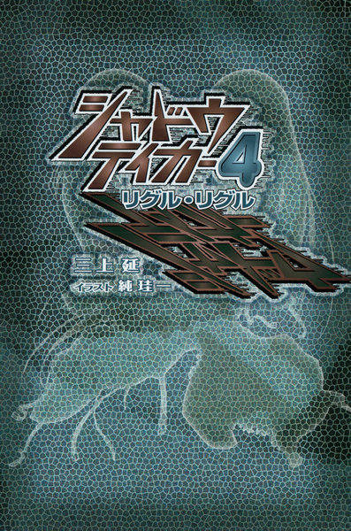
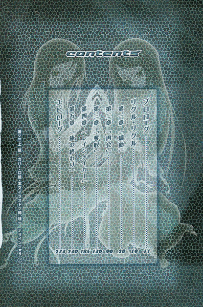
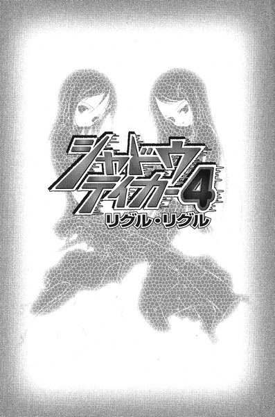
プロローグ
リグル・リグル
第一章「蠕動」
第二章「再会」
第三章「奪取」
第四章「レインメイカー」
第五章「旅の終わり」
エピローグ
プロローグ
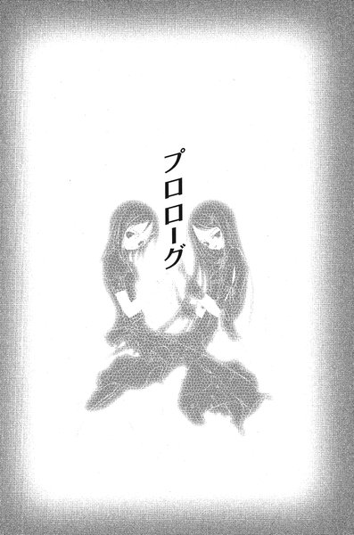
その日、雛咲は急いでいた。
小柄な体を丸めるようにして、少し前の地面を見据えたまま脇目もふらずに走っていた。
背中のランドセルの中で、教科書やノートがかたかたと揺れている。小学校を出る時、校舎の時計を見ると、もうあまり時間はなかった。一度団地に帰って、ランドセルを置いてから、幼馴染の裕生に会いに行くつもりだった。
（裕生ちゃん......裕生ちゃん）
葉は心の中で、幼馴染の名前を繰り返している。ずっと名前を唱えていれば、悪いことはなにも起こらないような気がしていた。
加賀見団地の近くまで来た時、葉は知り合いに出会った。出会った、というよりは轢かれそうになったと言った方が正しい。相手はバイクに乗っていた。細い路地から急に飛び出した葉の目の前で、緩いスピードでよろよろと走っていたバイクが急停止した。
「あっぶねー......ってなんだ。葉かよ」
加賀見高校の制服を着た金髪ピアスの少年が、バイクのシートの上でほっと息をついた。団地の同じ棟に住んでいる藤牧雄一だった。葉にとっては昔からよく知っている「近所のお兄さん」だが、世間的には立派な不良である。駅前でしょっちゅうケンカしている、とか、しょっちゅう警察に補導されている、とか、よくない噂ばかり聞いていた。
葉は彼の乗っているバイクをしげしげと見る。雄一はバイクを持っていなかったはずだ。それに、よく見るとイグニッションキーの鍵穴のあたりが、なにかを無理やりねじこんだようにぼろぼろになっていた。訝しげな葉のまなざしに気づいたのか、雄一はこほんと咳払いをした。
「あのな、葉。これは借りモンだ。マジで借りただけだ」
雄一は真面目くさった顔つきで言う。葉は戸惑いながらうなずいた。
「で、ひょっとすっとお前はこの後お巡りさんに会うかもしんねえ」
葉は首をかしげた。いきなり「お巡りさん」が話に出てくる理由がよく分からなかった。
「なんか聞かれても、俺がバイク乗ってたって言うんじゃねえぞ？俺がどっちに行ったか教えんのもナシだ。ちっと一回りしたら返すんだからよ......もと置いてあったとこに」
雄一がなにが言いたいのか、葉にはよく分からなかった。かなり不穏な話だった気もしたが、深く考える余裕はなかった。話を切り替えるつもりなのか、雄一はばんと両手をいきなり叩いた。
「で、そんな急いでどうした？ なんかあったのか？」
「病院に行く」
かすかに雄一の眉根に影が射した。
「......裕生の見舞いか？」
葉はうなずいた。病名はよく知らなかったが、二週間ほど前から藤牧裕生は重い病気で入院している。今日はその手術の日だった。
「そっか。よろしく言っといてくれ」
少しだけ沈んだ声で雄一は言った。
「......行かないの？」
「別に俺が行く必要ねえだろ。早く元気になれって伝えてくれや。何の病気か知らねーけど」
思わず葉は息を呑んだ。雄一は裕生の手術が今日だということも、手術をしなければならないほど重い病気だということも知らないらしい。ほとんど家に帰っていないし、家にいても家族とはほとんど口もきいていない、と裕生から聞いている。
「あの......」
一緒に来て、と言おうとした時、
「......ヤベ」
雄一が口の中でつぶやいた。彼の視線の先を追うと、自転車に乗った制服警官が、なにか叫びながらこちらに向かって走ってくるところだった。雄一はなぜか慌てたようにハンドルを握った。
「そういうわけで俺ァ行くわ。じゃあな──────」
と、言い残して雄一を乗せたバイクは走り出した。よろけながら遠ざかるバイクを葉は見送った──そういえば雄一が免許を持っているという話を、聞いたことがない気がする。
葉は団地の玄関のドアを開けた。
部屋の中はしんと静まりかえっている。キッチンにも居間にも母親の姿はない。鍵がかかっていなかったことに葉は疑問を感じなかった。多分、団地の敷地の中にあるスーパーへ買い物に出かけたのだろう。その程度の外出で鍵を閉める住人の方が珍しかった。
（手紙、置いていこう）
母親への置き手紙の文面を考えながら、葉は自分の部屋へ行って机の上にランドセルを置いた。急いで居間へ戻った葉は、びくっと立ちすくんだ。
部屋の中心にいつのまにか眼鏡をかけた背の高い男が立っていた。
「......葉」
喉になにか詰まっているような、ざらついた声で彼は言った──父の雛咲清史だった。葉はほっと息をつく。一瞬、なぜかそこに立っているのが父ではないような気がした。そういえば、今日父は会社を休んでいた。
「どこかへ出かけるのか？」
と、清史は言った。どことなく咎めるような声の響きに葉は戸惑った。
「裕生ちゃんのお見舞い」
清史は黙っていた。ぼんやりした目つきで部屋のなにもないところを見つめているだけだった。
「お母さんは？」
何気なく葉が尋ねると、ごくり、と清史の喉が動いた。なにか慌てて言葉を呑みこんだように見えた。しかしその時の葉にとってはすべて些細なことだった。一刻も早く病院へ行って裕生に会いたかった。
「ちょっと出かけてるんだ。帰りは遅くなる」
父のその言葉に、葉は上の空でうなずいた。母が出かけているのは最近ではよくあることだった。父と二人で帰りを待つことも珍しくない。
「実は父さんもちょっと出かけなきゃいけなくなった」
と、清史は言った。葉はその言葉を聞きながら、ちらりと居間の時計を見上げる。ここでぐずぐずしていると、手術前に裕生と話すことはできないかもしれない。
「お母さんも一緒なの？」
「......そうだ。お母さんも一緒だ」
葉はむしろその話を聞いてほっとしていた。それなら自分が病院に出かけることも、父から母に伝わるはずだった。
「葉、一人でここで父さんたちの帰りを待てるか？」
葉は再びうなずく。どうしてわざわざそんなことを聞くのか分からなかった。葉は留守番に慣れているし、今まで「待てなかった」ことなど一度もない。ただ──。
「どこに行くのかは言えないんだ」
突然、きっぱりと清史は言った。葉は初めて父親の顔を見上げる。漠然と不安は覚えたが、そう言われた以上、なにも聞いてはいけない気がした。
「......もう出かけなさい。急いでるんだろう」
一瞬、胸に浮かんだもう一つの質問──いつ帰ってくるのか、を口にするか迷ったが、確かに父の言うとおり急いでいた。どうせ待っていれば帰ってくる。
玄関のドアを開けた時、葉は立ち止まった。なにかの気配を感じたからではない。むしろその逆で、この部屋に帰ってきた時と同じように、人の気配が背後からまったく感じられなかったからだ。
葉は振り返った。誰もいないと思ったが、短い廊下の向こうに清史が立っていた。声をかけるでもなく、ただ葉をじっと見ている。
「......行ってきます」
と、葉は言う。清史は答えなかった。団地を出た後も、父が黙っていたことが妙に葉の胸に引っかかった。
（裕生ちゃん......裕生ちゃん）
しかし、その名前を繰り返すうちに、すぐに彼女はそれを忘れた。
裕生の手術は成功した。
団地に戻ってみると本当に両親はいなくなっており、葉は「一人で」二人の帰りを待つことにした。
何年経っても両親は帰らなかった。
リグル・リグル
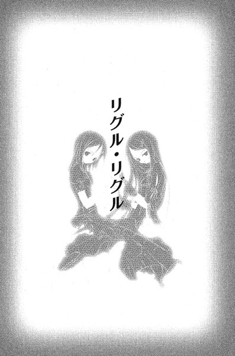
第一章 「蠕動」
１
皇輝山天明は暗闇の中で目を開けた。
夜中に一度はこうして目が覚めてしまう。薄い布団をかぶったまま、彼は身動き一つしなかった。やがて少しずつ目が慣れてくる。
彼が横たわっているのは三畳ほどの独房で、扉や窓には何十枚もの細長い金属板がブラインドのように斜めに貼りつけてある。彼が収容されているのは拘置所──まだ刑の確定していない被告人が収容される監獄だった。
天明は数日前に警察の取り調べを終えて、ここで裁判が始まるのを待っている。一ヶ月前、彼は故郷の町で多くの人命を奪う事件を起こしていた。おそらく死刑を免れることはできないだろう。捜査には全面的に協力したが、天明は警察にまったく改悛の情を見せていない。
そのような態度を見せたところで、取り返しが付かないというのが彼の考えだった。自分に向けられる人々の憎悪も、遠からず迎える死も全て覚悟している。
（もう、悪い夢は終わった）
すでに自分は死んでいるような気さえしていた。奇妙なことに四十数年の人生の中で、今ほど安らかな気持ちになったことはなかった。
（ん......？）
再び目を閉じようとした天明は、ふと部屋のどこかから誰かの視線を感じた。
かり、と窓を引っかく音が聞こえる。窓は曇りガラスとブラインドの二重構造になっているが、今は風通しのためにほんの少しだけ開いている。そこに何者かの横顔のシルエットがくっきりと浮かんでいた。
天明ははっと息を呑む。この拘置所は数年前に改築され、十数階建てのビルに生まれ変わっていた。彼の独房も地上七階にある。窓の外に誰かが立つということはありえない。しかも、その横顔は人間のものとしては奇妙に小さかった。
（カゲヌシか？）
と、彼は冷静に思う。驚きはしていたものの、恐れてはいなかった。
カゲヌシ、という怪物がこの世界にいる。それらは人間の秘めたねがいに応じて現れ、その人間と契約を結ぶ。カゲヌシは人間を餌としており、餌を食って成長するにつれて、契約者の精神をも乗っ取っていく。一ヶ月前まで、天明も龍子主というカゲヌシに取り憑かれていた。彼が事件を起こしたのも、その龍子主が原因だった。
「......誰だ？」
と、天明は尋ねた。窓の向こう側で、その顔がゆっくりと正面を向く。
「皇輝山天明」
かすれた声で相手は言った。声の高さは若い女──いや、少女と言ってもいい年頃のものだった。
「お前はかつてカゲヌシとの契約者だったわね？」
天明は体を固くした。一体、何者なのか。
「俺が答えると思うか？」
わずかな沈黙の後で、相手は嘲るように言った。
「今のあなたに守るべき秘密があるの？」
それもそうか、と天明はぼんやりと思った。何者か分からないこの相手への警戒心も、その言葉で薄れた──もはやすべてが彼にとっては関係のないことだった。
「そうだ。龍子主の契約者だった。『同族食い』に食われたがな」
「そう」
相手はその話にはあまり関心がないらしい。天明は腑に落ちないものを感じた。「同族食い」はカゲヌシの中でも忌み嫌われている。当然、この相手の目的は「同族食い」を殺すことだと思ったのだが。
「鶴亀町に戻ってから、自分の住む場所の入り口に『サイン』を書かれたことはある？」
予想もしていなかった質問だった。
「サイン」はカゲヌシを識別するためのしるしであり、カゲヌシは肉体のどこかに必ず固有の「サイン」を持っている。それを何者かが書いて回っているのは天明も知っている。確かに彼も滞在していたホテルの玄関で「サイン」を見かけたことがあった。
「ああ、あったが」
彼が答えると、すかさず次の質問が飛んできた。
「レインメイカーという名に聞き覚えは？」
「それは誰だ？」
相手は答えなかった。
「今の俺に対して隠す理由があるのか？」
天明は自嘲気味に言った。その「レインメイカー」に興味があったわけではない。先ほどの言葉をそのまま返しただけのことだった。答えを期待してはいなかったが、しばらく待っていると相手は言った。
「......何者とも接触しようとしない、特別なカゲヌシ。サインを書いているのがレインメイカーよ。レインコートを着て、常に顔を隠しているはず」
「知らんな」
天明は目を閉じて体の向きを変えた。もう帰れ、という身振りである。聞いてはみたものの、彼に関係がある話でもなく、特に好奇心もそそられなかった。殺されるかもしれないとちらりと思ったが、態度を変えるつもりはなかった。
「それに『黒曜』を持っているかもしれない」
と、相手はさらに言った。
「『黒曜』？」
面倒くさそうに天明は聞き返す。
「カゲヌシ用の毒よ」
天明は闇の中で再び目を開いた。
「心当たりがあるようね」
一瞬、天明は言うべきか否か迷った。しかし、あえて隠しておく理由も思いつかなかった。
「俺と戦った人間が使っていた」
「それは誰？」
「藤牧裕生というガキだ」
「......藤牧裕生」
と、相手は繰り返した。天明は初めて相手の動揺を感じた気がした。
「知っているのか？」
相手はその質問に答えなかった。知っているとすると、あの町の人間である可能性が高い。天明自身にもゆかりのある相手かもしれない。
「お前の目的はその『レインメイカー』か？」
天明はもう一度窓の方を見る──しかし、すでにそこには誰の姿もなかった。
「......レインメイカーも『同族食い』も加賀見にいるらしいわ」
暗がりの中で少女の声が流れる。深夜の路地に少女のものらしいシルエットがぼんやりと浮かび上がっていた。彼女は腕の支えのついた杖を右手に持っている。そのすぐそばには背の高い男女が立っていた。
三人がいるのは深夜の路地で、遠くに拘置所の建物が見えた。
「これから加賀見へ行って、レインメイカーを捕まえましょう」
他の二人は彼女の言葉に答えない。ただ、無言で立っているだけだった。
「その場合、『同族食い』が邪魔をしたら殺します」
男の方がその言葉に反応した。体をがたがた震わせながら、今にも叫び出しそうに口を開いている。少女は杖を操って男のそばに寄り添うと、左手で彼の腕をつかんで、頭を引き寄せた。
「大丈夫よ」
彼女は男の耳元でささやいた。
「『同族食い』の契約者は殺さないから」
それから笑みを含んだ声で小さく付け加えた。
「できるだけ、ね」
２
今年の加賀見の夏は早く終わった。
藤牧雄一はコンビニの外へ出ると、目を細めてサングラス越しに空を見上げた。九月に入ってから確実に太陽の光が弱くなっていた。
店舗の前は駐車場になっていて、その向こうに都心へ向かう広い国道がある。大型のトラックが二つの車線を行き交っていた。雄一はたった今買ったばかりのタバコのセロファンを破いて、一本口にくわえた。
そのまま火を点けようとして、ふと動きを止める。
目の前を一台のバイクが通りすぎていった。彼の記憶のどこかを刺激する眺めだった。
「......お」
思わず自分が出てきたコンビニの建物を振り返る。別の会社のコンビニに変わったので気が付かなかったのだが、四年前、バイクを盗んで警察に追われたあげく、ガラスを突き破って突っこんだのはこの店だった。
（あの頃、俺はバカだった）
ふう、と雄一はため息をついた。警察へ迎えに来た父親から、弟の裕生が重い病気にかかっていること、たった今手術を受けていることを聞かされたのだった。
（もうあの頃の俺じゃねえ）
あれ以来、きちんと高校に通うようになり、今は大学で研究者を目指している。どこから見ても「真人間」になったと彼は自負していた。
ただ、筋肉質の長身に金髪とピアス、紫色の派手な柄のシャツ、シルバーの太いネックレス──周囲の人間も気を遣って指摘しなかったが、外見だけは昔とあまり変わらなかった。
彼の通っている東桜大学は都心にあり、加賀見には夏休みで帰省しているだけだった。そろそろ大学では後期の授業が始まろうとしていたが、今のところ雄一には加賀見を離れる気はなかった。
その理由の一つは雄一の発案で藤牧家に住むようになった雛咲葉だった。一ヶ月ほど前から、彼女の身に異変が起こっている。原因ははっきり分からないが、徐々に記憶が失われているらしい。雄一と話す限りでは特に問題はないようだが、病院の診察では症状は止まっていないらしい。
それに、もう一つ理由がある。
「......ん？」
その時、一人の男の子が自転車を立ちこぎしながら駐車場へ入ってきた。小学校の高学年ぐらいで、メガネをかけた痩せた少年だった。自転車はごみ箱の前でつんのめるように停止する。前のかごには重そうなバッグが入っているところを見ると、これから塾へでも行くところらしい。
雄一は火を点けていないタバコを胸ポケットの中へ放りこんだ。
「よう、小学生」
雄一は笑顔で声をかける。コンビニの中へ入ろうとしていた彼は、凍りついたように立ちすくんだ。よくある反応なので雄一はあまり気にしていない。可能な限りフレンドリーに話しかけたつもりである。
「今ヒマか？ もしよかったらちっと協力して欲しいんだけどよ。五分ぐらいで終わっから」
と、言いながら雄一は小脇に抱えていたバインダーを彼の方へ差し出す。バインダーにはフィールドワークのための調査用紙がはさまっている。
「俺ァ東桜大学二年の藤牧ってモンだ。今、論文書くために、ここらへんの小中学生の噂話を聞いて回ってる。知ってる範囲でいいから、教えてくんねーか？」
「......」
彼は困惑と不安と驚きが複雑に入り交じった表情で雄一の顔を見上げていたが、やがてがくがくとうなずいて見せた。
「あー、よし。お前、『カゲヌシ』の噂って知ってるよな？」
「......ちょっとだけ」
小さな声で少年は答えた。
「どういうモンだって聞いたか？」
「なんか、人間の影の中にいるバケモノで、人間を食べる......とかって」
雄一はうなずきながら聞いているが、肝心の調査用紙にはなにも書きこもうとしていない。以前は本当に論文を書くためにカゲヌシの噂を調査していたが、この一ヶ月の間、わざわざ加賀見に残って聞きこみをしているのは別の目的のためだった。
「カゲヌシを見たことがあるか？ じゃなかったら、誰か見た奴を知ってるか？」
少年は不審げに首を横に振った。雄一の質問は噂とは関係がない──今の雄一が調べているのは、噂ではなくカゲヌシの実在そのものだった。
得体の知れないバケモノなど、存在するはずがないと以前は思っていた。しかし、この都市伝説は不自然なところがある。誰かが真実を隠すために、無理に広めているような印象をどうしてもぬぐうことができなかった。
一ヶ月前、皇輝山天明という男が殺人事件を起こしてから、その疑念はますます大きくなった。隣の鶴亀町でオカルトまがいのマジックショーを催していた天明は、自分のスタッフを全員惨殺し、さらに鶴亀神社の夏祭りに集まった人々をも大量のガソリンで焼き殺そうとしたのだった。
人々は夏祭りの会場で、天明のそばに巨大な蜥蜴の怪物が侍っていたのを見たという。天明が「なんらかの」トリックを用いて登場させたということになっているようだが、雄一は納得していなかった。夏祭りの数日前、彼はたまたま天明のセミナーに参加していたが、なにか人智を超えた力が備わっているのを垣間見た気がした。
その天明がさかんに口にしていたのが「カゲヌシ」だった。天明はそれを実在するものとして扱っていた。
「最近、まわりで急に人がいなくなったりとか、誰かが死んだりとか、そういうことはねえか？」
と、雄一は言った。少年はちょっと考えてから、その質問にもぶるぶると首を振った。
（ま、さすがにそれはねえか）
雄一はほっとする。しかし、この数ヶ月、彼自身の周囲で異様な事件が立て続けに起こっていた。六月には高校時代の部活の後輩の飯倉志乃が、三人もの人間を殺した、と言い残して自殺した。七月には同じ大学のゼミに所属している玉置梨奈が行方不明になった。そして八月には皇輝山天明の事件。
そして、その全ての事件の周囲には藤牧裕生と雛咲葉がいる。そういえば、六月の事件が起こり始めたあたりから、裕生はやけにカゲヌシに関心を抱くようになっていた。「カゲヌシは実在するのか」と尋ねられたこともある。裕生たちがなにかの形で「カゲヌシ」に関わっている気がしてならない。
裕生たちは固く口を閉ざしているが、手をこまねいているのはあまりにももどかしい。そこで、自分なりに調べているのだった。
「......あの、そろそろ行かなきゃ」
少年の声に雄一ははっと我に返った。
「そっか。じゃあ、最後に一つだけ」
雄一はぐっとのしかかるように相手に顔を近づけた。
「『レインメイカー』って名前に聞き覚えねえか？」
初めて少年の表情が動いた。なにか知ってるな、と雄一は思った。
この一ヶ月、聞き回った結果得られたのは「レインメイカー」という名前だけだった。黄色いレインコートを着た男の噂で、カゲヌシの居場所を教えてくれる存在らしい。他の地域でも広まっている噂だが、加賀見市近辺では異様に知名度が高い。
そして、レインメイカーの噂には奇妙なタブーが含まれている──自分が見たと言ってはいけない。自分が見たと話したら、レインメイカーに殺される。
「見たことあんのか？」
と、雄一は低い声で尋ねた。
「誰かが見たって、聞いた」
かすかに少年の声は震えている。レインメイカーの名前を出した途端、彼は今までとは比べものにならないほど怯え始めていた。今までにも同じような反応に何度か出会ったことがある。少なくともそのレインメイカーは、加賀見近辺にいるのではないかと思う。裕生も黄色いレインコートの男を見たことがあると言っていた。「カゲヌシ」の真相を確かめるには、このレインメイカーとの接触が必要だと雄一は考えていた。
「分かった。その『誰か』はどこで見たんだ？」
少年は口をつぐんでしまう──たくさんの子供たちに話を聞いてきたが、それについて具体的に答えてくれる相手には一度も出会ったことがない。
（またダメか）
雄一が諦めかけたその時、
「......病院」
と、少年が言った。雄一は大きく目を見開いて、さらにぐっと身を乗り出した。
「どこの病院だ？」
まともな返事を得ることができたのは初めてだった。
「あの......よく知らないけど、幽霊病院で見たって」
幽霊病院。雄一の実家がある加賀見団地のすぐそばにある、十年ほど前に廃院になった産婦人科だった。加賀見市に住んだことのある人間なら誰でも知っている。雄一も高校生の頃、肝試しで行ってみたことがある。
「見たのはいつだ？」
「十日ぐらい前。通りかかった時に、建物の中にいるのを、一瞬見たって......でも、見間違えかも」
話の内容から察するに、見たのは「誰か」ではなくこの少年自身なのだろう。タブーに触れるのを恐れているに違いない。そうでなければ怯える必要はないはずだった。
「他に知ってることはなんかねえか？」
意気込んで尋ねると、少年はかすかに体を引いた。機会さえあれば今にもこの場から逃げ出しそうだった。
「ほ、他にはなにも......」
かつん、と背後でかすかに地面を叩く音が聞こえた。なぜか背筋にぞくりと震えが走る。雄一は弾かれたように少年から体を離し、音の聞こえた方へ向き直った。
緑色のワンピースを着た髪の長い女が立っている。最初に目についたのは長く伸ばした銀髪だった。つやのある細い髪がふわふわと風にそよいでいる。どうやら足が悪いらしく、腕支え付きの金属製の杖を握りしめている。一瞬、散歩中の老女だと思った。
「なにをしているんですか？」
と、咎めるように彼女が言った。張りのある澄んだ声に改めて女の顔を見ると、老女ではなく若い娘だった。顔にはしわ一つない。ふっくらした頬に黒目がちの瞳。どことなく人形を思わせる顔立ちである。
ふと、誰かに似ている気がした。
「なにって......ただのアンケートだぜ？」
「本当ですか？」
またか、と雄一はうんざりしながら思った。こうして子供たちを呼び止めて話をしていると、しょっちゅうあらぬ誤解を受ける。警察を呼ばれそうになったのも一度や二度ではない。
「嘘じゃねえよ。なあ？」
少年に合意を求めると、一瞬迷ってから彼はうなずいた。
「はい......あの、でももう行かないと」
彼は小声で言い、そそくさとコンビニの中へ入っていってしまった。一瞬引き留めようか迷ったが、もうこれ以上聞き出せる話もなさそうだった。
「あー、どうもありがとよ。小学生」
と、礼を言いながら背中を見送った。
「あの子からレインメイカーの噂を聞いてたんですか？」
と、銀髪の少女は言った。雄一は表情を殺したまま彼女を見返す。
「なんの話だ？」
「さっき言っていたでしょう。『レインメイカー』って」
「ずいぶん前から聞いてたんだな。人の話を」
雄一はこの少女に対する警戒心を強めていた。そういえば足が悪いはずなのに、近づいてくる足音もまったく聞こえなかった。
「ごめんなさい」
彼女は素直に謝った。
「知ってんのか？ レインメイカーの噂」
「『黄色いレインコートを着て、カゲヌシの居場所を教えてくれる』んでしょう？わたしも興味があるの」
（ナニモンだ、こいつ）
そう思った瞬間、
「わたし、船瀬千晶です」
と、彼女は言い、額にかかった髪をかき上げながら雄一を見上げる。自分も名乗るべきか雄一は迷った。この少女にはなにか奇妙なところがある。しかし、際立った外見のせいでそう感じているだけなのかもしれない。
「......俺は藤牧雄一。東桜大学に通ってる」
結局、雄一は名前を明かした──千晶は首をかしげる。
「大学生？ でもなんだか......」
すまなそうに目を背けて、彼女はぼそっと付け加えた。
「......ヤクザみたい」
「なに言ってんだお前。人間ってのは見た目で判断しちゃ......」
ハッと雄一は口をつぐむ。以前にも誰かと似たような同じ会話を交わしたことがある。あれは確か──。
（葉だ）
ようやく思い当たった。目鼻立ちはまるで違うし、身長も葉よりはずっと高い。それなのに、どことなく似た雰囲気を漂わせていた。
「わたし、最近このあたりに引っ越してきたんです。あなたは加賀見に住んでるんですよね？」
ああ、と雄一はうなずいた。
「大学遠いから家は出たけどな。加賀見育ちだ」
ふと、雄一はさっきタバコを吸い損ねたことを思い出した。胸ポケットから少しよれたタバコを出すと、火を点ける。
「どのあたりに住んでるんですか？」
ちょうど煙を吸いこんでいた雄一は、無言で団地のある方角を指さした。あっちの、と言おうとすると、
「加賀見団地ですか？」
と、千晶が言った。雄一は自分が指さした方角を見る。この場所から団地の建物が見えるわけではない。
「このへん、知ってんのか？」
「わたしも子供の頃は加賀見に住んでましたから」
彼女は笑顔で言った。話していると普通の女の子と変わりはない。なにかおかしいと思ったのも、ただの思い過ごしのような気がしてきた。
「じゃ、ここらの学校に人んだな。年は？」
「高一。加賀見高校に編入することになってるんです」
（葉と同じか）
つい頭の中で比べてしまう。
「ここでなにしてんだ？」
「今、お父さんと待ち合わせしてて......もうすぐ来るはずなんですけど」
ふと、雄一は葉の両親のことを思った。四年前、弟の裕生が手術した日──そして雄一が逮捕された日は、葉は団地へ向かう葉とばったり会っている。最後に葉が父親と話したのはその直後だったという。
あの時、葉がなにか言いたげだったのを憶えている。裕生の手術があるということを伝えようとしていたらしい。もし葉の話を最後まで聞いていたら、病院へ行くことになったに違いないし、その場合は葉と一緒にいったん団地へ戻っていただろう。
（もしあの時、俺も団地についてってたら）
葉の父親に会っていたかもしれない。彼らの失踪を止められたとは思わないが、少なくともバイクでコンビニのガラスを突き破るよりはマシなことをやれた可能性がある。
その時、千晶が口を開いた。
「......あ、お父さん来た」
雄一は彼女の視線の先を追う──スーツ姿の中年の男が道路を渡ってくるところだった。年齢は四十代半ば、ひょろりと背が高く、神経質そうな面長の顔にはメタルフレームのメガネをかけていた。
「......」
雄一の口からぽとりとタバコが落ちる。しかし、雄一は口を開けたまま、自分たちの方へ近づいてくる男を見つめていた。
「お父さん、遅い」
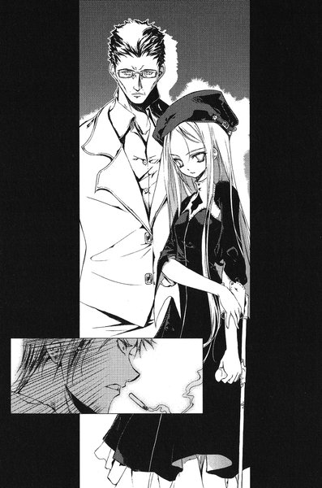
と、千晶は言った。
男は娘の目の前に立つと、凍りついたままの雄一を怪訝そうに見つめた。
「この人は？」
と、男は千晶に言った──雄一の記憶の中の声とまるで同じだった。ほんの少し頬がこけ、髪の毛にもまばらに白いものが混じっているが、年月を考えればほとんど変わっていないと言っていい。
「待ってる間、ちょっと話し相手になってもらってたの。藤牧雄一さん」
その名前を聞いても、男は眉一つ動かさなかった。雄一に軽く頭を下げる。
「こんにちは。船瀬です」
「......フルネームで聞いていいスか？」
やっとのことで雄一は言った。船瀬は一瞬戸惑ったようだったが、
「船瀬智和といいますが」
人違いだ、と雄一は自分に必死に言い聞かせていた。
しかし目の前に立っているのは、葉の父親の雛咲清史だった。
３
朝の教室。
新学期の三日目だった。加賀見高校では普段通りの授業も始まり、夏休みが過ぎ去ったことを生徒たちはしぶしぶ受け入れつつある。
窓際の一番後ろの席で、三人の生徒が他のクラスメートに聞こえないよう頭を寄せ合って話をしている。藤牧裕生と、その友人の佐貫峻と西尾みちるだった。
「......で、結局誰だったんだ、その人って。本当に雛咲さんの父親か？」
佐貫が尋ねると、裕生は首をかしげた。
「よく分からないけど、とにかく見た目は葉のお父さんそのものだって兄さんは言ってた」
「でも、全然違う名前なんでしょ？ 別人じゃないの？」
と、みちるが口をはさむ。
昨日、厳しい顔で団地に帰ってきた雄一は、裕生にこっそりと「雛咲葉の父親そっくりの人物に出会った」ことを告げたのだった。
「分からないけど、兄さんがあそこまで言いきるんだからほんとに似てるんだと思うよ」
「藤牧先輩、名前憶えんのは苦手だけど顔は間違えないんじゃないか」
佐貫が腕組みをしながら言った。
佐貫とみちるは裕生の協力者である。すでに裕生は二人に葉と自分たちの秘密を打ち明けていた。
彼の幼なじみの雛咲葉には「黒の彼方」というカゲヌシ──異世界から来た怪物が取り憑いている。放っておけばいずれ葉は完全に意識を乗っ取られてしまうはずだった。記憶の欠落もその兆候である。
裕生と葉は「黒の彼方」を引き離す方法を探るのと同時に、同族を捕食する「黒の彼方」の力を使って、人間に害をなす他のカゲヌシと戦ってきた。先月、鶴亀町で事件を起こした皇輝山天明も、「龍子主」というカゲヌシに取り憑かれていた。
「もし雛咲さんのお父さんだったら、例の『皇輝山文書』のことも分かるんじゃねえか？......なんで、カゲヌシの『サイン』があれに書いてあんのか」
『皇輝山文書』とは、皇輝山天明が持っていた偽の古文書のことだった。もともと題名もついていない粗末な和綴じの書物で、天明の話では失踪する直前の雛咲清史から託されたものだという。暗号のような奇妙な文字で書かれているため、持ち主だった天明にも解読できなかったらしい。逮捕される直前、天明はそれを佐貫に託していた。
もちろん、裕生たちにもどういう内容なのかはさっぱり理解できなかった。しかし、つぶさに見ていくうちに見覚えのある記号がいくつも出てくることに気づいた。
『皇輝山文書』の文字には、なぜか今まで裕生たちが目にしてきた「サイン」──カゲヌシの体に刻まれた固有のしるしが含まれていた。つまり、この書物にはカゲヌシに関係することが書かれているのだった。
ただ、仮に葉の父親が『皇輝山文書』を作ったのだとしたら、ひとつ気がかりなことがある。「サイン」が書かれているということは、葉の父親もカゲヌシとなんらかの関係があることになってしまう。
「あれが本当に雛咲さんのお父さんが作ったものかどうかも、聞けば分かるしね」
と、みちるが口をはさむ。『皇輝山文書』が手に入った時から、彼女はずっと葉の父親がそれを作ったという話に疑問を唱えてきた。あの天明がどこまで本当のことを言うかは分からない。裕生はどちらの可能性もあると思っていた。
「ただ、本当に葉のお父さんだったら、一緒にいた女の子は......」
裕生は口をつぐんだ。三人の間に沈黙が落ちる。もし、船瀬という男が雛咲清史だとしたら、失踪中に別の家族を得たということになる。ずっと両親の帰りを待っている葉に、とても伝えられる話ではなかった。
「とにかく、その船瀬って人を捜して、会っておきたいんだ」
と、裕生は言った。
「どこに住んでるか、分からないの？」
と、みちる。昨晩の会話を思い出して、裕生は顔をしかめた。
「どのへんに住んでるのか兄さんは聞いたらしいんだけど、ぼくには教えてくれなかったんだよ」
「なんで？」
みちると佐貫が同時に尋ねた。
「『俺に任せとけ』って。心配するなって言われた」
「......なにするつもりなんだ？」
「さあ......」
裕生は不安にかられていた。兄がなにか突拍子もないことを始める前に、その船瀬が葉の父親かどうか確かかめておきたかった。
「どうにか、兄さんから聞き出してみるよ」
と、裕生は言った。
「なに言ってんだよ」
佐貫があきれ顔で言う。
「その人の『娘』っていう女の子がうちの学校に編入したんだろ？まずその子を捜せばいいじゃねえか」
＊
昼休みになると、葉はこっそりと教室を出ようとした。
「あれ、雛咲さん。どっか行くの？」
ドアの前で声をかけられて、葉はびくっと体を震わせた。
「......ちょっと、部室に」
振り向くと、ショートカットとメガネの背の高い女の子が立っていた。しかし、誰なのかはっきり思い出せない。
「あ、そう。ひょっとして西尾先輩も来たりする？たまに茶道部の部室にいるよね？」
一瞬、葉は目を閉じた──西尾さん。裕生ちゃんの友達。
彼女のことははっきりと思い出すことができる。
「来ないと思う」
「そう。でも、もし会ったら神崎が捜してたって言っといて欲しいんだけど」
神崎、という名字を葉は口の中で繰り返した。それを聞いた途端、断片的に彼女についての記憶が蘇った。確か演劇部に所属していたはずだ。みちるの後輩にあたる。
「......分かった」
葉はあいまいにうなずいて、逃げるようにその場を立ち去った。
新学期になってから、葉は教室に居づらくなった。半数近くのクラスメートの名前を思い出せない。何人かは顔すらも分からなかった。
旧校舎へ通じる渡り廊下に来たところで、葉は立ち止まった。彼女はスカートのポケットから手帳と短いボールペンを出した。ぎっしりと細かい字が書きこまれたページをめくって、新しいページに「神崎さん。クラスの人。演劇部。ショートカット。背が高い」と書きこんだ。こぼれ落ちていく記憶の代わりがこの手帳だった。
その日起こった忘れてはいけないことや、もともと知っていたはずのことを手当たり次第に書きこんでいる。機会があるとこれを開いて、なにを憶えておかなければならないかを確認しているのだった。
葉は元通りに手帳をしまって、新校舎と旧校舎の間にある中庭を窓越しに見下ろした。植木や藤棚やベンチが並んでいる光景を、初めて見るような気がした。学校を歩いていると、しょっちゅう見覚えのない場所に出くわす。
記憶を失うにつれて、世界は葉の知らない場所になっていく。「黒の彼方」が龍子主を取りこんでから、記憶の欠落は速度を増した。授業を受けても後からうまく内容を思い出せない。こうして学校に通うことができるのも、あとわずかな間だけの気がする。
本当は今も学校を休んだ方がいいと病院の医師に言われている。しかし、それだけは断固として拒否していた。学校を休めばそれだけ裕生と離れることになる。
葉が一番恐れているのは裕生にまつわる記憶を失うことだった。離れている時間が増えれば、それだけ忘れていくことが多い気がする。わずかでも一緒にいる時間を減らしたくなかった。
「......にちは」
どこかから声が聞こえた。
顔を上げると、旧校舎の方から歩いてくる女子生徒が見えた。足を進めるたびに右の肩がぐっと下がる。長く伸ばした髪はなぜか銀色で、腕の支えがついた杖を握りしめている。
「こんにちは」
葉のすぐ目の前まで来てから、もう一度彼女は声をかけてきた。口元には柔らかな笑みを浮かべている。まるで人形のように目鼻立ちの整った美人だった。
「......こんにちは」
戸惑いながら葉も答える。見覚えのない相手だった。しかし、挨拶をしてきたということは、彼女とも知り合いなのかもしれない。
「どこに行くの？」
「部室」
上履きの色を見ると彼女も葉と同じ一年生らしい。
「どこの部？」
「茶道部」
「ふうん」
彼女は関心のない調子で言った。答えを知っているのに、尋ねてきた気がした。
目の前にいるとどうしても髪の色を意識してしまう。窓から射しこむ光を浴びて、まるで雪のように輝いていた。
「染めたんじゃないの。自然にこうなったのよ」
彼女は顔を寄せてささやくように言った。葉はすぐ近くにある彼女の顔を凝視する。銀色の髪の毛に黒い瞳がくっきりとしたコントラストを作っていた。
「わたし、船瀬千晶」
なにがおかしいのか、彼女はくすくす笑いながら杖を持っていない方の手で葉の肩に触れる。葉は体を硬くしたまま立ちつくしていた。名乗ったということは、今まで面識があったわけではないらしい。
「編入してきたばっかりなの。今、部活の見学してたとこ」
と、千晶は言った。葉の肩に置かれた手は、いつのまにかうなじの近くに移動し、葉の髪を柔らかく撫でている。
「つい声かけちゃったんだけど、迷惑だった？」
葉は首を振った。しかし、本音では早く立ち去りたかった。もう裕生は部室で待っているかもしれない。
「茶道部に藤牧先輩っているでしょう？」
葉ははっと息を呑んだ。
「どうして知ってるの？」
「どうしてって......茶道部もちょっと見学したかったから、クラスの子に誰が部長なのか聞いたの。茶道部の部長ってその藤牧先輩なんでしょう？」
葉の頬がかっと熱くなった。裕生の名前に過剰に反応した自分が恥ずかしかった。
「あなたと付き合ってるの？」
千晶はからかうような口調で言った。葉は慌てて首を振り、
「......ちがう」
と、消え入りそうな声で答えた。葉にとってはあってはならない誤解だった。自分はともかく、裕生に迷惑がかかる。
「ね、その藤牧先輩ってどんな人？」
千晶は葉の肩に手を置いたままで話を続けている。
「男の人で茶道部って珍しいでしょ？」
葉は黙っていた。相手への警戒心はさっきよりも強まっている。妙に裕生のことを聞きたがっている気がした。
「そこまで警戒しなくてもいいと思うけど？」
千晶は葉の考えを見透かすように言った。この相手にはどこか信用できないものを感じる。ただ、それが千晶自身のせいなのか、彼女が裕生のことを口にしているせいなのか、どちらなのか葉にもよく分からなかった。
「藤牧先輩のことそんなに好きなの？雛咲さん」
「......え？」
顔を上げた瞬間、葉のうなじのあたりを撫でていた千晶の指先が、ブラウスの襟の中にするりと潜りこんだ。ぞくっと葉の体に震えが走る。
「いやっ」
突き飛ばすように葉は千晶から距離を置いた。よろけた千晶はガラスの窓にどしんと肩をついた。
「あ......」
一瞬、葉は罪悪感にとらわれた。千晶の足が悪いことを忘れていた。手をさしのべようか迷っていると、彼女の唇がかすかに動いた。
「冗談よ。ごめんね、驚かして」
笑顔で千晶は言った。それから、蹴るように杖を床について、元通りにまっすぐ立った。
「ちょっとからかっただけ。あまり気にしないで」
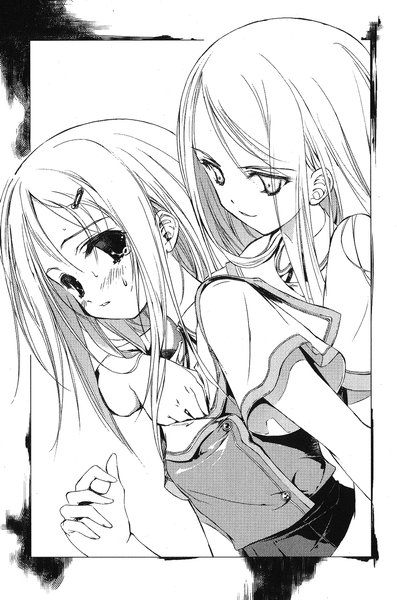
葉の心臓はどきどき脈打っている。しかし、それは今千晶にされたことのせいではなかった。
「どうしてわたしの名前を知ってるの？」
と、葉は言う。
一瞬、千晶の笑顔がこわばった気がした──しかし、ほんの一瞬だった。
「さっきクラスの子に聞いたって言ったでしょ？その時にあなたの名前も聞いたの。藤牧先輩がいなかったら、あなたに話を聞けばいいって」
こともなげに彼女は言った。
葉は体からわずかに力を抜いた。聞いてみれば別に不思議な話でもなかった。
「じゃあ、そろそろ行くね。雛咲さんも急いでるみたいだし」
そう言って、千晶は杖をついて歩き出した。数歩進んでから、葉を振り返る。
「また今度ね」
葉の答えを待たずに、彼女はまた歩き出した。葉はぼんやりとその背中を見送った。
４
その日の夜。
裕生は自分の部屋の机に向かって、真剣な顔つきで考えこんでいる。机の上には小さな古いノートが広げられており、ちまちました彼の字が並んでいた。
黒い海へ出ていった二人は、
それからなん日も波のあいだをさまよいました。
空には雲ひとつなく、海には魚のかげひとつ見えません。
けれど朝日ののぼるほうへ吹きつづける、つよい風が二人の味方でした。
ぴんとはった帆が風を受けて、ぐいぐいと舟は進んでいきました。
やがて二人ののった舟は、大きな国の港にたどりつきました。
そこは一人の王さまがおさめる国でした。
石づくりの大きな建物があり、たくさんの人がいました。
おまえたちはどこからきたのだ。
人びとは二人にそうたずねました。
黒い海をこえてきたの。
女の子がおそるおそるこたえると、二人は王さまのすむお城へつれていかれました。
「......ダメだ」
裕生はペンを放り出した。どうしてもこの先を書くことができない。
彼が取り組んでいるのは、かつて入院中に書いていた物語「くろのかなた」の続きだった。孤島に住んでいた女の子は、海の向こうからやってきた男の子と一緒に島を出る。
葉との約束でその続きを書くことになっている。しかし、一ヶ月かかって書いたのはこれだけだった。
一ヶ月前、裕生たちは皇輝山天明の契約した龍子主と「黒の彼方」を戦わせて共倒れを狙う作戦を取った。結局その作戦は失敗し、龍子主を食った「黒の彼方」はさらに力を増した。食欲が満たされているせいか、葉に話しかけることもほとんどなくなっているが、また餌を欲すれば、葉を責め立てるようになるはずだ。
（きっとまた他のカゲヌシをぶつける機会がある）
次の機会を待つ以外に、今の裕生にはすることがない。
葉には続きを書いて欲しいと頼まれている。少しでも彼女の支えになればと思って、書こうとしてきたものの思うように進まなかった。
「......あの」
葉の声が聞こえた。ノートを閉じながら廊下の方を見ると、ふすまのところにパジャマを着た彼女が立っていた。
「どうしたの？」
「声が聞こえたから」
「ごめん。なんでもないよ......ちょっと独り言いっただけ」
沈黙。葉はそこに立ったままだった。なにか他に言いたいことがあるらしい。
「もう寝るの？」
「はい、あの......ここ、開けておいていいですか」
裕生は黙ってうなずいた。葉の部屋は廊下をはさんで反対側にあるのだが、先月あたりからふすまを開けっぱなしで寝るようになった。さらに裕生の部屋のふすまも開けてくれるよう毎晩頼みに来る。
葉の不安はよく分かるし、彼女の頼みを断るつもりはまったくなかったが、別の意味で裕生は困っていた。夜中にちょっと身を乗り出すと葉の寝姿が目に入ってしまう。たまに寝返りを打っているのを見たりすると、さすがの裕生も落ち着かなくなった。
（そのうち、一緒の部屋に寝てって言われるかも）
なんとなく葉の望みはそういうことではないかと思う──しかし、そうなった場合、いくらなんでも普通に眠れる自信はなかった。
「おやすみなさい」
と、葉が言った。
「おやすみ」
彼女が自分の部屋に戻るのを見送ってから、裕生はさっき閉じた「くろのかなた」のノートを開く。
主人公たちが島から出たとたんに、どう続けたらいいのか分からなくなった。もともと次の展開などまったく考えていなかった。たまに見る奇妙な夢をもとに書きなぐっただけのものだった──黒い島で、顔の見えない誰かと出会うあの夢。
（そういえば、あの夢にもなにかあるのかもしれない）
佐貫の話では、皇輝山天明もよく似た夢を見ると話していたという。ただの偶然かもしれないが、ずっとそれが気になっていた。
その時、机の上に置いてあった携帯からメールの着信音が聞こえた。送ってきたのは佐貫で、開いてみると画像ファイルだけだった。
「......誰これ」
画像を見た裕生は、思わずつぶやいていた。真正面を向いた男性の肩から上が写っている。スナップ写真の一部を取りこんだものらしい。年は三十代後半、髪は地肌が見えるほど短く、精悍な顔つきだった──しかし、全然見覚えのない人物だった。
裕生が首をひねっていると、今度は携帯の着メロが鳴り始める。やはり相手は佐貫だった。ちらっと葉の部屋の方を見ると、すっかり電気も消えていた。
裕生は携帯をつかんだまま立ち上がると、急いで部屋から出た。そして、玄関でサンダルを突っかけてドアを開ける。
「今、送った画像見たか？」
外に出ると同時に通話ボタンを押すと、興奮気味の佐貫の声が聞こえてきた。
「見たよ。なにあれ」
裕生はコンクリートの階段を降り、途中の踊り場の手すりにもたれた。
「明日のことになにか関係あるの？」
裕生たちは一年生のクラスに編入したという船瀬千晶の住所を調べた。かなり手こずるだろうと思っていたが、結局あっさりと知ることができた。昼休み、千晶はいくつかの部室を見学しており、そのうちのひとつ──佐貫が所属しているカーリング同好会に連絡先を残していた。
明日の土曜日に、裕生たちは船瀬家に行って「船瀬智和」が葉の父親かどうかを確かめるつもりだった。もちろん、葉には内緒である。
「まあな。あれ、雛咲さんに似てないか？」
「はあ？」
思わず裕生は声を上げた。
「全然違うよ。もっと痩せてたし、メガネかけてたし」
「角度によって似てるように見えたりとか、そういう可能性は？」
「まさか。そんなのありっこないよ。それがどうかしたの？」
「やっぱりな」
と、佐貫は言った。
「あれが本物の『船瀬智和』なんだ」
「......え？」
「五年ぐらい前の写真だけどな。それを顔んとこだけ取りこんだんだ」
裕生は頭が混乱してきた。
「どういうこと？」
「今朝、話聞いた時に思ったんだ。この親子が加賀見に『戻ってきた』んだとしたら、昔はこっちに住んでたってことだろ。だったら、昔のことを調べてたらなにか分かるんじゃないかって。で、調べたんだけど、うちの親父と顔見知りだったよ。何回か顔合わせたことがあるって言ってた」
佐貫の家は鶴亀町の有数の地主だった。裕生もよくは知らないのだが、佐貫の父親や祖父は地元の名士で通っているらしく、このあたりでは顔も広い。
「加賀見で何代か続いてた病院の跡取りだったんだってよ。何年か前に病院はなくなって、その後は市民病院に勤めてたらしいけど」
「......それがこの画像の人？」
「そう。だから、藤牧先輩が昨日会った『雛咲さんのお父さんにそっくりな人』っていうのは、すくなくとも『船瀬智和』じゃないってことだよ。誰なのかはともかくとして、偽名使ってるのは間違いない」
裕生は携帯を握りしめたまま考えこんだ──少なくとも、雄一がこの画像の男性と葉の父親を見間違えるはずがない。葉の父親である可能性がより高くなったということだった。
「あれ、そうするとこの写真の『船瀬智和』は今どこにいるんだろ？」
「さあな。そのへんは誰にも分からないかもな」
「どういうこと？」
「『船瀬智和』は四年前の春に行方不明になってる。家に残ってたのは千晶って娘一人で、奥さんはずっと昔に亡くなってた。その子を親戚が引き取るかどうかモメてるうちに、今度は娘もいなくなったんだ。父親がこっそり迎えに来たんだろうって言われてた」
（葉に似てる）
と、裕生は思う。四年前の春に両親が失踪し、一人取り残された女の子。年齢まで同じだった。もっとも、葉とは違って迎えが来たわけだが。
「でも、もし父親が迎えに来たんだったら、どうしてその船瀬千晶は葉のお父さんと一緒にいるんだろう？」
「俺もそれは変だと思ってるんだ。第一、そうなると船瀬千晶はまるっきり他人のおっさんと一緒に住んでるってことになるだろ？なんか普通じゃねえよな」
電話を切った後で、裕生は踊り場の手すりにもたれたまま考えこんだ。
葉の父親にそっくりな男だけではなく、その娘のことも気になっていた。むしろ彼女の方になにか重大な秘密があるように思えてならなかった。
（とにかく、明日だよな）
そう思って部屋に帰ろうとした時、ふと道路に誰かが立っていることに気づいた。
厚手の黄色いレインコートを着た男が、裕生の方を見上げている。顔はマスクとゴーグルで覆われ、髪の毛はコートのフードで完全に隠れていた。
「......レインメイカー」
と、裕生はつぶやいた。
カゲヌシの住居の入り口に「サイン」を書いて回っている奇妙な男だった。龍子主と戦った時、対カゲヌシ用の毒である「黒曜」をくれたのもこの男で──いや、本当に男性なのかどうかも、それ以前に人間なのかどうかもよく分からない。言葉を喋ることすらほとんどできないようだった。
（近頃、よく来るな）
「黒曜」を裕生に託して以来、夜になると窓の外に立っているのを見かけることがある。特に裕生と会おうというわけではないらしく、しばらくするといつのまにかいなくなっている。最初は不気味だったが、最近では慣れて気にならなくなっていた。
ただ奇妙なことに、藤牧家でレインメイカーを見たことがあるのは裕生だけだった。彼一人の時でなければ、決して現れないのだった。葉ですら目にしたことはない。
時々、自分の生み出した幻覚ではないかという気がするほどだった。
（......まあ、いいか）
レインメイカーに手を振る──もちろん相手はただ突っ立っているだけだった。
裕生は向きを変えて、階段を上がっていった。
５
「......あそこか」
裕生と佐貫とみちるの三人は足を止めた。
彼らが見ているのは、通りの突き当たりにある二階建ての家だった。三人は加賀見市の外れにできた新しい住宅地にいる。住宅地、といっても区画整理が終わったばかりで、だだっ広い更地の中に、飛び石のようにぽつりぽつりと家が建っているだけだった。すっかり完成しているアスファルトの道路だけが奇妙に浮いて見える。
「じゃ、行こうよ」
みちるが歩き出そうとすると、佐貫が彼女の肩をぐいとつかんだ。
「ちょっと待て。西尾は残った方がいいだろ」
「え、なんで？」
「全員で行って、万が一のことがあったらどうするんだよ」
一人残った方がいいとは裕生も思っていた。今度のことからはなにか異常なものを感じる。ひょっとするとカゲヌシが絡んでいるかもしれないと裕生は思っていた。
「だからってなんであたしが留守番なの？」
「裕生がいないと雛咲さんの親父さんの顔は分かんねえし、西尾より俺の方が冷静だろ。客観的に言って」
佐貫はきっぱりと言った。
「っていうか、お前ら二人は組ませたくねえんだよ。また自分の体に火でも点けられたらこっちが心配だし。西尾は裕生のことになると見境つかなくなるからな」
裕生はちらっとみちると顔を見合わせる──みちるの顔が赤くなっていた。佐貫が言っているのは鶴亀神社で天明と戦った後の出来事だった。「黒の彼方」に完全に支配された葉を取り戻すために、裕生とみちるは自分の体に火を点けたのだ。そのために何日か入院しなければならなかった。
「だ、だってあの時は他にどうしようもなかったでしょ。見境ないってなんなのよ」
「裕生はどう思うよ？」
佐貫は突然話を振ってきた。しばらく考えてから、裕生は口を開く。
「......佐貫の方がいいと思う」
みちるの顔にふっと影が射した。彼は慌てて付け加える。
「西尾が冷静じゃないからじゃなくて、この中で佐貫が一番このことよく調べてるし。ぼくが行く必要なければ、佐貫と西尾で行くのが一番いいと思うよ」
「ま、確かにそうだな。この中じゃ裕生が一番腕力ねえ」
佐貫がまたきっぱりと言った。
「......え？」
思わず裕生が聞き返そうとした時、
「分かった。二人で行ってきなよ」
みちるがしぶしぶ言った。
「で、あたしはなにすればいいの？」
不満げな表情のままで彼女は言う。
「もし俺たちが三十分待っても出てこなかったら、雛咲さん呼んでくれ。なんかヤバいと思った時はどっちかが携帯でコールするから」
みちると別れた裕生たちは、住所の示している門の前に立った。遠目で見るよりも大きな家だったが、表札はどこにもない。
「......『黒曜』、持ってきてるよな」
佐貫が小声で言い、裕生はうなずいた。
「持ってるよ」
裕生がレインメイカーから託されたカゲヌシに効く毒物が「黒曜」だった。どうやら「同族食い」のカゲヌシの血液から作られているらしい。裕生は「黒曜」の一部を小瓶に詰め替えて、ポケットに忍ばせている。佐貫も背中のバッグの中に、「黒曜」をカゲヌシの体に流しこむ武器を忍ばせているはずだった。
インターホンのボタンを押してしばらく待つ。反応はなかった。耳を澄ませると、家の中からかすかに掃除機のモーター音が聞こえた。もう一度ボタンを押そうとした時、玄関のドアが音もなく開いた。
ドアの陰から高校生ぐらいの女の子の顔がにゅっと現れた。銀色の髪を長く伸ばしている。
（あれが船瀬千晶）
裕生は咳払いをした。「船瀬智和」が自分たちに会おうとするか分からなかったので、裕生たちは口実をいくつか考えていた。
「あの、ぼく藤牧裕生っていいます。実は......」
「どうぞ」
裕生の話を断ち切るように言うと、彼女は顔を引っこめた。後には半開きのドアだけが残った。裕生たちは顔を見合わせる。あまりにもすんなりいったのがかえって不気味だった。
「......行くか？」
と、佐貫が言った。
「もちろん」
裕生は門を開け、石畳のアプローチを通ってドアへ向かった。家の中へ足を踏み入れた途端、掃除機の音がさらに大きくなった気がした。真新しい建材の匂いがまだ家の中にかすかに残っている。
「お待ちしてました」
玄関ホールの床にはさっきの女の子が杖によりかかるように立っている。黒いワンピースを着ているせいか、銀色の髪だけがくっきりと浮き上がっているように見える。
「わたし、船瀬千晶です」
彼女は無表情に頭を下げた。裕生はごくりと唾を呑みこむ。お待ちしていました、という言葉が頭の中で反響する。
「お父さんに会わせてもらえませんか？」
と、裕生ははっきり言った。もう小細工をしたところでどうしようもない。
千晶は裕生の顔を見ながら、首をかしげている。理由を尋ねているような気がした。
「ぼくの知り合いで、行方不明になっている人にとてもよく似ているんです」
彼女はちらりと天井を見上げた。掃除機の音は二階から聞こえてくる。
「父は今ちょっと手が離せないんですけど、中で待ってもらってもいいですか？」
裕生はうなずいた。
「じゃあ、こっちへどうぞ」
千晶は杖をついて、ホールの右手のドアから奥へ入っていった。彼女の姿が消えた瞬間、佐貫は裕生の耳元に向かって言った。
「どう思う？」
「ぼくたちが誰なのかはバレてるみたいだね」
「......罠かもな。どうする？」
「今さら帰るわけにいかないよ」
佐貫は一瞬考えこんだが、裕生と同じ結論に達したらしい。
「ま、そうだよな」
二人は靴を脱いで、床の上に上がった。
ドアの先は広々としたリビングだった。天井は吹き抜けになっていて、高い位置にある窓から太陽の光が降り注いでいた。中央にある応接セットを除けば、家具らしい家具はなにも見あたらなかった。
「ここでちょっと待っていてもらえますか？」
彼女は裕生たちを応接セットへ誘った。裕生と佐貫は少しためらってから、二人がけのソファに浅く腰を下ろした。
「今、父を呼んできます」
そう言い残して、千晶はリビングから出ていった。まだ二階からは掃除機の音が聞こえる。
「なんか、空き家みたいだな」
と、佐貫がつぶやいた。彼は背負っていたバッグを体の脇に引き寄せて座っている。すぐに手を入れられるように、ジッパーは半分開けたままだった。
「......そうだね」
と、裕生も応じた。人が暮らしているようには見えない。リビングの奥には和室とダイニングがあったが、どちらにも家具はまったくなかった。
それに、もう一つ気になっていることがある。「親子」が二人で住むにはこの家は少し広すぎた。他に家族がいるなら話は別だが、なんとなく不自然な気がする。
掃除機の音が止んだ。
続いて階段を降りてくる足音がかすかに聞こえる。明らかに二人分の足音だった。裕生の緊張が否応なしに高まった。
かちゃり、とリビングのドアが開いた。思わず裕生は飛び上がりそうになる。
（......雛咲さんだ）
と、裕生は心の中でつぶやいた。現れたのはメガネをかけた痩せた男で、白いＹシャツと地味な色のズボンを身につけている。怪我でもしているのか、右手にはなぜか包帯を巻いていた。昨日の晩、佐貫が見せてくれた「船瀬智和」の顔とは似ても似つかない。
どう見ても雛咲清史──葉の父親だった。
男は無表情に一礼すると、裕生たちとは反対側のソファに腰を下ろした。千晶もその隣に座る。
「船瀬ですが、なにか御用ですか？」
裕生は言葉に詰まって、膝の上で拳を握りしめた。なにを言ったらいいか分からない。この四年間、葉がずっと待っていた人物が今目の前にいる。
「あなたは船瀬智和さんじゃないっスよね」
裕生の代わりに佐貫が口を開いた。
「どういうことだね？」
と、「船瀬」が言った。
佐貫はバッグから一枚の写真を出して、ガラステーブルの上に置いた。本物の「船瀬智和」が写っている写真だった。昨日裕生が見せてもらった画像は顔の部分だけだったらしく、この写真には全身も背景も写っている。加賀見駅のターミナルの前で撮った写真らしかった。しかも、隣には千晶が一緒に写っていた──髪はまだ黒いが、その頃の面影ははっきりと今も残っている。
「うちの親父はカメラが趣味なんスよ」
と、佐貫は言った。
「昔、加賀見に散歩に来た時に船瀬さん親子に会って、その時に撮ったって言ってました。どう見てもあなたとは似てないっスね」
「船瀬」は写真をつまみ上げて眺めると、テーブルの上に戻した。
「他の誰かと間違えてるんじゃないのか？こんな写真を撮られた憶えはないな」
「でも、娘さんはそっくりっスよ」
「千晶、憶えてるか？ こんな写真」
「船瀬」が言うと、千晶は黙って首を横に振った。
「でも、写真を見れば......」
「君たちは今まで船瀬智和に直接会ったことがあるのか？」
うんざりしたように男が言った。さすがに佐貫も口をつぐんだ。
「そっちの君はどうだ？」
裕生も首を振るしかなかった。
「第一、うちの娘がわたしを船瀬智和だと見なしている。それ以上なにか証拠が必要なのかね？」
千晶が口元に勝ち誇ったような笑みを浮かべて、裕生の顔を見ている。ここまではっきり白を切られると、裕生たちにもどうしようもなかった。
「なにかの間違いだと思うね。この前もチンピラみたいな若い男に会った時、似たようなことを言われたが......」
（兄さんだ）
と、裕生は思った。兄のことだから、包み隠さずに知っている事情を話したに違いない。
「なんでも、わたしには他に娘がいるそうだ。まったく、馬鹿馬鹿しい話だよ」
一瞬、裕生の目の前が真っ暗になった。自分の耳が信じられなかった。
（今......）
この男は馬鹿馬鹿しいと言った──何年も自分の気持ちを誰にも言わずに、じっと一人で耐えていた葉のことなど、どうでもいいのだ。
自分の手を握りしめて泣いた葉の姿が、裕生の脳裏にくっきりと蘇った。
気が付くと裕生は口を開いていた。
「あなたがこの四年間、どこでなにをしてきたのか、ぼくたちは知らない」
男が現れてから初めて口にした言葉だった。声の震えを止めることが出来ない。熱い塊が体の奥からせり上がってくる。それが怒りなのか涙なのか自分でも分からなかった。
「でも、あなたも葉がなにをしてきたか知らないんだ」
カゲヌシは心に秘めた「ねがい」に応じて人間のもとに現れる。葉が「黒の彼方」に取り憑かれたのも、長い間の孤独のせいだった。もし両親がいなくならなければ、そして裕生がもっと早く葉の心を知っていれば、こんなことにはならなかった。
「なにを言ってるんですか？」
千晶が嘲るように言う。その瞬間、押さえつけていた裕生の感情が爆発した。裕生はソファから立ち上がって、「船瀬」をにらみつけた。
「この四年間、葉はずっと一人だった！ 一人きりであの部屋であなたが帰るのを待ってたんだ！ふざけるな！」
頭の片隅に冷静なもう一人の自分がいて、まったく筋の通らないことを言っていることも分かっていた──別に笑われても構わないと思った。もう二度とここへは来ない。この男にどういう事情があるのかももうどうでもいい。葉にはこの男のことは絶対に話さないでおこう、と裕生は心に決めた。
我に返ると、リビングには白けた沈黙が流れていた。一緒に来た佐貫ですら、ぽかんと口を開けて裕生を見上げていた。
「帰ろう、佐貫。もういいよ」
そのまま裕生はソファを離れようとした。
「葉、一人でここで父さんたちの帰りを待てるかい？」
ぎくっと裕生は足を止めた──「船瀬」の声だった。彼はぼんやりとした目つきで、右手の包帯をいじくっていた。
「お父さん？」
怪訝そうに千晶が言った。
「......前に誰かがそう言っていた」
娘の言葉を無視して、彼は独り言のようにつぶやいた。
「なに言ってるの、お父さん」
「葉、一人でここで父さんたちの帰りを......」
もう一度その文句を繰り返そうとして、彼はふと口をつぐんだ。彼の顔は痛みをこらえるように歪んでいた。そして、顔を上げて千晶を見る。
「わたしの言葉か？」
「お父さん、落ち着いて。ね？」
小刻みに彼の体が震えている。千晶は右腕から杖を放すと、身を乗り出して父親の体をしっかりと抱きしめた。
「やっぱり、この人が葉のお父さんなんだな」
と、裕生は言った。もう疑いようがない。今、目の前にいるのは四年前に失踪した雛咲清史なのだ。清史はぐったりと千晶に身を預けている。どういう方法か、この千晶に操られているらしい。
「実の娘のことを話すと、時々制御が効かなくなるの」
ため息混じりに千晶は言った。
「な......」
裕生が立ち上がりかけた瞬間、二階から再び掃除機をかける音が聞こえ始めた。
（え？）
ぎょっとして吹き抜けの天井を見上げる──この家にはまだ他に誰かがいるのだ。
「お母さん！ ちょっと来て！」
と、千晶が大声を上げる。裕生は背中に冷水を浴びせられた気がした。その途端に掃除機の音が止んで、ばたばたと騒々しく足音を立てながら誰かが降りてきた。
「......聞きたいことがあるんだけど」
佐貫は千晶に向かって言った。彼の顔も青ざめていた。
「母親は亡くなったんじゃないのか？」
大きな音とともに乱暴にドアが開いた。薄汚れたジーンズとブラウスを身につけた女が現れた。肩のあたりで不格好に切りそろえられた髪は、千晶と同じように銀色だった。
彼女はぎょろりと両目をむき出しにして、リビングをぐるりと見渡した。しかし、顔と同じ方向を見ているのは右の瞳だけで、左の瞳はまるで関係ない方向にせわしなく動いていた。人間というよりは獣のしぐさを思わせる。
「お母さん、こっち」
千晶が声をかけると、彼女は娘が座っているソファへ近づいていった。
「二人ともお前の両親じゃないんだな」
裕生は千晶に言った──もう疑いようがない。両親は二人とも偽者で、この異様な「家族」の中心にいるのは船瀬千晶だった。
彼女は不意に「父親」から体を離した。途端に彼は気を失ったようにがっくりと首を前に折る。彼女は深々とソファに体を沈めた。
「ようやく分かったのね。そう、二人ともわたしの両親じゃない。この四年間、ずっとわたしに支配されていただけよ」
「四年間......？」
思わず裕生は言った。ということは、清史は姿を消した時からずっとこの千晶と一緒にいたことになる。
「お前はなんなんだよ」
裕生が問うと、突然「母親」の口がかぱりと開いた。獲物を丸飲みするヘビのように、彼女の両顎は信じられないほど大きく広がっていった。やがて、顔の下半分が巨大な穴と化した。
白い歯の向こうにぬめぬめとした赤い粘膜が見える。口腔の一番奥には、食道へと通じる穴が開いている。
不意に食道の方から、光沢のある赤いものがせり上がってきた。それはあっという間に口腔全体を満たし、唇に縁取られた丸い穴を窮屈そうにくぐって、外へ顔を覗かせた。
（あ......）
それは赤い芋虫だった。ペンチのような形をした硬そうな顎が、かちかちと音を立てていた。
「これはカゲヌシ『リグル』のうちの一体。『赤のリグル』」
千晶は「母親」の口から顔を出している赤い芋虫を指さしながら言った。それから、「船瀬智和」の方を指さした。
「こっちの『お父さん』には別の一体を仕込んであるわ」
「四年も前からこの世界にいるのか？」
と、裕生は言った。今まで出会ったカゲヌシは、せいぜい数ヶ月前に現れた者ばかりだった。
「『リグル』は初期に現れたカゲヌシだもの。多くのカゲヌシが渡ってくるようになったのはつい最近なのよ。カゲヌシ同士が顔を合わせることは、今よりもずっと少なかったわ」
千晶が軽く指を上げると、「母親」の口から出ていた巨大な芋虫は、出てきた時よりもずっと素早く「母親」の喉の奥へと戻っていった。
「『リグル』は他のカゲヌシとは違う。カゲヌシ自身について知っている数少ないカゲヌシよ。わたしたちは他のカゲヌシと違って、目的を持っているの」
「......目的？」
裕生は聞き返したが、千晶ははぐらかすように笑った。そして、杖を母親に手渡しながら言う。
「わたしがこの男と一緒にお前たちの周りをうろついていれば、きっとこの家へ来ると思っていた。この男はお前たちを呼び出す餌だったのよ。きっと『同族食い』のあの子も連れてくると思ったけれど、当てが外れたわね」
「目的ってなんなんだよ？」
裕生は焦れて言った。
「それはお前にも関係があることよ。藤牧裕生」
その時、千晶の視線が裕生から佐貫へと移った。佐貫の手は傍らに置いたバッグの中に忍びこんでいる。
「ちっ」
佐貫は舌打ちしながら、バッグから黒い鉄パイプのようなものを引き抜いた。以前、佐貫が作り上げた対カゲヌシ用の「武器」だった。彼は弾かれたように立ち上がると、テーブルを乗り越えて直接千晶に飛びかかろうとする。
しかし、その時にはすでに「母親」が動いていた。いつのまにか千晶の杖を高々と振り上げていた。そして、ひゅっと風音を立てながら、銀色の杖が佐貫の右腕に振り下ろされた。
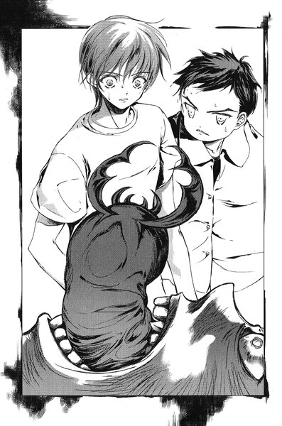
ごきん、という鈍い音とともに、佐貫の肘のすぐ下あたりが直角に垂れ下がった。
「つっっっ......」
佐貫は声にならない悲鳴を上げて、腕を押さえながらソファの脇にうずくまった。
「あなたは抵抗しないでもらえる？」
千晶は裕生を見ながら言った。
「あなたにはあまり傷をつけたくないの」
しかし、裕生はポケットから「黒曜」の入った小瓶を出していた。すでにテーブルの下でコルクの栓を外したところだった。「母親」は佐貫を見下ろしながら、もう一度高々と杖を振り上げる。裕生は立ち上がりながら下から瓶を振り、彼女の顔にその中身を飛ばした。彼女は動きを止めて、首を曲げながら片手で右目を押さえた。黒い液体が目の中に入ったらしい。肉体そのものにダメージはないようだった──カゲヌシに操られているだけで、彼女は人間だからに違いない。
しかし、裕生はその隙を見逃さなかった。うずくまっている佐貫の体を飛び越えるようにして、彼女の体を思い切り突き飛ばした。
「母親」は和室の方までごろごろと転がっていき、その間に佐貫が起き上がる。裕生は彼の体をかばいながら、玄関ホールへ通じるドアへと向かった。
６
裕生たちは玄関ホールへ出た。
一刻でも早くこの家を出なければならない。裕生は裸足のままで土間に降りると、ドアを開けようとする──カギがかかっていた。
慌ててサムターンを回そうとして、裕生はぎょっとした。針金が何重にも巻き付けられ、動かないようにしっかりと固定されていた。
（いつのまにこんな......）
リビングを出ていく千晶の後ろ姿が頭をよぎった。父親を呼びに行った時に、鍵を閉めてこんな細工を施したのだろう。
（最初から閉じこめるつもりだったんだ）
裕生は玄関ホールを見回した。ホールは一階の他の部屋だけではなく、二階への階段とも直接繋がっている。彼の右手には今出てきたリビングへ通じるドアがあり、左手にはまだ開けていない別のドアがあった。おそらくキッチンやバスルームに続いているのだろうが、玄関にこのような細工がしてある以上、外に出るための出口はすでに閉ざされているはずだ。
（二階だ）
裕生は正面の階段を見る。外に逃げ出すのは難しくなるが、一階よりは身を潜める場所はあるはずだ。彼は無事な方の佐貫の腕を取って、足音を忍ばせながら階段を上がっていった。
彼らが二階に足を踏み入れたとたん、階下でリビングのドアが開く音が聞こえた。直接二階へやってこられたらどうしようもないと思ったが、幸い他のドアを次々と開けているらしい。
ふらりと佐貫がよろけて壁に手をついた。
「大丈夫？」
「平気だ」
佐貫は苦しげに言った。
「それより、さっき西尾の携帯にはコールしたから」
裕生は少し安堵した。時間を稼いでいれば、助けがここへ来てくれるはずだ。裕生は階段から一番遠い部屋を目指した。追っ手がしらみつぶしに二人を捜しているとしたら、家の奥であるほど見つかるのは遅れるはずだった。
中腰になって二人は廊下を進んでいった。左側にはいくつかドアが並んでいるが、右側の手すりの向こうには床がなく、一階のリビングと空間が繋がっている。裕生が手すりからこっそり顔を出すと、吹き抜けを通じてリビングを見下ろすことができた。
裕生たちは一番奥のドアを開けて中へ入り、鍵を閉めた。そこはクローゼットとロフトのついたフローリングの部屋だった。まったく使われていないらしく、室内にはなにも置かれていない。
裕生はドアの反対側にある窓に飛びつく。玄関と同じように、錠のレバーには針金を巻き付けてある。しかし、外せないことはなさそうだった。
ガラスに顔をくっつけて外を見ると、窓の真下の地面はコンクリートに覆われている。外へ逃げるとしたら飛び降りるしかなさそうだった。
佐貫の方を振り返ると、彼はロフトへ上がるはしごの一段目にぐったりと腰を下ろしていた。もし窓を開けることができたとしても、怪我を負っている佐貫に二階から飛び降りることは難しいだろう。
裕生はふとロフトにかかっているはしごを見上げた。どうやら取り外しができるようだった。
「佐貫、ロフトに上がれる？」
と、裕生は言った。自分たちが上がった後で、はしごをロフトに引き上げてしまえば、たとえ見つかったとしてもそう簡単に上がってこられないはずだ。
その時、階段の方から足音が聞こえた。千晶の「母親」が上がってきたらしい。
佐貫はうなずきながら立ち上がった。顔色は真っ青で、折れた腕は紫色に腫れ上がっていた。
「......なんであいつが俺を殺さなかったのか、分かるか」
と、佐貫は言った。
「え？」
「さっきから考えてたけど、腕じゃなくて頭を殴りつけた方が簡単だったはずなんだ」
腕の痛みに耐えているのか、彼は歯を食いしばるようにしている。額には脂汗が浮かんでいた。
「とにかく、ここを上がろうよ」
と、裕生は言った。ぐずぐずしている時間はない。
「いや、ここを上がるのは俺だけだ。裕生はその窓からなんとか逃げてくれ」
「なに言ってんだよ」
怪我をした佐貫を置いていけるはずがなかった。万が一、捕まった場合、なにをされるか分からない。カゲヌシの餌は人間なのだ。
「聞けよ。あいつの目的はお前なんだ。さっき言ってたじゃないか」
佐貫は無事な方の手で、裕生の肩をつかんだ。
「もし俺が殺されてたら、お前も一人で逃げ出したかもしれない。でも、俺に怪我を負わせるだけだったから、お前は俺を連れて逃げるしかなかった。そうだろ？」
どこかの部屋のドアが開く音が聞こえた。確実に裕生たちのいる部屋に近づいてきていた。
「とにかく、お前はここにいちゃいけない。俺はどうせここに隠れるしかないけど、お前はそうじゃない。窓から外に出ろ」
佐貫はそう言って、右腕をだらりと垂らしたままロフトのはしごを上がっていった。
裕生はロフトと窓を交互に見比べる──一人で逃げ出すのは嫌だったが、佐貫の言う通りにした方がいい気がした。それに、もし千晶の目的が裕生だとしたら、二手に分かれた方が佐貫の危険も減るかもしれない。
「早く行け」
上から顔を覗かせた佐貫が裕生を急かした。
「......分かった。佐貫も気をつけて」
佐貫はロフトのはしごを片手で持ち上げようとする。裕生は下からそれを手伝った。
「そんなのいいって。早くしろよ」
と、佐貫は言った。しかし、裕生ははしごが上がるのを見届けてから、窓へと走り寄った。必死に針金をほどきながら耳を澄ませると、千晶の「母親」はまだ別の部屋を捜しているらしかった。
もう少しで針金がほどける、と思った瞬間、
「藤牧！」
窓の向こうからくぐもった声がかすかに聞こえた。裕生はぎょっとして立ちすくんだ。外を見ると、塀の向こうにある道路にみちるが立っていた。
彼女は不安そうに裕生のいる窓を見上げている。
「......しまった」
と、裕生はつぶやいた。今の声は千晶の「母親」にも聞こえたはずだ。外を見れば、みちるがどの窓を見ているのか分かってしまう。
どこかの部屋のドアが開く音が聞こえた。裕生たちのいる部屋に向かって、ばたばたと足音が近づいてくる。
（気づかれた）
「早くしろ！ 裕生！」
佐貫が叫ぶ。裕生は慌てて針金をほどきにかかった。その途端、裕生たちのいるドアのノブががちゃがちゃと動く。一瞬の沈黙の後、今度はドアがずしんと音を立てて震えた。
（体当たりしてるんだ）
外からの衝撃を受けてドアが軋んだ音を立てる。もう時間はない。裕生は手元の作葉に集中する。針金が外れるのと同時に、ドアが跳ねるように大きく開いた。
思わず振り向くと、千晶の「母親」がドアの向こうに立っていた。左右の目が違う方向を見ているが、顔だけは裕生の方に向いている。
裕生は慌てて窓を開けようと手をかけた──が、針金を取っただけで錠のレバーを下ろすのを忘れていた。
慌てて錠を下ろした時には、すでに千晶の「母親」は裕生に向かってきていた。
「うわあっ」
裕生の口が勝手に開いて、かすれた悲鳴を上げた。裕生に向かって長い両手が迫ってくる。その瞬間、彼女の頭上に金属のはしごが落ちてきた。ロフトから佐貫が落としたのだった。縦棒の部分が鈍い音を立てて頭にぶつかり、女はその場に膝をついた。
すでに窓は開いており、飛び降りる余裕も十分にある。しかし、裕生は凍りついたように立ちすくんだままだった。
「なにしてんだ！ バカ！」
佐貫がロフトから叫んだ。しかし、その声は裕生の耳にほとんど入っていなかった。
動けないのは恐怖のためではない。彼は床に落ちたはしごを見ていた。
（佐貫がはしごを落とした）
裕生を助けるために佐貫ははしごを手放してしまった。はしごを使われたら、簡単にロフトへ上がられてしまう。
（ぼくが逃げたら、佐貫が危ない）
千晶の「母親」は頭を振りながら立ち上がる。そして、不審げにはしごの落ちてきたロフトを振り返った。
（戦うしかない）
裕生はごくりと唾を呑みこんだ。彼のポケットには「黒曜」が入っている。さっきいくらか使ってしまったが、まだ半分は残っているはずだ。しかし、このカゲヌシ用の「毒」は、直接相手に使用しなければ効果がなかった。さっきのように「リグル」が顔を出してくれれば──。
（あなたは抵抗しないでもらえる？）
千晶の言葉がふと蘇った。
（......ひょっとして）
裕生はポケットから黒曜を取り出した。
佐貫は裕生がなにをしているのかよく見ていなかった。
自分を見上げている千晶の「母親」から目を離すことができなくなっていた。彼女は明らかに怒りの表情を浮かべている。あの「父親」とは違って、彼女を操っているあの虫はさほど知能が高いわけではないようだ。関心の向いた方が彼女の「今の獲物」ということらしかった。
今、彼女の関心は裕生ではなく佐貫の方にあった。
（......ヤバい）
殺される、と佐貫は思った。
その時、裕生がなにかを「母親」めがけて投げつけた。それは彼女の肩にこつんと跳ね返って床の上に落ちた。
空になった「黒曜」の瓶だった。彼女はぐるりと首を回して、窓際にいる裕生を見る。再び彼女の関心は裕生に戻ったらしい──裕生の方へじりじりと迫っていった。
（あのバカ。なんで逃げねえんだよ）
ためらっている余裕はなかった。佐貫はロフトから身を乗り出すと、覚悟を決めて飛び降りた。床まではせいぜい二メートルほどで、柔らかく膝を使って衝撃を殺したつもりだったが、着地した瞬間に電撃のような激痛が脳天を貫いた。一瞬、視界が暗転する。
はっと我に返った時には女はすでに裕生を捕らえており、両耳をふさぐように頭を抱えこんでいた。彼女の口が大きく開き、赤い幼虫が巨大な舌のように裕生の眼前に迫っていた。裕生は硬直したように立ちすくんでいる。
佐貫はあっと声を上げそうになった。
（裕生の体を乗っ取るつもりなんだ）
だから傷をつけたくなかったのだろう。
佐貫は腕が折れていることも忘れて、夢中で立ち上がる。女に体当たりするつもりだった。「リグル」の牙の下から二本の触覚が伸びて、裕生の唇の中に差しこまれる。耐えきれなくなったように彼の口が開いた。
間に合わない、と思った瞬間、裕生の口から黒い液体が吐き出された。
（......え？）
もはや接するばかりになっていた赤のリグルは、その液体をまともにかぶった。途端に幼虫の表皮から煙が立ちのぼる。彼女は裕生から手を放して激しく身もだえした。
（『黒曜』だ）
あらかじめ口に含んでおいたに違いない。口から赤のリグルをぶら下げたまま、女はよろよろと後ずさりをする。体のあちこちを壁にぶつけながら、廊下にまで出ていってしまった。
裕生は苦い顔をしながらさかんに口元をぬぐっている。
「大丈夫かよ、あんなの口に入れて」
「知らないけど、他に方法がなくて」
突然、女の体がくるりと一回転するように、手すりの向こうへ消えた。吹き抜けから一階のリビングへ落ちたのだった。
「あっ」
裕生と佐貫は同時に声を上げた。部屋を出て、おそるおそる手すりの下を覗きこむ──ちょうど落ちた先にリビングテーブルがあったらしく、女はテーブルの残骸の中に横たわっていた。周囲には割れたガラスの天板が四散している。
「父親」は相変わらずぐったりとソファに身を沈めたままだった。彼もまた意識を失っているらしい。
動いているのは黒い服を着た銀髪の少女だけだった。彼女は母親の傍らにうずくまって、赤い幼虫を口から引きずり出しているところだった。もう片方の手には、別の青い幼虫が握りしめられている。
両手の中で、二匹の幼虫──リグルは激しく動いていた。
「もうこの二人は用なしね」
千晶はそうつぶやくと、杖なしで不器用に立ち上がった。
そして、二階にいる裕生たちを見上げる。
「レインメイカーに会ったことがあるわよね？」
突然、その名前が出てきたことに裕生は驚いた。レインメイカーを知っているカゲヌシに会うのはこれが初めてだった。
「わたしたちはレインメイカーを手に入れたいの」
「それがぼくになんの関係があるんだよ？」
千晶は答えなかった──ふと、その顔に冷ややかな笑みが浮かんだ。
「今日はここまでにしましょう」
なに言ってんだ、と佐貫が言い返そうとした時、彼女はまるで絶叫するように大きく口を開いた。そして、両手にぶら下げたリグルを次々と飲みこんでいった。白い喉が波打つように大きく二度ふくらんだ。
「また、会いましょう」
彼女は杖を拾い上げて、その場から立ち去った。
第二章 「再会」
１
父親が見つかったという話を、葉は裕生から聞いた。
ちょうどそろそろ夕食の準備をしようと思っていたところで、手帳にしっかりとメニューを書いて、足りないものを確認しようと冷蔵庫を開けた瞬間に裕生が帰ってきたのだった。
父の雛咲清史は数日前から加賀見に戻ってきていた。「リグル」というカゲヌシの契約者の「船瀬千晶」と一緒にいて、彼女の父親を名乗っていた。どうやら清史は失踪している間、カゲヌシの能力で操られていたらしい。別の女性も千晶の「母親」として一緒に住んでいた。裕生たちは千晶を逃がしてしまったものの、清史たちを解放することができた──。
話を聞いている間、葉はほとんど無言だった。何度か裕生は「大丈夫？」と心配そうに問いかけてきた。驚きのあまり口がきけなくなっていると思ったらしい。
葉は話の内容そのものには驚いていなかった。終始冷静に受けとめていた。最後まで聞き終えてから、葉は学校で船瀬千晶と出会った話をした。やはり彼女は葉を「黒の彼方」の契約者だと知っていたに違いない。あの奇妙な態度もそれなら納得が行った。
一通り話し終えた後で、裕生は葉に謝った。葉はそのことに一番驚いた。どうして謝るんですか、と尋ねると、清史が帰ってきたことを話さなかったし、話さないまま会いに行ったからだと説明した。
「本当に葉のお父さんかどうか分からなかったし、はっきりしてからの方がいいと思ったんだよ」
葉にはなぜ裕生が謝るのか理解できなかった。別の名前を名乗っていたのなら、本人かどうかまず確認するのが当たり前だと思う。
とにかく病院に行こう、と裕生は言った。
葉はうなずきながら、あまりにも冷静な自分に驚いていた。四年間も待っていた両親の一人が見つかったというのに、なんの感情も湧いてこない。感情が死んでしまったようだった。
病院に行くまでに、彼女が口にした質問は一つだけだった。
「見つかったのは、お父さんだけなんですか」
ベッドに横たわった雛咲清史は、ぼんやりした目つきで天井を見ていた。
「この四年間、兄さんはなにしてたの」
喜嶋ツネコが言った。彼女はベッドの脇の椅子に腰かけている。清史がいるのは外科の個人病室で、今、部屋の中にはツネコと清史の二人だけだった。
「......夢を見たんだ」
と、清史は言った。
「夢って？」
「悪い夢だよ」
「は？」
「島にいる夢だ」
独り言のようにつぶやいて、清史は窓の外を見た。
（はっきり答えなさいよ）
一瞬、ツネコは兄の胸ぐらをつかんでぐらぐら揺さぶりたい衝動にかられ──どうにかそれをこらえた。患者に刺激を与えないようにと医師から言われていなければ、本当にそうしていたかもしれない。
ツネコは清史の実の妹だが、十歳以上年が離れている。はっきりものを言う性格で、物静かな兄とはまるで性格が違っている。今は新宿で亡き夫の遺したバーを経営している。清史たちが行方不明になって以来、葉の後見人となっていた。
「志津さんはどうしたのよ」
志津は清史の妻の名前だった。やはり同じ日に姿を消している。
清史は答えなかった。相変わらず感情のこもらない目で窓の外を眺めていた。医師の話では失踪中の記憶がすっぽりと抜け落ちているらしい。
（こんな状態で葉に会わせて大丈夫かしら）
その葉も少しずつ記憶を失っていきつつある。同じ町に住む葉ではなく、離れた場所に住んでいるツネコが清史の身分の確認に呼ばれたのも、葉の記憶障害が進んでいるためだった。
（親子で同じ病気......？）
と、ツネコは心の中でつぶやいた。
（遺伝的なものかしら）
その時、病室のドアが静かに開いた。
現れたのは裕生だった。その後ろに小柄な人物が隠れるように立っている。
「連れてきました......今、大丈夫ですか？」
と、裕生が言った。ツネコは清史の方を振り向いた。
「兄さん、葉が来たわよ」
「あ、あの......二人きりにしちゃって大丈夫でしょうか」
と、裕生は言った。ツネコは無言でタバコに火を点ける。
喫煙室にいるのは裕生とツネコだけだった。葉に座らせた後、ツネコは裕生を引きずるように外へ出た。そして、廊下の端にある喫煙室までやってきたのだった。
「一応、親子の対面だからね。どっちも普通の状態じゃないけど」
今日のツネコはジーンズにチェックのシャツというラフな服装である。和服を着ていない彼女を見るのはこれが初めてだった。ツネコはきりっとした顔立ちの美人なのだが、二人でいると裕生はどうしても不安になる。ヘビににらまれたカエルの心境だった。
二人きりで大丈夫なのか心配なのは、自分の方かもしれないと裕生は思った。
「葉、父親が見つかったって聞いて、なにか言ってた？」
「見つかったのはお父さんだけですかって」
思いに沈むようにツネコの視線が遠くなった。彼女の指先でタバコがくすぶっている。長い沈黙の後で、ツネコは口を開いた。
「......仲のいい夫婦に見えたんだけどね」
「え？」
思わず裕生は聞き返した。
「前に話したでしょ？ 兄さんたちがいなくなった頃、なにかあったのかもしれないって。葉はなにか知ってるんじゃないかって」
裕生はうなずいた。葉がなにかを隠しているとまでは思わないが、それについて話すのを避けているような気はする。
「突然、いなくなったんだもの。犯罪に巻きこまれたとかじゃなければ、夫婦の間になにかあったって考えるのが普通よね」
犯罪じゃなければ、という言葉に裕生はどきりとした。ある意味で清史が巻きこまれたのは、犯罪よりも難しい問題かもしれない。しかも、清史の娘である葉は今もそこに巻きこまれていた。
「葉の具合、最近はどうなの」
ツネコは話題を変えるように言った。
「今のところは生活に支障ないと思います」
葉がおかしくなってから、ツネコと裕生の父は頻繁に連絡を取り合っている。彼女が様子を見に来る回数も増えていた。
「迷惑かけるわね」
「いいえ。そんなことないです」
裕生がなにかしているわけではない。一番辛いのは葉のはずだ。
「本当はあたしが一緒に住んで面倒見たいけど、葉は君のそばがいいって言うに決まってるから」
「......」
「でも、あたしも考えた方がいいかも。兄さんが元気になってくれたら別にいいけど、そうじゃなかったら二人もお宅に面倒見てもらうわけにいかないもの」
常識的に考えればそうなのかもしれない。しかし、「黒の彼方」を呼び出した葉を目覚めさせることができるのは裕生だけだった。今の葉と裕生は絶対に離れるわけにはいかない。
（でも、もし「黒の彼方」がいなくなったら）
無理に裕生と暮らす必要はなくなる。
そう思ったとたん、裕生は自分でも驚くほどうろたえた。かつて、裕生は葉を「一人にしない」と誓った──「黒の彼方」のことがあったから、そう言ったわけではない。彼女と一緒にいるというのは裕生の意志だった。現に彼がそう言った時、葉本人は加賀見を出ていくつもりでいた。
裕生ははっと息を呑んだ。
（ぼくが葉と一緒にいたいってことなのか？）
今までまったく意識していなかった気持ちだった。
「......ほんと、君には感謝してるわ。これでもね」
ツネコの言葉に裕生は我に返った。彼女は少し顔をそむけて紫煙を吐く。
「いえ、そんな。別にぼくは......」
裕生は言いよどんだ。自分の意志でしていることに、感謝される道理はない。
「で、手は出してないわよね？」
いきなりツネコの声に殺気がこもった。裕生はぎょっとして激しく首を振った。
「そ、そんなことしてません！」
「そうよね。前に手紙に書いたと思うけど、万が一のことがあったら......」
突然、タバコをはさんでいるツネコの指に力がこもった。火の点いたタバコが、ぐしゃり、と真ん中あたりで直角に折れ曲がった。
「こうなるわよ？」
それからツネコは灰皿にタバコを持っていくと、根本まですりつぶすように念入りに押しつけた。なにをですか、と尋ねる勇気はなかった。
「......は、はい」
裕生は背筋に嫌な汗をかいていた。
「よ、葉のお父さん、具合はどうなんですか？」
裕生は慌てて話題を変えた。
「体の方は大丈夫みたい。言ってることはよく分からないけど」
と、ツネコは言った。
「赤の他人を家族だと思ってたってどういうことかしら？どこでなにしてたのやら」
「......」
「一緒に病院に運ばれてきた女も何者だか分からないし」
カゲヌシに関すること以外は、なにが起こったのか警察にきちんと説明した。千晶の「母親」役の女性もこの病院に収容されている。何ヶ所か骨折したものの、命に別状はないという話だった。
「さっき兄さんにこの四年間のことを聞いたらね、悪い夢を見てた、なんて言うのよ」
「え......」
聞き覚えのある言葉だった。確か皇輝山天明も、逮捕される前に同じことを言っていたはずだ。
「どんな夢ですか？」
「島にいた夢だって」
裕生は自分の見る夢を思い浮かべる──黒い海の向こうにある島。みな同じ夢を見ているのではないのだろうか。
（どういうことなんだろう）
その時、喫煙室のドアのガラス越しに、誰か覗いていることに気づいた。
立っているのはみちるだった。ドアを開けながら、みちるは裕生に話しかけてきた。
「藤牧、ここでなにして......あ、こんにちは」
みちるはツネコに気づいて、丁寧にお辞儀した。ツネコも戸惑いながら軽く頭を下げる。そういえば、ツネコとみちるが初対面だったことを裕生は思い出した。
「えっと、喜嶋ツネコさん。葉のお父さんの妹さん」
「初めまして。西尾みちるです」
「喜嶋です」
妙に硬い声でツネコは言った。
「今、葉とお父さんが二人で話してるんだよ」
「......そう」
みちるの声は心なしか沈んでいる。表情もどことなく暗かった。
「どうかしたの？」
と、裕生は言った。なにか裕生に話をしに来たような気がした。一瞬、みちるは口を開きかけたが、ツネコを意識したらしい。首を横に振った。
「ううん。別に......ちょっと様子見に来ただけ。まだあたし佐貫の病室にいるから、時間があったら来て」
「うん。分かった」
骨折した佐貫も外科病棟にいる。予想よりも重傷で、数日中に手術が必要だという話だった。
「じゃ、後でね」
みちるは少し肩を落として出ていった。後でなにがあったのかちゃんと話を聞こう、と思っていると、
「あの子は？」
と、ツネコが尋ねてきた。
「ぼくのクラスの友達で、今日も一緒に行ってくれたんです」
「ほう」
ツネコは低い声で言った。
「きれいな子ね」
「え？ あ、そうですね」
まあ、客観的に言ってその通りだと思う──が、次の瞬間、ツネコは裕生の胸倉をつかんでぐいと引き寄せた。裕生の全身が恐怖で凍りついた。
「なに鼻の下伸ばしてんの？」
「は？」
「まさかうちの姪っ子とあの子と二股かけてるんじゃないでしょうね！」
むちゃくちゃだ、と裕生は思った。「葉に手を出すな」という注意とまるっきり矛盾している。しかし、とてもそれを指摘できる雰囲気ではない。
「ち、違いますよ！」
裕生はぶんぶん首を振って必死に否定した。
病室に二人だけになってから、しばらくの間清史も葉も一言も口を利かなかった。
葉はベッドの脇の椅子に腰かけたままで、清史は窓の外をぼんやりと見ていた。傾きかけた太陽が病室の白い壁をオレンジ色に染めている。
父の顔を見ていると、両親があの団地にいた頃のことを思い出す。もともと父も母も外へ出かけるのを好まず、休日も部屋の中で静かに過ごしていることが多かった。父は自分の部屋で本を読んでいて、母は居間でクラシック音楽を小さな音で聴いていた。
母が好きなのはオペラのアリアだった。葉には音楽のことは分からなかったが、歌声に耳を傾けていると時間がすぐに過ぎていった。
静かで満ち足りたあの時間のことは、今でもはっきりと思い出すことができる。
（どうしてお母さんは一緒じゃないんだろう）
と、葉は思った──ただし、それは今が初めてではない。あの裕生の手術の日に父と話した時、いや、その少し前から何度かそう思ったことがあった。
両親は休日になっても、あまり一緒に過ごさないようになっていた。用事があると言って出ていくのは母の方で、たいていは夜になるまで帰らなかった。三人で過ごしている時は、両親の様子に特に変わったところもない。
ただ、夜中にいつまでも二人でひそひそと話しているのを、ふすま越しに聞いたことがある。
そのことを葉は誰にも言ったことがない。なんとなく口に出してはいけないことのような気がしていた。いつか両親が帰ってきたら、その時には尋ねようと思っていた。
未だに葉は父が帰ってきたという実感が湧かない。嬉しいことのはずなのに、母がいないことがその喜びの邪魔をする。父が帰る時は母も一緒だと固く信じてきたためだろう。頭では分かっているのに、どうしても目の前にいるのが父ではない別の誰かのような気がしてしまうのだった。
どれぐらい時間が経ったのか分からなくなった頃、ふと清史が葉に顔を向けた。
「葉は本当に一人でずっと帰りを待っていたんだな」
と、清史が言った。
「ツネコからさっき聞いた。つい最近まで、ずっと団地に一人で住んでいたって」
葉はこくりとうなずいた。
「あの日、わたしがそうしろと言ったからか？」
葉はうつむいた。自分の気持ちをうまく言葉にできなかった。
もう信じられないほど昔の出来事のような気がする。最初は父の言葉を守っているつもりだったとしても、それだけで何年もあの部屋で待てるわけではない。
「この四年に起こったことを、わたしはよく憶えていない。どうして家を出ることになったのか、どこでなにをしていたのかも。ただ、わたしはずっと帰りたいと願っていた。もう一度お前に会いたいと願っていた。お前に会って......」
ふと、清史の言葉が途切れた。沈黙が葉たちを包む。
「本当にお前は大きくなった。わたしの記憶の中では、お前はまだほんの子供だった」
再び口を開いた時には、別の話になっていた。
「この四年間、色々あっただろうな」
葉が真っ先に思い浮かべたのは、「黒の彼方」のことだった。しかし、カゲヌシのことは伏せておくように裕生から言われている。カゲヌシに操られていたとはいえ、どこまで本人にその自覚があったのかは未知数だし、仮になにか知っていたとしても、「黒の彼方」にそれを知られてしまうのは危険だった。後日、裕生たちが確認することになっている。
「なにかあった時、お前を助けてくれた人はいたか？」
「裕生ちゃん」
と、葉は即答した。藤牧先輩、と言わなかったことに少し罪悪感を覚えたが、どうせそう言っても父には分からない。
「それにツネコおばさんや、他にも......」
「......そうか」
と、言いながら、清史はゆっくりと目を閉じた。
「世話になった人たちに、お礼をしなければならないな......」
清史の言葉が不明瞭になっている。どうやら眠りに落ちかけているようだった。
「お父さん」
と、葉は呼びかけた。口に出してから、それが四年ぶりに口にした言葉だと気づいた。
「......なんだ？」
「お母さんは？」
しばらく待ったが、父の返事はなかった。
すでに清史は静かに寝息を立てていた。
２
「あたしってさ」
と、みちるが言った。
「ああ」
と、佐貫は相槌を打った。彼は少し苛々しながら病室のベッドに横たわっている。折れた右腕はギプスで固められていた。苛立っているのは重いギプスの違和感のせいもあるのだが、一番の原因はみちるだった。
みちるは隣の空きベッドに腰かけて、憂い顔で自分の膝のあたりを見つめている。
「......話の続きは？」
沈黙にこらえきれなくなって佐貫が言った。みちるははっと我に返る。
「あ、ごめん......あたしってさ」
「ああ」
佐貫は相槌を打つ──みちるは再び黙ってしまった。
さっきからその繰り返しである。もう何回「あたしってさ」を聞いたのか憶えていなかった。
（なんなんだよ、一体）
佐貫は内心つぶやいた。こんな風にみちるが佐貫に話をためらうことは滅多にない。なんでも話せる間柄だった。
そろそろ佐貫は心配になり始めていた──これだけ話すのをためらうということは、かなり大変なことなのではないだろうか、と思っていると、
「......藤牧たちの役に立ってるのかな」
と、ようやくみちるが言った。
「はあ？」
思わず佐貫は聞き返す。みちるがなにを言っているのか理解するのに時間がかかった。
「なに言ってんだお前」
「ほら、佐貫とはよく性格似てるって言われるけど、あたしは佐貫みたいに変なこと調べるのが得意じゃないし、藤牧は『黒の彼方』が出た後で雛咲さんを呼び戻す役目があるでしょ？考えたらあたしはなにもないんだよね」
そんなに悩むようなことじゃねえだろ、と佐貫は言いかけたが、彼女の沈んだ面持ちを見て口をつぐんだ。彼女にとっては悩むようなことらしい。
「今日だって万が一ってことであたしが外に残ったけど、佐貫は怪我しちゃったし。藤牧もあたしが声かけたせいで、もう少しで危ないところだったし。それに結局助けも呼べなかったし......」
昼間、みちるは佐貫の緊急コールを受けて、すぐに葉のいる団地へ電話をかけた。しかし、たまたま葉は近所へ買い物に出ていて留守だった。仕方なくあの家へ様子を見に近づいていったところに、二階の窓を開けようとしている裕生の姿が見えたのだという。
「でも、それってお前のせいじゃなくて、俺のせいもあるんじゃないのか？なんかあったら雛咲さん呼んでくれって言ったのは俺だし。それにあの状況で窓んとこに仲間がいたら、普通声かけちゃうだろ」
みちるはそれでも気が晴れないようだった。そもそも、こんなことをみちるが気にしているのは、あの家に入る時に彼女を外したことに端を発している気がする。確かに無神経な言い方をしてしまったかもしれない、と佐貫は思った。
ここに温厚な裕生がいれば、うまくフォローしてくれるだろうが、いない人間に期待しても仕方がなかった。佐貫は咳払いをした。
「あー、でも、西尾にはなんていうかガッツあるよな」
「......」
「昼間は変な言い方して悪かったけど、お前みたいに友達のために体張れる奴ってなかなかいないと思うぜ。裕生だって絶対感謝してるって」
「......そうかな」
「そうだろ。しょっちゅうそう言ってるし」
「でも、役に立ってないことには変わりないかも。やる気ばっかりで空回りってことだよね、それって」
みちるは深いため息をついた──フォロー失敗、と佐貫は思った。
それにしても、どうしてここまで自信を失っているのか理解できない。ただの考えすぎとしか思えなかった。
「あの......」
聞き覚えのある女の子の声が聞こえた。佐貫とみちるは同時に廊下の方を見る。病室のドアの前に葉が立っていた。
「どうしたの、雛咲さん」
「......藤牧先輩、来てますか？」
「来てないけど、さっき喫煙室で見たよ」
「今、見に行ったけどいないんです」
佐貫とみちるは顔を見合わせる。あのリグルの契約者・船瀬千晶が佐貫の頭をよぎった。彼女はなぜか裕生を狙っている。カゲヌシの契約者と知られた今、こんなに人気の多い場所に現れるとは思えなかったが──。
「あたしも捜す！」
みちるはベッドから立ち上がった。
「行こう、雛咲さん」
みちるは早足で病室から飛び出していった。葉も戸惑いながらその後を追う。
（なんであいつ、裕生のことになるとあんなに取り乱すんだろ？）
二人が出ていった後、佐貫はベッドの上で考えこんだ。
裕生に頼まれるとイヤとは言えなかったり、どうでもいいことでうじうじ悩んだり、身の危険も省みずに無茶なことをしてみたり──まるで恋する女の子のようである。
佐貫の顔ににやにや笑いが浮かんだ。自分の想像が可笑しかったのだ。
（西尾が裕生を好きってありえねえよな。だって──）
ふと、彼は絶句した。「だって」の後がどうしても続かない。考えれば考えるほど、他に説明のしようがなかった。
「......嘘だろ、おい」
と、佐貫はつぶやいた。
「悪ィな、タヌキんとこに見舞いに行くとこだったんだろ？」
「佐貫」
「......ま、細けえこと気にすんな。佐貫の方はいいのか？」
裕生はうなずいた。佐貫の様子を見に行く途中、廊下で雄一に「話がある」と呼び止められたのだった。病院に清史がかつぎこまれてすぐに雄一の携帯にかけたのだが、電源を切っているらしく繋がらなかった。
さっき伝言メッセージを聞いて、病院へやってきたのだという。
「別に急ぐわけじゃないし、後で行けばいいから」
裕生と雄一は病院の屋上で、紙コップのコーヒーを手に話をしている。屋上は金網に囲まれたこぢんまりとした空間で、木のベンチや花の植えられたプランターがきれいに並べられていた。昼間なら入院患者の憩いの場所になるのだろうが、すっかり日が暮れた今は他に誰もいない。
「いや、驚いたぜ。その船瀬って家にお前らが乗りこんでくとは思ってなかったからよ」
咎めているわけではないようだったが、裕生は多少気がひけた。俺がどうにかするから任せておけ、と雄一に言われた時には、分かった、と答えていた。
「ごめん。ぼくも気になったから、住所調べて会いに行っちゃったんだよ」
「そうか」
兄はそのことにはあまり関心がなさそうだった。「話したいこと」というのは別のことなのかもしれない。
「任せろって言ってたけど、兄さんはどうするつもりだったの？」
「俺か？ そりゃお前......」
雄一はごくりとコーヒーを一口飲んだ。
「葉を連れてくに決まってるだろ」
「ええっ！」
裕生はぞっとした。あの家に葉を連れていったとしたら、カゲヌシ同士の戦いになっていたかもしれない。しかも、葉の意識を取り戻せる裕生もいない状態である。
「なに驚いてんだ？ 俺が聞いても葉の親父さんはシラ切ったじゃねーか。だったら、実の娘に会わせんのが一番手っ取り早いだろ？俺の言ってることなんか間違ってるか？」
「......」
強引な気もするが、確かに間違いではないだろう──このことにカゲヌシが全く関係していないのであれば。兄が葉を連れていくよりも早く、自分たちがあの家に乗りこんでいったのは幸運だったかもしれないと裕生は思った。
「しかし、お前らも災難だったよな。いきなり襲いかかってくるような、頭のおかしい奴がいるとは普通思わねーもんな。まあ、俺がその場にいりゃボコって解決してたと思うけどよ」
（命がいくつあっても足りないよ、それ）
裕生は心の中で一人ごちた。今まで雄一には何度か事情を打ち明けようと思ってきたのだが、そのたびにためらってしまうのはこの強引かつ一本気な性格なためだった。
「ボコるって......向こうはこっちを殺そうとしてたんだよ。佐貫だってあんな大怪我したんだし」
「上等じゃねえか。返り討ちにしてやんよ」
雄一は凄惨な笑みを浮かべる。
「危ないよそれじゃ。向こうが兄さんより強かったらどうすんの？」
「まあ、タイマンならだいたい大丈夫だろ。飛び道具使われたら話は別だけだとな」
裕生はため息をついた。こんな物騒な考えの人がカゲヌシをことを知ったら、なにを始めるか分かったものではない。
（やっぱり、兄さんには話せないよな......）
裕生が結論を下したところで、
「それで話なんだけどな」
と、雄一が切り出した。
「なに？」
裕生はそう言いながら、手に持っていた紙コップを口に運ぼうとする。その瞬間、雄一が言った。
「......カゲヌシのことだ」
もう少しでコップの中身を全部吹き飛ばすところだった。雄一は目を細めて、動揺する裕生の様子をじっと観察している。
「な、なんのこと？」
「カゲヌシは実在するんじゃねーのか？ お前はそれを知ってんだろ？」
うすうす感付いているとは思っていたが、こうもストレートに切り出されるとは思ってもみなかった。
「そ、そんなことあるわけないよ」
「そうか？ でも、レインメイカーは実在するだろ？」
レインメイカー、という名前が出てきたことに裕生は心底驚いた。
「......兄さんもレインメイカーと会ったの？」
雄一の口元にかすかな笑みが浮かぶ。裕生は自分がうっかりと秘密を洩らしてしまったことに気づいた。
「やっぱりお前は会ったんだな。場所はあそこの幽霊病院か？どういうヤツなんだ？」
（......幽霊病院？）
そこにレインメイカーがいる、という話は裕生も初耳だった。彼は必死に頭をひねった。雄一はカゲヌシについて様々な噂を集めている。「レインメイカー」という名前もその過程でどこかから得たものだろう。そして、裕生から聞き出そうとしているということは、詳しい事情は特に知らないということになる。
（やっぱり、話した方がいいのかな）
この上ない心強い味方になってくれることは間違いないのだが。
「一つ聞きたいんだけど」
と、裕生は言った。
「もしカゲヌシっていう怪物がいたとしたら、兄さんはどうするの？」
「んなこと決まってんじゃネーか」
雄一はぐっと右拳を裕生に突き出すと、指を一本ずつ立てながら言った。
「探す・見つける・ボコる。それで倒すと」
「......素手で？」
「ま、基本的にはな」
雄一は胸を張った。
「倒れなかったら？」
おそるおそる裕生は聞き返す。雄一はこともなげにまた指を立てて言った。
「そうしたらまたボコる・ボコる・ボコる......ん、どうかしたのか？」
裕生はめまいを起こしそうになった。多分、この人は本気でやるだろう。そして間違いなく真っ先に死ぬ。それだけは見たくなかった。
「......やっぱり、兄さんには話せない」
沈黙。裕生はぎゅっと目を閉じた。怒鳴られるか殴られるか、どちらにせよ怒りを買うだろうと思ったが、
「ま、そんなとこだろうな」
と、あっさり言った。
「え......？」
「お前と俺じゃやり方が違うしな。まあ、ダメもとで聞いてみただけだ。でも、俺は俺で勝手に動くからな。それはやめろって言われてもやめねえ。で、俺が必要になったらいつでも言え。裕生もそうだし、そこで聞いてるお前らもそうだぜ」
雄一は病院の建物への入り口を振り返る。いつのまにか、ドアの陰からみちると葉が顔を出していた。二人はおずおずと裕生たちの方へ歩いてくる。
「......どうしたの？」
と、裕生は尋ねる。
「どうしたのって、藤牧がいなくなったから心配して捜してたの」
みちるはむすっとした顔で言った。
「あー、悪ィ。俺が借りてたんだ」
雄一はそう言いながら、じっと葉を見ていた。葉は居心地悪そうに視線を逸らす。
葉が秘密を抱えていることも、当然雄一は感付いているに違いない。
「じゃ、俺は行くからな」
と言って、雄一はドアの方へ歩いていった。
裕生たちは無言でその背中を見送った。
（ごめん、兄さん）
と、裕生は心の中で謝った。
３
みちるが玄関のドアを開けると、温めたバターの香りがキッチンからふわりと漂ってきた。母の由紀恵が夕食の準備をしているらしい。みちるはまっすぐにキッチンへ向かった。
由紀恵はレンジの前で忙しそうに鍋をかき回している。並んでいる材料を見る限りでは、作っているのはホワイトソースのようだった。料理に熱中していて、みちるがキッチンの入り口に立っていることにまったく気づいていない。
「......ただいま」
由紀恵は飛び上がって、木べらを持ったままくるりと振り返る。娘の姿にほっと安心したように肩の力を抜いた。
「もう......みちるちゃんだったの。いつ帰ってきたの？」
「今だけど」
「あんまりびっくりさせないでちょうだい。お母さん、泥棒が入ってきたのかと思っちゃったわ......」
「泥棒は『ただいま』なんて言わないよ」
みちるが呆れて言うと、由紀恵は感心したようにうなずいた。
「......それもそうねえ」
由紀恵は昔からおっとりした性格で、いくつになってもお嬢さん気質が抜けない。みちるとは正反対の性格である。
「第一、泥棒が心配だったら鍵ぐらい閉めとけばいいでしょ。お父さんもあたしも鍵持ってるんだからさ」
「そうねえ......じゃあ、二階行く前に閉めといてね」
由紀恵はそう言って、料理の続きを始めた。
「今日の晩ご飯は？」
「お母さんの大好きなマカロニグラタンよ」
嬉しそうに由紀恵は答えた。
「......自分の好物なんだ」
微妙に納得のいかない答えだったが、みちるも嫌いなメニューではない。というより、みちるには食べ物の好き嫌いはほとんどない。なんでも美味しく食べる主義だった。
「お父さんは？」
「遅くなるって言ってたから、二人で先に済ませちゃいましょう」
今の西尾家には両親とみちるの三人が住んでいる。姉の夕紀は都心の女子大に進学して、アパートで一人暮らしをしていた。
「あたしも手伝おうか？」
「いいわよ、別に。それより、ご飯の前にお風呂入っちゃったら？」
と、由紀恵は言った。
「うん。そうしようかな」
みちるはうなずいた。
みちるは風呂にあまり時間をかけない。姉の夕紀などは一時間近くもバスルームにこもっていたものだが、みちるには中でなにをしているのか見当もつかなかった。
まず髪を洗ってゴムでしばり、いつもの順番でてきぱきと体を洗っていく。昔から体を動かすのが好きだったせいか、すらりと引き締まったスタイルだった。手足が長いのは気に入っていたが、本人としてはもう少し胸があってもいいと思っていた。
シャワーで石けんの泡を流してから、バスタブに勢いよく体を沈めた。
「......はあ」
と、思わず息が洩れる──今日は長い一日だった。明日の日曜日、裕生とまた病院に行くことになっている。佐貫を見舞って、葉の父親から話を聞くつもりだった。
佐貫は何日か入院するらしい。しばらくは裕生と二人だけで行動することになりそうだった。
「藤牧と二人だけ......」
いつのまにか声に出していたことに気づいて、みちるははっと我に返った。
そのことを思うと、なんとなく気が重かった。
先月一緒に入院してから、みちるは裕生と二人っきりになるのを避けるようになった。二人でいると、まるで空気が薄くなったように息苦しくなる。
一緒にいる時も少し距離を置くように心がけているのだが、そのわりには気が付くと目で追ってしまう。藤牧のことを考えないようにしよう、と考える時間が増えていた。
（あたし、どうしたんだろう）
たまに心の中でそうつぶやくのだが、自分がどういう気持ちになりかけているか、分からないほど幼くはなれなかった。今のみちるは考えることから逃げ回っているのだ。
（怖いんだ、あたし）
バスタブの中で膝を立てて、みちるはその上に顎を乗せる。
考えたくないことはもう一つある──最近、みちるは裕生と葉が一緒にいるところをなるべく見ないようにしていた。裕生を信頼しきっている葉の瞳を見ていると心がざわついた。
今の裕生は、「黒の彼方」から葉を解放することを一番に考えている。だから葉といつも一緒にいるし、一緒にいる相手と親密になるのは当たり前だ。しかし、もし葉を解放できたとしたら、以前のような生活が戻ってくる。今のような葉との親密さが続くとは限らなかった。
その時は葉ではない別の誰かと、裕生が付き合う日が来るかもしれない。
例えば自分と──。
「やめたっ！」
みちるは自分でも驚くほど大きな声を上げた。いつのまにかバスタブの中で立ち上がりかけている。一瞬、頭に浮かんだ考えを、細かくちぎって灰になるまで燃やして深い穴に埋めてしまいたかった。
ため息をつきながら、みちるは再びバスタブに体を沈める。気分を落ち着かせるためにも、普段よりも少しゆっくり風呂に入っていくつもりだった。
突然、彼女の周囲が暗闇に呑まれた。
一瞬、驚いて声を洩らしそうになったが、すぐに家中の電気が消えているだけだと気が付いた。多分、ブレーカーが落ちたのだと思う。由紀恵が電化製品を同時に動かしたに違いない。
みちるは真っ暗なバスルームで膝を抱えながら、再び明かりがともるのを待った──しかし、いくら待ってもなにも起こらなかった。
胸の奥に小さな染みのような不安が芽生えた。
「お母さん！」
と、みちるは叫んだ。
「ブレーカー落ちたよ！」
返事はなかった。バスルームの外はしんと静まり返っていた。
「お母さん！」
みちるはもう一度叫ぶ。それでもなんの言葉も、なんの物音も返ってこなかった。
「......まったく、なにしてるんだろ」
みちるは自分を奮い立たせるように、勢いよく立ち上がった。手探りでバスタブの縁をつかんで、ゆっくりと足を濡れたタイルに下ろす。自分の家の中のはずなのに、まるで知らない建物の中に取り残されたような気分だった。
彼女はバスルームの外へ出る。洗面室の窓からかすかに外の光が射しこんできている。みちるが収納ケースからバスタオルを引っ張り出そうとした時、視界の端で白い人影がすっと動いた。
「ひあっ」
思わず口から悲鳴が洩れる──おそるおそる肩越しに振り向くと、そこには洗面台の大きな鏡がある。縮こまるように胸を隠している自分の白い体が、ぼんやりと映っているだけだった。
（なんだ......）
みちるはほっと息をつく。少し気分が落ち着いてきた。
（きっとブレーカーがどこにあるか、お母さん見つけられないんだ）
声をかけても返事がなく、家中から物音ひとつ聞こえない理由は考えないことにした。
彼女はほとんど体を拭かずに、バスタオルを胸の上から巻き付ける。服を着ようか少し迷ったが、とにかく明かりを元に戻すのが先だ。片手でバスタオルの端を押さえながら、ほとんど裸に近い格好で廊下に出た。この家の配電盤はキッチンにある。
キッチンの方へ一歩踏み出した途端、濡れたふくらはぎのあたりをそわりと風が撫でていった。みちるははっと背後を振り返る。
玄関の方からかすかに風が吹いてきていた。
彼女は向きを変えると、足音を忍ばせて玄関へと向かった。ぼんやりとドアが見えるところまで来た時、彼女は凍りついたように立ちすくんだ。
ドアは細めに開いていた。
（鍵、さっき閉めたのに）
家の中になにかが入ってきている。
一瞬、みちるはこのまま外へ逃げ出したい衝動にかられ──ぎりぎりのところで思いとどまった。
（......お母さんかも）
ちょっとした用事で由紀恵が近所に出かけ、その間にブレーカーが落ちたのかもしれない。それならいつまで経っても明かりが元に戻らず、母の返事がないのも当然だった。
（第一、こんなカッコじゃ外に行けないし）
みちるは再びキッチンを目指した。さっきよりも目が慣れていて、ものの輪郭程度なら分かるようになってきていた。
まっすぐに廊下を抜けてキッチンに入る。配電盤は冷蔵庫のすぐ近くの壁にあったはずだ。キッチンの奥に進もうとして、みちるはぎくりと足を止めた。
黒っぽい服を着た人間が、壁に額を付けるように立っている。明らかに母ではない。背の高い男のシルエットだった。
「......誰」
からからに乾いた声でみちるは言った。男はべたりと壁に貼り付くように手を伸ばした。みちるは勇気を振り絞って、喉を震わせる。
「誰なのよ！」
その瞬間、ぱっと明かりがともった。
みちるは突然の強い光にぎゅっと目を閉じて、それからゆっくりと開いた──。
「......お父さん？」
と、みちるは言った。壁に貼り付いていた人物がこちらを向いてにこにこ笑っている。立っていたのはみちるの父・勝だった。会社から帰ってきたばかりらしく、スーツの上着もまだ脱いでいなかった。
「なあんだ。もう」
みちるは膝が抜けそうになって、そばにあったキッチンテーブルに手をついた。
「やだもうほんとに。驚かさないでよ、お父さん」
玄関の鍵が開いていたのも、父が帰ってきたからだろう。考えてみれば単純なことだった。
「お母さんは？」
と、みちるは言った。まだ料理の途中らしく、火の止まったガスレンジの上に、湯気の立つ鍋が置きっぱなしになっていた。中を覗きこむと、鍋の底にふやけたマカロニが澱のように沈んでいた。
「ほんとにどこに行ってるの？ お父さ......」
ふと、みちるは口をつぐんだ。勝は笑顔をみちるに向けている──しかし、右目と左目はばらばらの方向を見ていた。
「......お父さん？」
おそるおそる問いかけると、勝は突然にゅっと歯をむき出した。笑顔を通りこして、動物の威嚇のようだった。みちるは悲鳴を上げそうになった。そんな表情を浮かべた父を、生まれてから一度も見たことがない。
（お父さんじゃない）
何者かに乗っ取られている。みちるはバスタオルの端をしっかりと握りしめながら、廊下へ向かってゆっくりと移動しようとした。
「こんばんは、西尾みちるさん」
キッチンの出口から声が聞こえた。背中まで伸びた銀色の髪。右手に握りしめた杖。
立っているのは船瀬千晶だった。
みちるは一瞬で覚悟を決めた。
今以外にここから逃げるチャンスはない。みちるは猛然と千晶に向かって走り出した。足の悪い千晶を突き飛ばして、そのまま一直線に玄関へ向かうつもりだった。
しかし、千晶の体に触れる寸前、みちるは背後から長い髪の毛をつかまれた。引きつれるような激しい痛みとともにみちるの体はぐんとのけぞる。
目だけを動かして後ろを見ると、彼女を捕まえているのは自分の父親だった。
（お父さん）
操られていると分かっていても、体がすくんで抵抗できなかった。
不意にみちるのかかとを千晶の杖が払った。バランスを崩した彼女は、キッチンの床に背中から転がった。バスタオルがはね飛んだが、それを気にしている余裕はなかった。
彼女は両手を上に挙げたような格好で仰向けにされている。みちるの父が両方の手首をがっちりと床に押さえつけていた。
必死に体をよじっていると、笑みを浮かべて見下ろしている千晶と目が合った。
「この家に入るために、あなたのお父さんにリグルを仕込んだの」
と、千晶は言った。
「今、お母さんは別の部屋で眠っているわ。あなたが抵抗したら、ご両親の命はないわよ」
みちるは息を呑んだ。唇を噛んでぐったりと力を抜く。千晶は杖を持ち上げて、ゴムの石突きでみちるの胸のふくらみに触れた。冷たい杖の先端が、みちるの肌をゆっくりと執拗に撫でていく。
「......きれいな体」
うっとりした声で千晶は言った。
「な......」
恥ずかしさと怒りでみちるの体がかっと熱くなった。
「あたしをどうするの？ 殺すつもり？」
「まさか」
千晶は床に膝をつくと、みちるの上に横たわるように体を重ねていった。千晶の顔はみちるのすぐ上にある。垂れ下がった彼女の髪が、まるで銀色の幕のように二人の顔を覆い隠していた。
「今、あなたのお父さんの中に入っているのは赤のリグル。赤のリグルは賢くないけど力が強いの。青のリグルは力は強くないけれど、赤のリグルよりずっと賢い」
低い声で千晶はみちるにささやきかける。唐突な説明に戸惑っていると、千晶は自分の唇をみちるの唇に重ね、柔らかく吸った。
「っ......！」
千晶の唇は冷たく、湿った土の匂いが漂ってくる。まるで死者に抱かれているようだった。みちるの背中にぞっと震えが走り、彼女は千晶の唇に渾身の力で噛みついた──千晶は顔を離した。
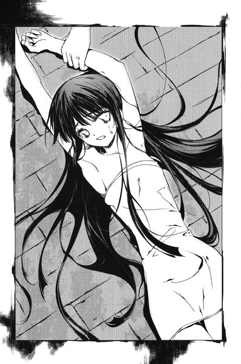
「うふふふ」
唇から鮮血を滴らせながら、千晶は小さく笑った。
「わたしの目的はレインメイカー。それに近づくために藤牧裕生が欲しいの。レインメイカーは、藤牧裕生の近辺にしか姿を現さない」
「どうしてレインメイカーがそんなに欲しいの？」
「レインメイカーはこの世界に最初に登場したカゲヌシ。『同族食い』と同じように、カゲヌシの位階から離れた特別な存在。レインメイカーには他のカゲヌシにはない力があるのよ。レインメイカーがわたしの手に落ちれば、わたしにはもう恐れるものはなにもなくなる」
千晶の冷たい血がぽたぽたとみちるの頬に落ちる。まるで涙のようにみちるの顔から床へと流れていった。
「わたしと父の静かな生活が保証されるの」
彼女は夢見るようにつぶやいた。
「え......？」
「あなたには分からないわ。ただの人間のあなたには」
みちるは相手から顔を背けることもできずに、千晶の目を呆然と見上げていた。
「あなたはわたしの道具......あなたをわたしのものにしてあげる。あなたには青のリグルをあげる......」
歌うようなつぶやきの後で、千晶の唇が大きく開いた。彼女の口腔の奥から、巨大な青い幼虫──リグルが身をくねらせながら姿を現した。そして、ぽとり、と彼女の唇のすぐ脇に落ちる。
こらえきれなくなってみちるは絶叫した──その悲鳴をふさぐように、恐ろしく巨大なものが唇をこじ開けて侵入してくる。その刹那、口の中で耐えがたいほどの激痛が炸裂した。みちるの体がひとりでにびくんと跳ねる。視界は一瞬のうちに暗転し、瞼の裏で火花に似た赤い光がぱっと瞬いた。
苦痛の塊は舌の上を滑り、喉をくぐり、食道を押し広げながら彼女の体の奥へと進んでいく。ふと、暗闇の中に裕生の顔が奇妙にくっきりと浮かび上がった。
みちるはこの敵が彼女になにをさせようとしているのかを理解した──この虫を裕生に運ぶ役目を負わせようとしている。
「藤牧......」
苦痛に蹂躙された意識の片隅で、みちるはつぶやいた。
その呼びかけの続きに来る言葉が、「助けて」なのか「逃げて」なのか、みちるにもはっきりと分からなかった。
「藤牧......藤牧......」
それでも完全に気を失うまで、みちるはその名前を呼び続けた。
第三章 「奪取」
１
『ごめん。ちょっと両親が具合悪くなっちゃって』
携帯からみちるの声が聞こえる。
「あ、うん。分かった。じゃあ、ぼくが一人で聞いてくるから」
と、裕生は言った。
一夜明けて日曜日の朝。
裕生たちは病院に行って清史と話す予定になっていた。団地の自分の部屋で支度していると、みちるから電話がかかってきた──今日は一緒に行けないという。
「もし佐貫がベッドから動けそうだったら、一緒に行ってもらうつもりだし。どうなるか分からないけど、色々聞いてくるよ」
『なにを聞くつもり？ あの人から』
なぜか咎めるようにみちるは言う。裕生は戸惑った。
「なにって昨日話したじゃないか。カゲヌシのこととか、あの船瀬千晶のこととか。あと『皇輝山文書』も持ってくから、そのことも聞いてくる」
「そう......がんばっ......てね」
一瞬、みちるの声が苦しげにかすれた気がした。
「どうかした？」
『なんでもない。あとで話が聞きたいんだけど、いい？』
「もちろん。病院出たらすぐに電話するから」
妙な沈黙が空いた。
『ねえ......直接会って話さない？』
と、みちるが言った。鼻にかかったような甘えた口調だった。
「え？ でも、家から出られないんだよね？」
『うちの近くの公園まで来て。いいでしょ？』
「別にいいけど......なんでわざわざ？」
『藤牧に会いたいの。二人っきりで』
裕生は首をかしげる。なんとなく妙な話だったが、電話では話せない相談ごとでもあるのかもしれない。それに直接会って話せるなら、そうした方がいい気もする。
「分かった。病院出たら電話するから」
『うん。待ってる』
「じゃあ、また後」
そこまで言いかけた時、みちるは唐突に電話を切った。裕生は首をかしげながら、耳から離した携帯を見つめる。
（ま、いいか）
急がなければならない。裕生はバッグを持って自分の部屋を出た。
藤牧家にいるのは裕生と葉だけだった。雄一は朝食を食べてすぐに出かけているし、父の吾郎は一階の雛咲家でツネコと話している。ツネコはしばらく一階の雛咲家に滞在して、病院で清史の付き添いをするつもりらしい。
今日も午後から病院に行く予定だと聞いている。人目を気にせずに清史から話を聞けるのは、午前中しかなかった。
キッチンを覗きこむと、テーブルの前に座った葉が真剣な顔で手帳をめくっている。彼女が記憶のかわりにつけているメモだった。
「ぼく、そろそろ病院に出かけるから」
顔を上げた彼女は、怪訝そうな表情を浮かべた。
「わたしたちと一緒に行かないんですか？」
裕生の胸がかすかにずきりとうずいた。
「ぼくは先に行って、カゲヌシのことを聞くんだよ」
昨日の晩、彼女にもさんざん説明したことだった。葉はぱらぱらとページをめくって、悲しげに裕生を見上げた。
「......そうでした。あの......行ってらっしゃい」
消え入りそうな声で葉は言った。手帳を握りしめた手がかすかに震えている。裕生はキッチンに入ると、彼女の隣の椅子に腰を下ろした。「行ってらっしゃい」と言われても、こんな状態の彼女を置いては行けない。
「別に気にしなくていいよ」
葉はうつむいて、ちがう、というように首を振った。
「先輩の言ったことを忘れるのが嫌なんです。他のことは忘れるのはもう覚悟ができてるけど、それだけは絶対に嫌」
一瞬、裕生は言葉を失った。葉の両手の震えが大きくなる。裕生はその握った手に自分の掌をかぶせた。
「でも、ぼくのことは別に大したことじゃないと思うよ。他にもっと忘れちゃいけないことがあると思うし......」
我ながらなんのフォローにもなっていない。彼女を安心させたかったが、かけるべき言葉を思いつかなかった。もともと、そんな便利な言葉などありはしなかった。
「そんなことないです」
と、葉は言った。
「先輩がわたしの名前を呼んでくれたから、わたしは一人じゃなくなった。でも、わたしが裕生ちゃんを忘れたら、きっとまた一人になっちゃう。あの部屋で父さんたちを待ってた時みたいに」
記憶のことが分かってから、彼女がこんな風に自分の不安を語るのは初めてだった。葉の手の震えが大きくなり、全身に広がっていった。まるで寒さに耐えているようだった。
気がつくと裕生は両手を伸ばして、葉の体を抱き寄せていた。葉もごく自然に背中に腕を回してくる。今まで肩に手を回したのがせいぜいで、こんな風にしっかりと抱き合ったことは一度もない。葉の心臓の鼓動まで感じ取ることができた。
二人はしばらくの間、そのままでじっとしていた。
我に返ったのは葉の方が先だったらしい。裕生のすぐそばにある彼女の顔が、湯気の出そうなほど真っ赤になっていた。
自分たちがなにをしているのか、裕生もようやく気づいた。
次の瞬間、頭に浮かんだのは以前ツネコから託された手紙だった。もし、葉に手を出した場合──。
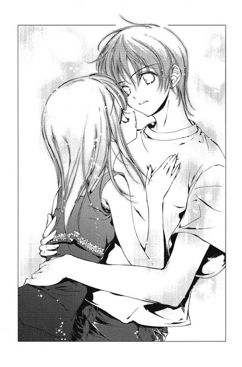
（ちょんぎる）
裕生は引きはがすように葉した。
二人とも椅子から立ち上がってさらに距離を置いた。お互いの顔を見ることができない。
沈黙が流れた。こん、と裕生はわざとらしく咳払いをした。
「じゃ、じゃあ、ぼく行くから」
「は、はい......行ってらっしゃい」
裕生はほとんど駆け出すように部屋から飛び出していった。
白いＴシャツとスパッツを着たみちるは、携帯を握りしめたままベッドの上で胎児のように体を丸めている。かすかに右手だけが痙攣しているのを除けば、彼女は硬直したように動かない。壁の方に目を向けているが、その目にはなんの感情も浮かんでいない。まるで捨てられた人形のようだった。
「なかなか可愛らしかったわ。『藤牧に会いたいの』って」
ベッドの端に千晶が腰かけて、みちるの頬にかすかに触れる。みちるがかけた電話の一部始終を彼女はすぐそばで聞いていた。みちるからはむろんなんの反応も返ってこない。彼女は外部の情報を普段と同じように見聞きすることはできるが、肉体の制御はすべてリグルに奪われている。電話で言ったみちるの言葉も、すべて青のリグルの言葉だった。
（藤牧......）
みちるは心の中でつぶやいた。その瞬間にまた激痛が波のように広がり、みちるの意識が遠のいた。昨晩、青のリグルが体内に潜りこんでから、彼女は苦痛による気絶と覚醒をひたすら繰り返していた。彼女の体内に巣くっているリグルからは、まるで血液のように全身に向かって痛みが運ばれていた。
しかし彼女が意識を失ったところで、リグルにはなんの影響もない。彼女の意識と肉体は完全に分離させられている。誰にも気づかれないまま、拷問を受け続けているようなものだった。
（藤牧が捕まる）
裕生に電話をかけた時、みちるの意識はかろうじて覚醒していた。何度も裕生に危険を知らせようとしたが、声を上げようとするたびにさらなる苦痛が炸裂する。どうやら、リグルの意思に反して体を動かそうと考えると、支配された人間はより苦しむようになっているらしい。
「あとは待つばかりね。あなたも楽しみでしょう？」
千晶の声が上から降ってくる。みちるは内心屈辱に震えていた。さっきの電話では、「みちる」は媚びた声を出して裕生に甘えていた──あたしは絶対あんなことしない。あたしはあんな人間じゃない。
「藤牧裕生が手に入ったら、あなたを解放してあげる。もしよかったら、お礼に彼をしばらく貸してあげてもいい。あなたのして欲しいことをなんでも彼にさせることができるわよ」
痛みよりも怒りで彼女の目がくらんだ。今すぐ起き上がってこの女の首を絞めてやりたかった。体を動かしたいと思った瞬間、激痛が全身を貫く──同時にびくりと右腕が動いた。
（なんだろう）
意識を失いそうになりながら、彼女はそう思った。痛みのせいで今まで意識していなかったが、自由にならない体の中で右手だけが微妙に感覚が違う。
（もしかすると......）
今、みちるの右手は開いている。そこに彼女は意識を集中させた。指をまるごと折られるような鋭い痛みが走った。意識が落ちないように必死に耐える。
彼女の右手は震えながら閉じていった。
（やっぱりそうなんだ）
右手だけは青のリグルの支配が弱い。そういえば、裕生と佐貫が葉の父親に初めて会った時、彼は右手に包帯を巻いていたと話していた。右手は動かないように固定されていたのではないだろうか。
相変わらず千晶は物言わぬみちるの頬を撫で続けている。
右手だけがわずかに動いたところで、なにが出来るのか分からない。しかし──。
（あんたの好きにはさせない）
みちるの胸にはその思いがたぎっていた。
２
「四年前、船瀬千晶が加賀見からいなくなった日は、雛咲さんのお父さんがいなくなった日とまったく同じなんだってよ」
廊下を歩きながら佐貫が言った。彼は青い患者衣を着て、ギプスを首から吊っている。まだ顔色は悪く、足元も少し頼りなかった。
「船瀬智和がいなくなったのはその一ヶ月前。父親がいなくなってから、千晶はしばらく一人で生活してたらしい」
「誰から聞いたの？」
と、裕生が言った。二人は清史の病室に向かっているところだった。
「警察の人だよ。さっき事情聴取に来てさ。聞いたら教えてくれた」
「佐貫の腕を折った『母親』はまだ誰なのか分からないんだよね？」
赤のリグルに操られていた中年の女性も病院に収容されている。清史と違って重傷を負ったせいか、まだ意識は戻っていなかった。
「そっちはまだ調べてるって言ってたな。まあ、そのうちに分かるんじゃねえか......悪ィ、ちょっと休んでいいか？」
佐貫は立ち止まって廊下の手すりをつかむ。背中で大きく息をしている。
「やっぱり、佐貫は病室に戻った方がいいんじゃないの？昨日怪我したばっかりなんだから」
「いや、体の具合は大丈夫。昨日の晩から飯食ってないだけなんだ......今日、午後から腕の手術することになってて」
「え......手術？」
ますます大丈夫ではない気がする。
「無理しちゃダメだよ。ぼくが送っていくから、佐貫は自分の病室に戻った方が」
「俺は役立たずか？」
突然、佐貫が言った。あまりにも強い口調だったので、裕生は驚いた。
「俺が大丈夫って言ったら大丈夫なんだよ。ちゃんと考えてるからそんなにムチャもしてない。でも、一緒に行って役に立たないんだったら、戻っておとなしく寝てやる」
「役に立ってるのは当たり前だよ。でも......」
「じゃ、行くぞ。第一、俺の怪我を心配する前に、雛咲さんのこと心配しろ。俺の怪我なんかどうせ放っといても治るんだからよ」
さっき葉と抱き合った時のことが頭をよぎって、裕生は口をつぐんだ。
佐貫はその隙にさっさと歩き出す。一瞬迷ってから裕生はその後を追った。佐貫は葉のことを第一に考えろと言いたいのだと思う──それが佐貫の希望ならそうするべきだと思った。
清史はベッドの中で目を開けていた。病室に入った裕生たちがベッドのそばに立つと、目だけを動かして二人を見上げた。
「......やあ、裕生くんか」
少ししゃがれた声で清史は言った。
「俺のこと、憶えてますか？」
と、佐貫が尋ねる。清史はしばらく佐貫の顔を注視していたが、やがて首を振った──憶えていないらしい。
「昨日、裕生と俺で会いにいったんスけど」
彼は戸惑ったように佐貫を見ているだけだった。この四年間の記憶が完全に抜け落ちているというのは本当らしかった。船瀬智和を名乗っていた時とはまるで別人のように見える。佐貫はポケットから一枚の写真を出して、清史に見せた。あの家でも見せた船瀬親子の写真だった。
「この写真に写っている二人に見覚えはないスか？特にこの女の子の方なんスけど」
清史は目を細めながら写真の方へ首を曲げた。
「......父親の方は知っている」
「え？」
と、裕生は言った。
「船瀬智和という男だ。この町にいたわたしの友人の一人で、医者をやっていた」
裕生は写真の船瀬を見る。清史は自分の友人のふりをさせられていたことになる。
「彼は産婦人科医でね。もともとはわたしの妻の主治医だった。それが縁で親しくなったんだ。それが、四年前に家族を残して突然行方不明になって......」
清史は言葉を切り、自嘲気味に笑った。
「わたしと一緒だな。その後、彼は帰ってきたか？」
「いえ......行方不明のままみたいです」
「そうか......」
ふと、裕生は昨日ツネコが清史から聞いたという話のことを思い出した。
「あの、悪い夢ってなんですか？」
裕生は清史に尋ねた。清史の表情がかすかにゆがんだ。
「怪物に遭う夢だ。黒い海を通って、黒い島に流れ着く。そこには怪物が待っている......そんな夢を何度も繰り返して見た」
最後に怪物が出てくるところを除けば、裕生の見る夢とそっくりだった。
「皇輝山天明も同じ夢を見ていました。知り合いだったんですよね？それに、ぼくもその夢を見てるんです」
「知っているよ」
清史はかすかに微笑んだ。
「こっそり葉が隠していたノートを読んだことがある。『くろのかなた』だったかな」
「え......」
裕生は絶句した。
「わたしの使っていなかったアタッシュケースの中に隠してあった。君が書いたものなんだろう？ノートには君の名前が書いてあったな」
雛咲家の葉の部屋で、黒いアタッシュケースを見た時のことを思い出した。葉には不釣り合いなものに思えたのだが、おそらくあの中にしまってあったのだろう。
「天明はどうしている？」
「警察に捕まりました。その......色々あって」
「裕生くん」
清史は物思いに沈んだ目でつぶやいた。
「今、君は幸せか？」
唐突な問いに裕生は戸惑った。
「どういう意味ですか？」
「あの黒い島の夢を見た者は、なぜか皆不幸になるようだ。あの夢を見てから、わたしにもなにかがあったようだし、天明も......それに、船瀬も」
「船瀬って人も夢を見てるんスか？」
佐貫が口をはさむと、清史はうなずいた。
「彼が一番詳細に見ているだろうな。そして、彼が一番のめりこんでいた。夢の中で見た奇妙な文字のことを、よく話してくれたものだった」
裕生は慌ててバッグから一冊の和装本を取り出した。なにも書かれていないその表紙を見た瞬間、清史は大きく目を見開いた。
「それはどこで？」
「皇輝山天明から貰ったんです」
清史はシーツから右手を出すと、表紙を懐かしそうに撫でた。
「もともとこれは船瀬の頼みでわたしが作ったものだよ。彼は夢で見た文字を紙に書いて、わたしのところへ持ってきたんだ。記念に本の形にしたいと言ってね。わたしは和装本の装丁のやり方を少し知っていたから、遊びのつもりでこれを作ったんだよ」
清史は遠い目をしながら言った。
「しかし、完成した時には船瀬はすでに失踪していた。それで、同じようにあの夢を見ている天明にこの本をやったというわけなんだ」
「ちょっと待って下さい」
裕生は驚いて口をはさんだ。
「じゃあ、雛咲さんもこれになにが書かれてるのか知らないんですか？」
「知らないね。船瀬も自分が夢で見たものをそのまま書いてきただけで、読めたわけではなかったと思う。ただ......」
なにかを思い出すように、清史は目を閉じた。
「順番、と船瀬は言っていた」
「なんの順番なんスか？」
と、佐貫が尋ねる。
「そこまではわたしにも分からない......とにかく、なにかの順番らしい、としか聞いていないんだ」
裕生は少し落胆した──まさか、『皇輝山文書』を作った本人が内容を知らないとは思ってもみなかった。
「他になにか聞いたことはありませんか？」
「いや......なにも聞いていないな」
清史は首を振りながら言った。それ以上のことは、本物の船瀬智和から聞くしかなさそうだった。
「もしよかったら、その本をしばらくわたしに貸してもらえないか？見ているうちになにか思い出すかもしれない」
一瞬、裕生と佐貫は顔を見合わせる。別にいいんじゃないか、というように佐貫は軽くうなずいた。
「分かりました。どうぞ」
裕生は『皇輝山文書』を清史に手渡す。清史は本を開いて書かれている文字を確認し始めた。
沈黙が流れる──携帯の時計を見ると、正午になろうとしている。ツネコと葉が病院に到着する頃だった。そろそろ潮時だと思った。
しかし、ここを出る前に一番肝心な質問をしなければならない。
「カゲヌシについてなにか知っていることはないですか？」
と、裕生は言った。
清史は『皇輝山文書』からふと顔を上げ、
「カゲヌシ......？」
と、口の中で噛みしめるように繰り返す。裕生は息を詰めてその続きを待った。
しかし、その続きは素っ気ない一言だけだった。
「......聞いたことはないな」
３
裕生は市民病院の建物から外へ出た。入り口の自動ドアにまで車を横付けするためのロータリーがある。裕生は自動ドアのすぐ外で立ち止まると、深いため息をついた。
（これっていう話は聞けなかったな）
と、裕生は思った。一番肝心な清史がどこでなにをしていたのかが、結局分からずじまいだった。『皇輝山文書』についても大した情報は得られなかった。自分がカゲヌシに操られていたことも、まったく憶えていないらしい。
（でも、西尾には話しとかないと）
一応、そういう約束になっている。
みちるにメールを打つと、三十分後に近所の公園で待っているという返事がかえってきた。病院から待ち合わせ場所までは歩いて十分もかからない。
まだ時間はあるが、改めてどこかへ寄り道するほどの余裕はない。中途半端だった。
どうしようか迷っているところへ、一台のタクシーが病院の入り口の前で停まった。タクシーから降りてきたのはツネコと葉だった。
一瞬、裕生は建物の中へ戻ろうとした。ツネコに会ったところで問題はなかったが、葉と顔を合わせるのが恥ずかしかった──しかし。
「なにしてるの。こんなところで」
ツネコにあっさりと見つかってしまった。隣にいた葉が裕生を見た途端にびくっと立ちすくんだ。そして、耳まで真っ赤になって顔を伏せてしまう。そうなると裕生の方も意識しないわけにはいかなかった。葉の柔らかな体の感触がリアルに蘇りそうになり、必死にそれを頭から追い出した。
「あ......その、昨日一緒にいた友達の見舞いに来ました。午後から手術があるって聞いたんで」
「あら、そうだったの。それは......」
ふと、ツネコは口をつぐんだ。少し距離を置いて目を逸らし合っている裕生と葉を見比べる。
「あんたたち、どうかしたの？」
「いえ、別になんでもないです」
緊張のあまり裏返りそうな声を、どうにか抑えながら答えた。とたんにツネコの目がすっと細くなった。
「......本当に？」
裕生は反射的に昨日のツネコとの会話を思い出す。自分に危機が迫っているのを感じた。
「ほ、本当ですよ」
「......そうかしら」
ツネコは裕生ではなく葉の方を見ていた。
「葉、なにがあったの？」
「別になんでもないです」
思ったよりもきっぱりと彼女は答える。しかし、相変わらず下を向いたままだった。おそるおそる顔を上げようとして、裕生と目が合ったとたんにまた元のように俯いてしまう。
裕生は思わず唾を呑みこんだ。これではなにかありましたと大声で叫んでいるようなものだ。
「あ、ちょっとぼく葉と話があるんですけど、先に行ってもらえますか」
裕生はツネコの返事を待たずに、葉の手を引っ張って入り口から少し離れたイチョウの木の陰へ連れていった。ちらりと病院の入り口を見ると、ツネコが仁王立ちで腕組みをしながら裕生をにらみつけている。
「あのさ、葉......」
葉の顔を覗きこむと、彼女は上目遣いで裕生を見た。
「さっきのことなんだけど」
裕生は口ごもった。とにかく謝ろう、と思った時、
「......ごめんなさい」
と、葉は言った。
「え？」
「わたしが変なこと言ったから。だからあんな」
裕生はびっくりして首を振った。
「別に変じゃないよ。ぼくの方こそ、なんの力にもなってないし」
「そんなことないです」
と、葉が強く言った。
「わたし、先輩がいなかったら、とっくにこの世界からいなくなってました。まだこうしていられるのも、先輩がいてくれるからなの」
「さっきのあれはその......」
「分かってます。わたしが取り乱したから、励ましてくれたんです......なにか意味があるわけじゃなくて。大したことじゃないんです」
裕生にというより、自分に言い聞かせているようにしか見えなかった。
彼は黙ってしまった。違うと言えば深い意味があったことになってしまうし、そうだねと言えば何の意味もないことになってしまう。どちらもふさわしくない気がしたが、かといって自分の気持ちをどう言い表したらいいか分からなかった。
「そろそろ行きます。叔母さんが待ってるから」
と、葉は言った。もう普段の彼女に戻っている。
裕生も時計を見ると、待ち合わせの時間が迫っていた。
「ぼくもそろそろ行かないと遅刻するかも」
「どこに行くんですか？」
「西尾の家のそばの公園。西尾が今日来られなかったから、そこで会って今日のこと話すんだよ」
ふと、裕生はさっき清史に『皇輝山文書』を手渡したことを思い出した。ひょっとすると、なにか思い出してくれるかもしれない。
「もし、葉のお父さんがぼくに話があるみたいだったら、すぐに連絡してくれる？病院に戻るから」
葉はうなずいて、持ち歩いている手帳を取り出した。
裕生の言ったことを忘れないように書いておくつもりらしい。ぎっしりと文字の書きこまれたページをめくり、何も書かれていないページを開いた。
（あ......）
裕生はもう少しで上げそうになった声を必死で抑えた。葉はなにも気付かずにペンを走らせている──やがて、ぱたんと手帳を閉じた。
「それじゃ、なにかあったら連絡しますから」
そう言い残して、葉はツネコの方へ早足で戻っていった。
二人が建物の中へ入っていくのを見届けてから、裕生も向きを変えて待ち合わせ場所の公園を目指した。
（大したことじゃないんです）
裕生は歩きながら葉の言葉を反芻した。
「......嘘だよな、やっぱり」
葉が手帳のページをめくった時、一瞬だけ前のページの最後の書きこみが見えた。
見間違いでなければ、そこにはこう書かれていた──。
裕生ちゃんが抱きしめてくれた。うれしい。
４
清史はベッドの中で眠っていた。看護師の話ではさっきまで起きていたはずだという。
「まったく、せっかく娘が来たっていうのにね」
売店で買った花を活けながらツネコは言う。葉はベッドの脇の椅子に黙って腰かけていた。
（あれ......？）
ふと、葉は床の上に一冊の本が落ちていることに気づいた。ベッドから落ちたのかもしれない。拾い上げて中を開いた葉は、見慣れぬ奇妙な文字が並んでいるのを見る。
葉ははっと息を呑んだ。裕生たちが持っているという『皇輝山文書』とはこれではないだろうか。どうしてこんなものが落ちているのだろう。
（忘れていったのかも）
裕生はさっきまでここで父と話していた。その時に置いていってしまったのかもしれない。どちらにしても床に落ちていていいものではない。葉はそれを膝の上に乗せた。
『中を見ないんですか？』
頭の中で自分ではないものの声が聞こえて、葉は飛び上がりそうになった──彼女に取り憑いているカゲヌシ「黒の彼方」の声だった。以前に比べて、「黒の彼方」が葉に話しかけてくることはめっきり少なくなっていた。おそらく記憶の欠落が始まった今、放っておいても近いうちに葉の精神を支配できると踏んでいるのだろう。
わざわざ口に出して話しかけてきたのは、理由があるに違いなかった。
（なにが書いてあるか、知っているの？）
と、慎重に葉は問いかける。
『あなたにとっても意義のある内容だと思いますよ』
カゲヌシは即答を避けた。おそらく、なにか重要なことが書かれているに違いない。見てみたいという気持ちが葉にないわけでもなかった。しかし、葉が見聞きしたことは自動的に「黒の彼方」も知るところとなる。情報が筒抜けになるのを避けるために、葉はなるべく裕生のしていることを知ろうとしないように努めてきた。
『カゲヌシの秘密を知りたくないですか？』
頭の中で聞こえる声を無視して葉は立ち上がった。このカゲヌシの言葉はどうせすべて嘘ばかりだ。彼女はしっかりと『皇輝山文書』を胸に抱え込んだ。この病院には佐貫も入院している。彼に預けるつもりだった。
「ちょっと出かけてきていい？」
と、葉はツネコに言った。彼女は怪訝そうな顔をしたが、
「別にいいわよ。どうせ兄さんもしばらく起きないだろうから」
父の病室を出て、葉は廊下を歩いていった。佐貫がいるのは四人用の一般病室である。彼に預ければ済むと思っていたのだが、一般病室に着いた彼女が見たのは空のベッドだった。
「あの、佐貫さんは？」
そこへ通りかかった若い看護師に葉は尋ねた。
「佐貫さんならさっき手術室に入りましたよ」
手術、という言葉に葉は驚いた。
「大丈夫なんですか？」
「ええ。一時間もすれば戻ってくると思うけど」
葉は胸に抱えた本を見下ろす。自分がこのまま預かっているよりは、一刻も早く裕生に返すのがいい気がする。長い時間持ち歩いていると、今の彼女は持っていることそのものを忘れてしまう可能性があった。
（すぐに裕生ちゃんに届けに行こう）
さいわい父は眠っている。確かみちるの家の近所の公園で会うと言っていた。急いで行けばすぐに戻ってこられるはずだ。
＊
裕生が公園に着いたのは、待ち合わせの時間を五分ほど過ぎてからだった。遊歩道やグラウンドもある大きな市民公園で、日曜の今日は人の姿も多い。
ジーンズとＴシャツを着たみちるが、公園の入り口にある自転車止めに腰かけていた。
一瞬、裕生は声をかけるのをためらった──みちるはひどく具合が悪そうに見えた。生気のない顔、つやのない髪、力なく丸めた背は普段の彼女とはほど遠かった。
「西尾......？」
おそるおそる声をかけると、みちるが裕生の方を見る。突然、彼女の顔にぱっと笑みが広がった。
「藤牧！」
みちるは明るく手を振って、裕生の方へ走ってくる。彼女の変化に裕生は戸惑った。具合が悪いように見えたのは錯覚だったような気がした。
「ごめん、待った？」
と、裕生は言った。
「ううん。今来たところ」
「じゃあ、そのへんで話そうか」
入り口から見えるところにいくつかベンチがあり、子供を遊ばせている母親の姿が見えた。しかし、みちるは首を振った。
「もっと静かなところに行こ」
鼻にかかったような甘えた声で言って、みちるは裕生の手を握った。
「......え？」
裕生は戸惑いながら繋いでいる手を見下ろした。みちるは返事も待たずに、彼の手を引いて歩き出した。
「あっちにもベンチがあったよ」
彼女は右手で遊歩道の奥を指さす──その指はかすかに震えていた。
みちるが裕生を連れていったのは、公園の一番奥にある木のベンチだった。ペンキはすっかり剥げて、座面はささくれだっている。ここに置かれていることも忘れられているに違いなかった。
「ここに座って」
裕生が腰を下ろすと、みちるもぴったりと寄り添うように座った。裕生はあたりを見回す。裕生たちがいるのは遊歩道から少し離れた木立の中で、人通りはまったくない。
（どうしてこんなところまでわざわざ連れてきたんだろう）
よほど重要な話があるのかと思っていたが、ただ話を聞かれない用心にしては大袈裟すぎる気がした。そもそも、直接会って話をしようと言い出したのもおかしな話だった。どうも昨日からやることなすことがみちるらしくない。
彼女が話をする前に、そのことについて尋ねた方がいいような気がした。
「あのさ、西尾......」
と、裕生が言いかけた時、
「ねえ、藤牧」
みちるが裕生の話を遮った。
「なに？」
「藤牧はあたしのことどう思ってるの？」
「はあ？」
裕生は間の抜けた声を上げた。みちるは指を絡ませるように裕生の手を握った。いつのまにか吐息がかかるほど近くに彼女の顔があった。
「あたし、藤牧のことが好きなの」
みちるは裕生に体を預けてくる──肩の少し下あたりに、ほどよい大きさの彼女の胸が当たっている。裕生の動悸がとたんに速くなり始めた。
「ちょ......ちょっと待って」
裕生はみちるの肩をつかんで、必死に体を押し戻した。
「なに言ってるんだよ、西尾」
みちるは肩に置かれた裕生の手に自分の右手を重ね、小首をかしげながら微笑んだ。裕生はごくりと唾を呑みこんだ。みちるが魅力的な女の子だということは裕生もよく知っている。今まで意識する必要がなかったのは、みちるが異性も同性も同じように付き合う性格だったからだ。
（......変だ）
と、裕生は思った。こんな態度は普段のみちるらしくない。なにかそうせざるを得ない理由があるのではないか──。
その時、裕生はみちるの手が生温かく濡れていることに気づいた。彼女の右手を見た裕生はぎょっとした。人差し指が血の池に浸したように真っ赤に染まっていた。
「どうしたのそれ！」
裕生はみちるの右手をつかむ。人差し指の爪が内出血を起こして、指先から半分あたりまでが紫色に染まっていた。よく見ると、爪と指の間に小さな尖った木片が深く突き刺さっている。どうやら二人がいるベンチの座面の一部で、なにかの拍子にささくれで怪我をしたらしい。
みちるの右手はぶるぶると細かく震えている。痛みも相当なもののはずだった。
「なんで一言もいわなかったの？ すごい血が」
裕生はぎょっとして口をつぐんだ。みちるは無表情に右手を見下ろしていた。まるで他人の手でも見るような冷ややかな目つきだった。
「西尾？」
彼女は裕生に笑いかけた。
「大丈夫だよ。ごめんね、心配かけて」
「でも......」
みちるは突然両手を広げて、裕生に抱きついてきた。裕生の頭の中が真っ白になった──しかし、それは一瞬のことだった。葉のことを思い出さなければ、我に返るのはもっと遅れたに違いない。
葉とあんな風に抱き合った後で、他の誰かとこんなことをしてはいけない気がした。裕生はみちるを押し戻そうとしたが、もっと強い力で体を押しつけられた。
「西尾、ほんとにちょっと離れ......」
裕生の全身が凍りついた。
みちるの肩越しにベンチの座面が見えていた。そこには彼女の血がべっとりとついている。血の跡は何本もの線を形づくっていた。
次の瞬間、裕生はそれが単なる線でないことに気づいた。少しずつ方向の違うそれらのゆがんだ線には、明確な意図がこめられている。
それは血文字だった。
リグル
はっきりとそう書かれていた。
５
葉は公園の中を歩き回っていた。
確かに裕生は公園でみちるに会うと言っていた──どこかにいるはずだった。
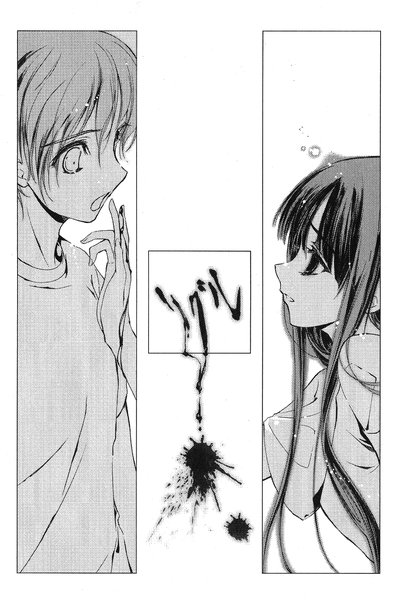
ほとんどの場所を調べつくして、後に残ったのは公園の一番奥にある寂しい木立の中だけだった。そこへ続く遊歩道の前に立った時、葉いだ。
（こんなところに二人っきりで......）
一瞬、頭に浮かびかけた想像を、葉は慌てて払い落とした。そんなことを考えるのは二人への侮辱のような気がした。
葉は遊歩道へと足を踏み入れた。道の上まで張り出すように伸びた木々の枝が太陽の光を遮って、昼間だというのに薄暗かった。陰気な雰囲気のせいか、散歩をする人もまったくいない。
さっきの疑問がまたむくむくと頭をもたげてきた。ここにいるのだとしたら、どうしてわざわざここを選んだのだろう。
（裕生ちゃんとはただの友達のはず）
以前、みちるは今の裕生に対して特別な感情はないとはっきり言っていた──初恋の相手というだけで。
自分にそう言い聞かせていた葉は、はっと息を呑んで立ち止まった。
（わたし、なにを考えてるんだろう）
仮に裕生とみちるが付き合っているからといって、それを葉に咎める資格があるわけではない。裕生は彼女のものでもなんでもないのだから。それに、以前は裕生になにか特別な関係を望んでいるわけではなかったはずだ。近いうちに葉は葉自身ではなくなってしまう。望んでも仕方がないと諦めていたはずだ。こんな風に欲深ではなかったはずなのに。
（わたし、いつからこんな......）
ふと、抱き合っている裕生と自分の姿が頭に浮かんだ。
今日からだ。
葉は雷に打たれたように立ちすくんだ。今までずっと押し隠していたものが、今朝のあの一瞬に動き出してしまった──。
「どうしたの、それ！」
突然、裕生の叫び声が耳に入った。まるで自分に向けられた言葉のように、葉は体を震わせた。遊歩道でも行くことのできない奥の木立から聞こえた気がした。
葉は声のする方へ歩いていった。
ほどなく古いベンチが見えてくる。裕生とみちるはそこにいた。手前にみちるの背中が、その奥に裕生が見えて──。
「あ......」
葉の声はほとんど悲鳴に近かった。
二人はしっかりと抱き合っていた。
葉はくるりと向きを変えて、一目散に走り出した。
＊
（リグル）
血文字を読んだ裕生はすべてを悟った。この文字はみちるが裕生に送ったメッセージだ。今、自分に抱きついているのはみちるではない。みちるを操っているリグルだった。千晶の両親を演じさせられていたあの二人と同じように、今みちるの中にも幼虫がいるはずだ。
（どうしよう）
みちるの体を受け止めながら、裕生は必死で頭を働かせる。今、裕生のポケットの中には新たに詰め直した「黒曜」の小瓶が入っている。次にリグルが狙うのは自分だと思って、護身用に持ち歩いているものだった。しかし、この毒もカゲヌシに直接与えることができなければ、相手にダメージを与えることはできない。
「どうしたの、藤牧」
みちるの唇が裕生の頬に押しつけられている。吐息からはかすかに土の匂いが漂ってきていた。
昨日のようにリグルが無防備に姿を現すとは思えなかった。かといって、今のみちるを置いてここから逃げ出すわけにはいかない。リグルの当面の目的は裕生の中に潜りこむことのはずだ。彼女の中にリグルがいると悟ったことが知れたら、みちるは千晶にとって「用済み」になりかねない。最悪の場合、殺されて食われるかもしれなかった。
「西尾。実はぼくからも大事な話があるんだ」
と、裕生は言った。今は時間を稼いで、その間に次にどうすべきか考えようと思った。とにかく自分に襲いかかるのをためらわせなければならない。
「そんなことより、さっきのあたしの聞いたことにちゃんと」
彼女の両手が裕生の背中といい腰といい、至るところを撫で回している。あのみちるにこんなことをさせていると思うと、むかむかと腹が立った。
「......カゲヌシのことなんだ」
案の定、みちるの動きが止まった。そう言えば耳を傾けざるを得ないと踏んだのだが、どうやら正解だったらしい。
「どういうこと？」
みちるの顔からすっと表情が失せた。
「どういうことって......それは......」
裕生は言いよどんだ。その先の言葉を必死に考える。
「ぼくはその......ぼくもカゲヌシと深い関係があるんだ。普通の人間とは違う。佐貫にもまだ話してないんだけど」
我ながらデタラメな嘘だと思ったが、みちるを操っているリグルはそう思わなかったようだった。彼女は裕生から体を離すと、値踏みするような目つきで彼を眺め回した。
「どのカゲヌシ？」
「え？」
「どのカゲヌシと関係があるの？」
そう言われて裕生は詰まった──裕生の知っている「黒の彼方」以外のカゲヌシは、ほとんど死んでいる。かといって存在しない名前を挙げるわけにもいかない。迷った末に裕生は答えた。
「......レインメイカー」
今度こそみちるは息を呑んだ。どうやら、相手に衝撃を与える答えだったらしい。そもそも、裕生はレインメイカーがカゲヌシかどうかも確信がなかったのだが。
その反応の大きさに裕生も驚いた。
「お前は何者だ？」
今やリグルはみちるのふりをする余裕もないようだった。裕生はなるべく心を落ち着かせながら話を続けた。
「ぼくは一応人間だけど、色々あってぼくの意思はレインメイカーと繋がってる。もし、ぼくに危害が及んだら、レインメイカーの力も発動することになってるんだ」
「そんな馬鹿な」
と、みちるはうめくように言った。
「レインメイカーは『最初と最後のカゲヌシ』。人間の意思などとは......」
（『最初と最後のカゲヌシ』？）
裕生はその言葉に内心首をひねった。その瞬間、
「そこまでにしておいたら？」
木立の向こうから女の声が聞こえた。
杖をついた銀髪の少女が現れる──船瀬千晶だった。
反射的に裕生は立ち上がった。カゲヌシがいる以上、そばに契約者がいるのは当然だったが、この場面では最も現れて欲しくない相手だった。
「レインメイカーと意思が繋がってるなんて、よくも平気で言えたものだわ。あなたはあのカゲヌシについてろくに知らないでしょう？」
「どうしてそう思うんだよ？」
「そうやっていつも相手に喋らせようとしているのね」
千晶はせせら笑った。
「あれの力がどんなものかも知らないくせに」
「え......？」
みちるはふらりと立ち上がると、千晶の方へ歩いていった。
「青のリグルは人間の真似をするのは得意だし、ごく普通の会話をする程度の知能はあるけれど、嘘の混じった高度な会話の駆け引きを、わたしの指示もなく行うのは苦手なの」
千晶が手を伸ばすと、みちるはその左手を握りしめた。彼女たちは仲のいい姉妹のように並んで立つ。裕生にとっては不快な眺めだった。
「西尾をどうする気なんだ」
「どうもしないわ。あなたが大人しくしてくれれば、解放するわよ」
千晶はみちると顔を見合わせてにっこり笑った。
「この娘の命をわたしが握っているのは分かるわよね？レインメイカーについて知っていることを話してもらうわ」
「知らない人間からなにを聞くんだよ？」
千晶はかすかに鼻を鳴らして笑った。
「いいことを教えてあげる。レインメイカーが一つの場所にとどまり続けることも、人間に『黒曜』を渡すことも今までになかった。人間とはまず接触しなかったし、カゲヌシにも存在を知られないように移動を繰り返してきた。何かの理由であなたは選ばれたのよ、藤牧裕生」
「え......」
裕生は驚いた。自分にそんな特別なものがあるとは思えなかった。
「あるいは『同族食い』がこの土地にいることと関係があるのかもしれない。どうやって『黒曜』を手に入れたの？今みたいな杜撰な嘘が通じる相手ではないはずよ。そもそも、どうやってレインメイカーと接触したの？」
裕生は答えていいものか迷った──しかし、隠すほど大層な秘密があるわけでもない。
「レインメイカーの書いたサインを消して、もう一度書きに来るのを待ったんだ。『黒曜』は向こうが勝手にくれた」
沈黙が流れる。千晶は戸惑ったような表情を浮かべた。
「また嘘をついているようね。そんな方法で知能の高いレインメイカーが現れるわけがないわ」
「知能が高い？」
今度は裕生の方が驚く番だった。彼の知っているレインメイカーは人語を発することもほとんどできない、獣のような存在に見えた。まるで別のものの話を聞いている気がした。
「まあいいでしょう。あなたには後からまた聞く機会があるでしょうから」
彼女は杖を突いて、裕生の方へ足を踏み出した。
「どのリグルがあなたに似合うかしらね」
「どっちだってすぐにバレる。あんなに頭が悪いんじゃ......」
「リグルが青と赤だけだと思わないでね」
「えっ」
「まだ白のリグルがいるのよ......一番強いリグルが」
（まだ別のリグルがいるのか）
「あなたには白のリグルがふさわしいかもしれないわ」
裕生は自分も一歩下がりながら、ポケットの中の「黒曜」を探った。顔を出さなければ裕生の体内へ潜りこむことはできない。その瞬間を狙って、一体でも倒してしまうつもりだった。
「藤牧、これを探してるの？」
突然、みちるが明るい声を発して、裕生はぎょっとした。確かに青のリグルは人間のふりが上手なようだった──その声はみちるそっくりだった。
彼女の手には「黒曜」の小瓶が握られている。
（え......？）
裕生は呆然と立ちつくした。
「どうせ持っていると思って、わたしが現れる前に盗るように言っておいたの」
勝ち誇ったように千晶が言った。
（しまった）
裕生は歯ぎしりした。さっき、抱きついて体を撫で回した時に抜き取っていたらしい。みちるがあんな「告白」をしたのも、その後の行為を不自然に見せないためだろう。最初から「黒曜」を取り上げるつもりだったのだ。
彼に向かってゆっくりと千晶が近づいてくる。一瞬、この場から逃げることも考えたが、みちるのことが問題だった。みちるが裕生を捕まえる道具として使えなければ、彼女を生かしておく必要はない。かといって、このカゲヌシと戦う方法は裕生にはない。
「待って！」
突然、遊歩道から声が聞こえた。
葉がこちらに向かって走ってきていた。
６
葉はいったん公園の出口まで駆け戻っていた。
抱き合っている二人の姿が、葉の頭の中をぐるぐると回り続けていた。いつからだろう、と葉は何度も思った。きっと最近のはずだ。二人とも気を遣ってなにも言わないでいてくれたに違いない──。
ふと、葉は立ち止まった。
（じゃあ、今朝のあれは......？）
みちると付き合っているのだったら、裕生があんなことをするとは思えなかった。
葉はさっきの二人の様子をもう一度よく思い返してみた。みちるの顔は見えなかったが、裕生の顔はどこかおかしかった気がする。大きく目を見開いて、なにか恐ろしいものでも見たような表情を浮かべていた。恋人と抱き合っている時に、あんな顔をするものだろうか。
（もう一回、行ってみよう）
なにか大事なことを見落としているのかもしれない。葉はもう一度向きを変えて、木立に向かって走り出した。
葉は裕生の隣に立って、銀髪の少女と向かい合う。一瞬だけ、彼女からは確かにカゲヌシの気配がした。
「雛咲さん、こんにちは」
と、彼女が言った。葉は目の前の相手が誰なのか分からなかった。どこかで会った気もしたが、名前を思い出せない。それでも相手は彼女のことを知っているようだった。
「......誰？」
そう言った時、隣にいた裕生がはっと息を呑んだ。
「船瀬千晶。この前、名前も名乗ったと思うけど？」
不満げに彼女は言った。
「......船瀬千晶」
その名前は知っていた。巨大な幼虫の姿をしたカゲヌシ・リグルの契約者。
「西尾の中にリグルのうちの一匹がいるんだ」
と、裕生は言った。みちるは千晶の後ろに立って、裕生と葉を楽しそうに見守っている。
（さっきはそのせいだったんだ）
と、葉は思った。カゲヌシに操られていただけだったのだ。
「葉、『黒の彼方』を出さないで」
と、裕生は小声で言った。
「分かってます」
このカゲヌシは人間の体内に潜りこむ。契約によって人間を攻撃できない「黒の彼方」には、戦う方法がなかった。
「雛咲さん、『同族食い』を出さないの？」
と、言いながら千晶が葉を見る。
「噂通り、本当に人間を攻撃しないのね」
葉ははっと息を呑んだ。この相手は「黒の彼方」の弱点を知っている。
「どのリグルも単体の力はさほど強くないけれど、人間の体に潜りこんでこそ真価を発揮する......あなたのカゲヌシとは相性が悪いみたいね」
千晶は背後にいるみちるをちらっと振り返った。
「藤牧裕生がリグルのどれかを受け入れれば、この子は解放してあげる」
千晶の言葉にみちるは気が遠くなるほどの衝撃を受けた。
（あたしのせいで藤牧が......）
裕生が捕まった瞬間、自分たち全員が千晶の道具と化す。葉も今以上に苦しい立場に追い込まれるだろう。
裕生と葉は顔を見合わせた。ああやめて、とみちるは思った。
お願いだから二人とも逃げて。
しかし、次の瞬間裕生が千晶の方へ一歩踏み出した。葉がなにか言いかけるのを制して、彼は口を開いた。
「分かった。ぼくが......」
途方もない恐怖と怒りがみちるに今までにない力を吹きこんだ。
（あたしが自分でリグルを追い出せばいいんだ！）
みちるは右手を左に動かした。さっき文字を書いた時とは比べものにならないほど大きな動きだった。苦痛もまたさっきとは比べものにならない。指、手首、肘、右腕のあらゆる関節に無数の灼けた刃が押しこまれているようだった。
すべてを一瞬で終わらせなければ、意識どころか正気を失うと彼女は悟った。彼女は左手がゆるく握りしめていた「黒曜」の小瓶をもぎ取った。そして、ゴムの栓を親指ではね飛ばしながら、瓶の口を自分の唇の隙間に差しこんだ。
かちん、と歯とガラスがぶつかる音が聞こえた。みちるは瓶そのものを口の奥へと押しこみながら、掌の手首に近い部分で顎を思いきり跳ね上げた。
下向きに傾いた瓶から、苦い液体が流れ出してくる。それは口全体を満たして、喉の奥へと流れこんでいった。反射的にごくりと嚥下する。
（飲みこんだ！）
一瞬、意識が遠のいた。右腕は苦痛に灼かれて、跡形もなく消えてしまったような気がした。
この「黒曜」が人間に無害かどうかはまったく分からない。みちるが知っていたのは裕生が口に含んでも無事だったということだけだ──口に含むことができるなら、飲みこむこともできるかもしれない。
「西尾！」
はるか遠くから裕生の声が聞こえる。その呼びかけで、ぎりぎりのところで意識を保つことができた。体の奥へ「黒曜」が流れこむのがはっきりと分かる。その部分だけリグルがもたらすものとは別の、しびれるような痛みが走った。
突然、みぞおちのあたりにいる大きな塊が体の中で跳ねた。
（うっ......）
彼女の体の中で、リグルが激しく動いている。その動きは徐々に大きくなり、やがて彼女の口を目指して、身をよじるように這い上がっていった。
ぼとり、と巨大な青い芋虫がみちるの口から地面に落ちる。千晶は裕生たちに背を向け、青のリグルの方へ急いで戻ろうとした。
裕生も葉を見逃さなかった。
「葉！」
と、裕生が叫ぶと同時に、葉は口の中で自らのカゲヌシの名を呼んだ。
「黒の彼方」
葉の影がみるみるうちに膨らんで、弾けるように巨大な双頭の黒犬が姿を現した。片側は目を開け、片側は眠ったままだった。
裕生は葉の手をしっかりと握りしめている。このカゲヌシを葉の影に戻すには、裕生が彼女の名前を呼んで目を覚まさせるしか方法はない。今までにも影の中に戻ることを嫌って、何度も裕生のもとから逃げ出そうとしていた。
「黒の彼方」は地面の上でもがく青のリグルへと一直線に駆けた。リグルは自ら機敏に動くことはできず、地面の上をのろのろと進むだけだった。
千晶が追いつく直前、地面を蹴った黒犬は青い幼虫をくわえてくるりと向きを変えた。顎にはさまれたリグルは激しくもがいている。
「黒の彼方」は肩で息をしている千晶と向かい合った。
その一方で、
「お久しぶりですね」
と、葉が裕生に言う──今、彼女が口にしているのは葉の肉体をも支配している「黒の彼方」の言葉だった。裕生は無言で葉の手をさらに強く握った。あの青のリグルが倒された瞬間、葉を呼び覚まして「黒の彼方」を影へと帰すつもりだった。
「まだわたしを倒す方法を探っているのですか？」
なおも「黒の彼方」は語りかけてくる。裕生は答えなかった──答えられることがなにもなかったからだ。
「あの虫のカゲヌシを食いつくしたら、おそらくわたしは元に戻ります」
裕生の全身がこわばった。龍子主を倒した後、葉の記憶喪失はさらにひどくなった。たった今も、一昨日会ったはずの船瀬千晶の顔を忘れていた。
それでも三つ目の首を失ったままのこのカゲヌシは完全体ではない。もし、完全体に戻ったら、一体どんなことが起こるのだろう？
「その子を放しなさい」
千晶の声が聞こえた。彼女は黒犬の前に立って、体を震わせている。
葉──「黒の彼方」は嘲るように鼻を鳴らした。
「人間に潜りこむだけが能の、こざかしい虫」
と、低い声でつぶやいた。
「わたしの一部になるがいい」
黒犬の顎に力がこもり、裕生は思わず目を背けた。
不意に低いうなり声に似た音が聞こえ始めた。ぱちっとはぜるような音がそれに混じる。
「うっ」
なぜか声を上げたのは葉の方だった。彼女は崩れ落ちるように地面に膝を突いた。
裕生が「黒の彼方」の方を見ると、黒犬が全身の毛を逆立てながらぶるぶると震えていた。青白い火花が時折音を立てて弾ける。体のあちこちから煙が上がっていた。
（電気......？）
やがて、力なく開いた顎から青のリグルが地面に落ちた。千晶がリグルを拾い上げても、黒犬はその場から動けずにいた。
「人間に潜りこむだけが能じゃないわ」
彼女は大きく口を開ける──ネズミが巣穴に戻るように、青のリグルが彼女の体の奥へと潜りこんでいった。
「電流の制御がリグルの本来の能力。神経系の微電流を制御することで、人間を操っているの。人間の体内にいる時は高圧電流を放出できないけれど......油断したわね」
それから、千晶は裕生と葉の方を向いた。
「方法を変えるわ」
と、彼女は言った。
「もう、あなたたちを無傷で手に入れようとは思わない。覚悟しておいて」
彼女は裕生たちに背を向け、杖を突きながら早足で木立の奥へと消えていった。
７
みちるが目を開けると、ベッドの脇に座っている佐貫の姿が見えた。右腕のギプスを重そうに首から吊っている。あまり顔色がよくないところを見ると、無理をしてここにいるのかもしれない。
「ここ、病院？」
声が自分のものではないようにざらざらしている。佐貫はうなずいた。
（あたし、生きてるんだ）
手足を動かそうとした途端、きりきりと関節が痛んだ。それに息をすると胸のあたりも焼けつくように痛む。胸の痛みは「黒曜」の後遺症に違いない。
カーテンが閉まっているせいか、窓の外を見ることはできないが、光の色を見る限りでは夕方に近い時間ではないかと思う。
それにしても、先月も入院して、今月もまた病院に逆戻りとは。さぞ両親も心配して──。
「あっ」
みちるはがばとはね起きた。そのままベッドから出ようとする彼女を、佐貫が慌てて止めた。
「なにやってんだ、バカ」
「お父さんやお母さんは？」
「ちゃんと病院に運ばれたよ。気を失ってるだけで、命に別状はねえって」
みちるはほっと息をついた──深く息をしたせいか咳きこんでしまう。佐貫がナースコールに手を伸ばしたが、みちるは首を振った。
「ううん。大丈夫。ねえ、藤牧たちは？」
「今、ロビーで警察と話してる。その間、俺が付き添ってんだ」
みちるはそこで言葉を切って、ちょっとためらった。
「リグルはどうなったの？」
「逃げられたらしいぞ」
「............そう」
みちるは昨晩からあの千晶にされたことを思い返した。みちるの体にリグルを仕込んで、意のままに操っていた。いや、なにかの目的のためにただ操っていたのではない。
千晶は明らかに楽しんでいた。
「......あれ？」
不意にみちるの瞳から大粒の涙がこぼれ始めた。
「どうしたんだお前？ どっか痛むのか？」
佐貫は心配そうにみちるの顔を覗きこむ。
「わ、分かんない。あれ？」
涙は後から後からわき出して、一向に止まらなかった。
（どうして泣いてるんだろう）
緊張がほどけたせいかもしれないし、今になって恐怖がぶり返したのかもしれない。
あの千晶にされたことは本当になにからなにまで嫌なことばかりだった。あの虫は今思い出しても寒気がするし、あの痛みは気が狂いそうだったし、キスをされたのも気持ちが悪かった。
しかし、それだけではまだこの涙には足りない気がする。
（あたし、藤牧のことが好きなの）
「あっ」
みちるは悲鳴に似た声を上げた。
「藤牧......」
一瞬、わずかに佐貫の表情が引き締まった気がした。普段のみちるだったら、こんな風に裕生の名前を口にすることはなかったはずだ。しかし、今のみちるは自分を抑えることができない。
「ふ、藤牧......あたし、藤牧に......」
一度名前を呼び始めると止まらなかった。繰り返しみちるは裕生を呼んだ。
みちるはぎゅっと唇を噛んだ。そしてすぐに鼻をすすり上げる。大きく息を吸ったせいで、胸がまた痛んだ。
（あんなことを言わされた）
とても大事な言葉だった。昔、言わないままになっていた言葉。いつか言うかもしれなかった言葉。
それを汚されたのがたまらなく悔しくて悲しかった。
「裕生、呼んできた方がいいか？」
佐貫はいつになく優しい声で話しかけてきた。
みちるは子供がいやいやをするように大きく首を振った。
「ぜ、絶対、呼ばないで」
みちるは泣きじゃくりながら言った。
「あ、あたしが泣いたこと、藤牧には秘密にして。お、お願いだから」
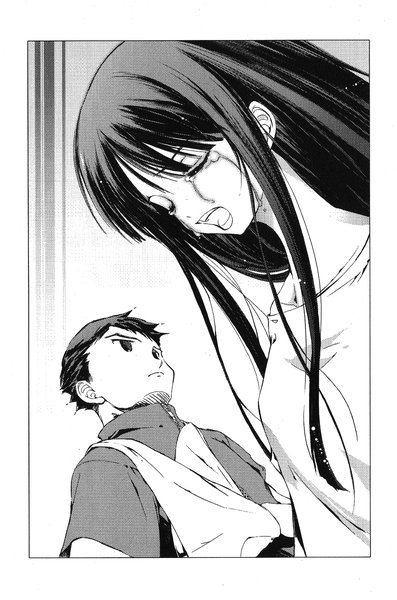
ここにもし裕生がいて、どうしたの、と言われたらなにもかも打ち明けてしまいそうだった。
「なんだか分かんねえけど、言わねえよ。心配すんな」
佐貫はギプスをしていない方の手で、苦労してティッシュを一枚抜くと、みちるの涙を拭き始めた。力の加減がうまくいかないせいか、みちるの頬がひりひりした。
「だから早く泣きやめ。裕生の奴、そろそろ帰ってくるかもしれねえから」
うん、とみちるはうなずきながら、声を殺して泣き続けた。
第四章 「レインメイカー」
１
若い警官が派出所の前に自転車を停める。
彼は加賀見団地の巡回を終わらせたところだった。派出所を出た時はまだ日は沈んでいなかったのだが、戻ってきた今はすっかり夜も更けている。いつもより巡回に長い時間をかけたのは、この近辺で事件が立て続けに起こっているからだった。
昨日から今日にかけても、駅に近い住宅地で一家三人が監禁される事件が起こっている。捜査本部は重要参考人として松葉杖をついた少女を捜しており、彼女は加賀見市のどこかに潜伏中という話だった。派出所勤務の警官にも拳銃の携帯の許可が下りていることを考えると、警戒の必要な相手ということらしい。
もっとも、彼自身は拳銃の必要をあまり感じていなかった。大学時代には柔道の選手として、オリンピック代表の最終候補にも残ったことがある。一対一なら、たいていの人間を取り押さえる自信はあった。
「今、戻りました」
彼は派出所のドアを開けて、背を縮めてくぐるように中へ入った。しかし、一緒に勤務していたはずの同僚はそこにいなかった。
「あれ？」
同僚の机の上には、書きかけの日報が置きっぱなしになっている。
「菊地さん？」
彼は奥に向かって同僚の名を呼んだ。
返事はなかった。
トイレかな、と思った時、彼はふと見慣れないものが同僚の机に立てかけてあることに気づいた。
「なんだ、これ」
腕支えのついたスチール製の杖だった。彼は杖を手にとって確かめる。長さから言って、背の低い人間の持ち物らしい──女性か、子供か。
（落とし物かな）
彼が考えこんでいると、二階の仮眠室からみしっという足音が聞こえた。思わず彼は天井を見上げる。
気になったのは足音が聞こえたからではなかった。
足音は二人分聞こえた気がした。彼は階段の下まで歩いていって、
「菊地さん！」
と、上に向かって呼びかけた。すると同僚が二階から身を乗り出すようにして顔を見せた。
「なにやってるんですか、そんなところで」
「ちょっと手を貸してくれ」
と、彼は言った。
「はあ？」
「いいから、ちょっと」
返事を待たずに彼は引っこんでしまった。
若い警官は首をひねった。どこか具合でも悪いのかもしれない。目の錯覚かもしれなかったが、同僚の右手はぶるぶる痙攣しているように見えた。
彼は階段を上がっていった。
＊
夕食の後で、裕生は一人ベランダに出た。
雄一と葉は居間でテレビを見ている。父の吾郎はツネコを無理矢理誘ってレストランに出かけたまま、まだ帰ってきていない。
裕生は手すりにもたれた。
見慣れた団地の夜の風景が広がっている。さっき巡回中の警官が通りすぎた程度で、棟と棟のあいだの道路にはほとんど人通りはない。ベランダから見える隣の棟には、いくつもの明かりが灯っている。きっとどの部屋でも、平和なひとときを過ごしているはずだ。
（父親との静かな生活、か）
病院でみちるに聞いた話では、船瀬千晶はそれを望んでいるらしい。それが一体なにを示すのかはよく分からないが、千晶の父、ということは例の失踪した船瀬智和ということになる。
（父親を捜してるってことなのかな）
赤の他人にリグルを仕込んで、家族のように暮らしていたのもそれとなにか関係があるのかもしれなかった。
しかし、裕生たちやレインメイカーに固執することと、その目的はどう結びつくのだろう。裕生たちが船瀬となにか関係があったわけではない。
はっきりしているのは、今まで以上に自分たちが危険だということだった。もう無傷で手に入れようとは思わない、とまで裕生と葉に言っていた。
裕生はポケットのから「黒曜」の小瓶を取り出した。同じものを佐貫やみちるや葉にも渡してある。今まで以上に手段を選ばないとなると、本当になにをしてくるか想像もつかなかった。
できれば雄一にも渡しておきたいが、事情を詳しく聞かない限り受け取ろうとはしないだろう。裕生はため息をついた。
その時、窓が開いて、雄一が外へ出てきた。手には火の点いたタバコを持っている。
「よう、なにしてんだ」
「ちょっと考えごと」
「ふうん」
雄一はぶわっと煙を吐き出す。裕生はひそかに気を張りつめた。雄一もみちるとみちるの両親が船瀬千晶に監禁され、病院に運ばれたことを知っている。そのことを聞きに来たのかもしれないと思っていると、
「ぶっちゃけあの白髪娘とやり合ってんだろ、オメーらは」
と、ストレートに聞いてきた。
「......」
裕生は黙っていた。答えても答えなくても一緒のような気がした。
「お前、最初にあいつ見た時、なんかヘンな感じしなかったか？」
「ヘンって？」
雄一はがりがりと頭をかいた。
「葉に似てねーか？」
「は？」
「いや、ツラは全然違うんだけどよ、雰囲気が。一言でいうとイカれた葉みてーな」
「そうかなあ......」
裕生は首をひねった。彼はそういう風には感じなかった。ただ、葉と千晶の境遇は驚くほどよく似ている──肉親の失踪で一人っきりになった、同い年のカゲヌシの契約者。
「ま、それはどうだっていいんだけどな。あいつが何モンなのか知っちゃいねえ。とにかく、あいつが元凶なんだろ？」
突然、雄一はにたっと笑った。裕生は不吉な予感がした。
「あいつを探して・見つけて・ボコれば万事解決か？」
順々に指を三本立てて雄一は言った。裕生の背中にぞっと寒気が走った。
「やめてよ！ そんなことしたら......」
「あ？ 心配すんじゃねえよ。大丈夫！ 半殺しで済ませっから」
「そうじゃなくて、兄さんが危な......」
「だから大丈夫だっつの。俺ァ人が言うほどアブねー人間じゃねえぞ？最終的には手加減すっからよ」
（......言った方がいいかも）
兄に隠し続けるのもそろそろ限界のような気がした。はっきり事情を知らない雄一は、千晶にとって絶好の獲物になりかねない。きちんと事情を話しさえすれば、どんなに行動が強引だとしても「黒曜」を持たせることぐらいはできるはずだ。
一度佐貫たちに話を通しておきたかったが、いつ千晶がまた襲ってくるか分からない。
裕生は覚悟を決めた。
「兄さん、実はね......」
「ん、オッサンだ」
と、雄一が突然言った。団地の入り口の方から、自転車に乗った警官が裕生たちの棟へ向かってきていた。三十代半ばの背の低い警官で、帽子を深くかぶってまっすぐ前を向いて走っている。
「知ってるの？」
雄一は嬉しそうにうなずいた。
「ああ。スゲー立派な人だぞ......昔、俺を逮捕した人だからな」
うなずきかけていた裕生は思わず固まった。「立派な人」の基準がそれでいいのか、かなり疑問を感じる。
「オッサン！」
雄一は叫んで、ベランダから手を振った。
警官は自転車を止めて裕生たちの方を見上げた。しかし、返事をすることも手を振り返すこともしなかった。
「いや、オッサンじゃなかった......名前あったんだっけ」
裕生は首をかしげる。さっきも警官が巡回に来たばかりだった。
その時、反対側から別の警官が自転車で現れた。「オッサン」と呼ばれた警官よりも年は若いようだが、背が高く胸板もぶ厚い。柔道かなにかの選手のようだった。彼は「オッサン」の前で自転車を止める。二人は無言で自転車を降り、スタンドを立てずに裕生たちのいる棟の方へ歩いてきた。
（え......？）
彼らの背後でゆっくりと自転車が傾き、がしゃん、と大きな音を立てて転がった。それでも、二人の警官は自分たちの自転車に目もくれようとしない。
裕生は二人の態度に不気味なものを感じた。
二人は途中で分かれて、「オッサン」は雄一たちのいるベランダの方に、若い警官は棟の階段へ向かった。
「えーっと、なんつったっけな。菊......？」
雄一はまだ考えこんでいる。
道路に立っている「オッサン」は、自分の腰のあたりをいじっていた。それから、腰から取り出した黒いものを両手に握りしめて、裕生たちに向けた。
裕生は自分の目を疑った。
なにかの間違いのはずだ──しかし、拳銃のように見える。
「おお、思い出した！ 菊地だ！」
隣にいた雄一が大声を上げる。
次の瞬間、加賀見団地に銃声が轟いた。
２
拳銃に気づいたのは明らかに裕生の方が先だったはずだが、銃声への反応は雄一の方がずっと素早かった。
ほとんど反射的と言える動作でタバコを捨て、裕生のシャツの襟をつかんでコンクリートの床の上に引き倒した。そして、自分もべったりと体を伏せる。
「な、なんで撃ってくんだ！ 菊地さん！」
と、雄一が叫んだ。
赤と青の二匹のリグルの姿が裕生の頭をよぎった。千晶の仕業に違いない。リグルを警官に仕込んで、この団地を襲わせているのだ。
ふと、大柄な若い警官が棟の階段へ向かったことを思い出して、裕生は愕然とした。
（ここへ上がってくる気なんだ）
彼は背を屈めたまま、ガラス窓を開けて居間へ飛びこんだ。玄関には確か鍵がかかっていないはずだ。案の定、外の階段を裕生たちの住む四階へ向かって誰かが駆け上がってきている。
「あの......」
座卓のそばにいた葉が不安げに声をかけてくる。
「後で！」
裕生は猛然と玄関に向かって走った。ほとんど滑りこむようにして土間に膝をつくと、ドアの錠をかけた。それとほとんど同時にがちゃがちゃとドアノブが回り、同時にドアが激しく叩かれ始めた。裕生はあの船瀬家で似たような目に遭ったことを思い出した。
（赤のリグル）
ドア一枚隔てて外にいるあの大柄な警官を操っているのは、おそらく赤のリグルの方だと思った。あの時、操られているのは中年の女性だったが、今回は体格からしてまったく違う。あんな大男に襲われたら、葉や自分はどうなるのか想像したくなかった。
（無傷で手に入れようとは思わない）
裕生は震えながらドアチェーンをかけた。外開きのドアだから体当たりでは開かない。少しは時間がかかるはずだった。
騒々しく音を発しているドアを残して、裕生は居間に戻った。さっきとは違って明かりが消え、窓にはカーテンも閉まっている。部屋の真ん中には雄一と葉が座りこんでいた。
「なにがあったんですか？」
と、葉が言った。
「警官にリグルが潜りこんでる。ベランダの下と玄関に一人ずついるんだ」
「なんだ、リグルって？」
雄一が不審げに言ったが、裕生にはそれに答える余裕はなかった。
「警官は拳銃も持ってる。葉とぼくを捕まえに来たんだ。多分、怪我させてでもなんでもリグルをぼくらの中に入れるつもりなんだよ」
ドアを破られればあの大男が中へ入ってくる。おそらくあの男も銃を持っているのだろう。とても勝ち目はない。かといって、ベランダに出れば外から狙い撃ちされる。裕生は絶望的な気分でベランダへの窓と玄関のドアを交互に見比べた──。
「......あー、あのな。一応確認してえんだけど」
雄一が裕生の顔を覗きこんだ。
「お前、警察に追われるようなことなんかやったのか？」
「やってないよ！」
裕生が叫び、葉も首を振った。
「じゃ、これがなんなのか最初っから分かりやすく説明してくんねーか？なに言ってんだか全然分かんね」
「最初から......」
裕生は言葉を失った。この数ヶ月の間に起こったことを「分かりやすく」説明できるはずがない。
「ん？ なんか相当ややこしい話か？ そんじゃ、俺からの質問にいくつか答えてくれや。まあ、ちょっとしたアンケートみてえなもんだ」
普段、フィールドワークで小中学生に話しかける口調そのままだった。二人がうなずくのを確認して、雄一は口火を切った。
「質問一。あいつらは本物の警察か？」
「うん、多分。でも......」
「正気にゃ見えねえな。ってことは誰かに操られてるってことか」
裕生たちはうなずいた。
「質問二。殴ったら正気に返りそうか？」
「無理かも......その、体の中に入りこんでて、直接人間を操ってるから」
雄一の口が半開きになり、ぴたりと動きが止まった。
「......今、体ン中、って言ったか？」
「うん」
「質問三......そいつらは人間か？」
一瞬、裕生はためらった。
「違う。大きな虫の怪物だよ」
初めて雄一は沈黙した。ひどく難しい表情を浮かべている。ようやく口を開きかけた時、外から拡声器のものらしいハウリングが聞こえた。続いて男の声が静かな団地に響き渡った。
『......加賀見団地の住民の皆さん。わたしは加賀見団地前派出所勤務、菊地アキオ巡査部長であります』
裕生たちはぎょっとして窓の方を振り向いた。
「あれもその......虫が喋らせてんのか？」
と、雄一が言った。裕生はうなずくしかなかった──菊地という警官は青のリグルに操られているに違いない。
『ただいま、指名手配中の強盗殺人犯と見られる少年が、人質とともにこの団地内に潜伏中です。県警からの増援が到着するまで、住民の皆さんには厳重な警戒をお願いいたします。まず、家中の明かりを消し、カーテンを閉めて、決して窓には近づかないで下さい。少年はピストルを所持しており、窓際の人影は狙われるおそれがあります』
裕生が顔をしかめた。
「殺人犯ってぼくのこと？」
「いや、俺かもな......どっちにしろ、外を見んなってことか」
と、雄一がつぶやいた。
『また、玄関の鍵を閉め、訪問者には決してドアを開かないで下さい。また、犯人の少年はこの団地の住民の一人と見られています』
「なに言ってるんだろ？」
裕生は首をひねると、雄一が舌打ちをした。
「顔見知りが助けてくれって言ってきても、ドアを開けんなって言ってんだよ。これで俺らが近所に逃げこんでも、ドアを開けてくれるヤツはほとんどいねえだろうな。外でなにが起こってんのかも見てねえわけだし」
「......あ、そうか」
部屋の外に出ている人間はすべて「犯人」の可能性があることになってしまう。この話を信じる人間が多ければ多いほど、裕生たちは孤立することになる。
「こんな嘘、みんな信じるかな」
「説得力はあんじゃねーか？ さっきの銃声聞いて慌てて外を見る。立ってるのは団地をよくパトロールしてる制服警官。そこへ来てこの嘘だ......多少ヘンだって思うヤツはいるだろうけど、本物の警察に確認取ろうとするヤツはなかなかいねえんじゃねえか？うちのドアを破って、俺らを始末する間ぐらいなら」
その時、玄関の方からめきっとなにかが折れ曲がるような音が聞こえた。裕生たちは思わずドアを振り返る。
「すっげ。素手でドアノブ折る気だぞ」
雄一は感心したように言った。もう時間はない──しかし、雄一はまだ落ち着き払っている。
「で、話の続きだ。質問四、リグルに弱点はねえのか？」
裕生は例の「黒曜」を雄一に差し出した。
「なんだこれ？」
「リグルに効く毒だよ。でも、直接体にかけないと効かない。あ、でも相手に飲ませれば体から出てくるかも。西尾はそうやって自分からリグルを......」
「あー、悪ィ。余計な説明はいいや。混乱すっから」
そう言いながら雄一は小瓶を受け取って、ズボンのポケットに入れながら立ち上がった。
「よし！ 話はだいたい分かった。質問は以上！」
「えっ」
裕生と葉は同時に声を上げた。ほとんどなにも話していないのと同じだ。裕生も慌てて立ち上がって、兄の腕をつかんだ。
「分かったって、こんなの説明のうちに......」
「なにをすりゃいいのか分かったからいいんだよ。俺は外の大男の相手をする。裕生はその隙に葉連れて団地から逃げろ」
「ムチャクチャだよそんなの......」
雄一は本気でカゲヌシと素手で戦うつもりなのだ。しかし、雄一は裕生の胸倉をつかんで叫んだ。
「寝言いってんじゃねえ！ 考えようによっちゃお前の方がよっぽど危ねえだろが。外で待ってるオッサンをどうにかしなきゃなんねーんだぞ？」
玄関のドアが今までにない大音声を上げた。外側のドアノブがシリンダーごともぎ取られたらしく、内側のドアノブが土間に落ちていた。かちゃんとデッドボルトの動く音が聞こえ、外に向かってドアが開く──。
裕生は声にならない悲鳴を上げた。
しかし、ドアはわずか数センチ開いただけで動きを止める。さっき裕生がかけたチェーンがひっかかっていた。
細めに開いたドアの向こうに、警察の制服を着た大男がいた。筋肉で盛り上がった四角い体は、人間というより攻撃前に立ち上がった羆のように見えた。ドアよりも男の身長は高く、裕生たちからはかろうじて目元が見えるだけだった。雄一よりも間違いなく十センチは背が高い。
左右の眼球はまったく別の方向を向いている。顔に浮かべているのが笑いなのか殺意なのか、歯をむき出しにして口の端にかすかに泡を立てていた。
「ま、確かに人間にゃ見えねーな」
と、雄一はつぶやいた。それから、裕生の肩にぽんと手を乗せる。
「とにかくお前はお前の仕事をやれ。分かったか？」
裕生は無言でうなずいた──この場は雄一に任せるしかないようだった。
３
裕生たちを居間から出した後、雄一はまず着ていたシャツを引きちぎるように脱いで投げ捨てた。引き締まった筋肉質の上半身があらわになる。もちろん、カンフー映画を気取ったわけではなく、もっと実戦的な理由があった。
（あの体はどう見ても柔道家だよな）
ドアチェーンを引きちぎろうとしている男を見ながら、雄一は考える。それに警察官として習得する体術は、打撃技よりも相手の動きを奪う投げ技や関節技などの方が中心のはずである。だとしたら、少しでも掴まれる部分を体から減らしておきたかった。
そもそも、この狭い建物の中で戦うこと自体が雄一には不利だった。十代半ばの頃に何人と殴り合ったのかよく憶えていないが、雄一の技は基本的に「殴る」と「蹴る」の二種類だけだった。彼自身は格闘技を習ったことは一度もない。
恵まれた肉体と動体視力と反射神経、そしてほとんど動物的な勝負カンだけを頼りに危機をくぐり抜けてきた。今度もそうするつもりだった。相手が人間だろうとそうでなかろうと関係はない。
強敵なのは分かりきっていたが、むしろ雄一はさっぱりした気分だった。
（お前の強さに頼ろうとする人間はいない）
先月、雄一は皇輝山天明にそう指摘された。裏表のない雄一のような人間の強さは、かえって他人を遠ざける結果になると。数日は雄一も悩んだが、そのうちあれこれ考えるのをやめた。
（そういう問題じゃねえんだ）
誰かに頼られることが目的なのではない。たとえ誰にも頼られなくとも、自分の強さは他人のためのものだと決めている。それ以上思い煩う必要はない。
必要なのは自分の強さを振るうべき時を見極めることだけだ。
そして、今がその時だった。
雄一は指の関節をぽきぽき鳴らしながら、大男に向かって言った。
「......まったく、『探す・見つける・ボコる』の予定だったのによ」
どちらかというと、探されて見つけられたのは自分たちの方である。
警官が雄一の言葉を聞いている様子はない。渾身の力をこめてドアを引いている。ぴんと伸びきったドアチェーンが軋んだ音を立てている。
「俺の仕事が二つ減っちまったじゃねえかよ！」
突然、雄一はドアに向かって走り出した。次の瞬間、ドアチェーンが弾けるようにぷつんと切れた。ドアの開く勢いに便乗して、雄一は思いきり体重を乗せた前蹴りをドアに放った。
加速された鉄のドアに跳ね飛ばされて、大男は背後に大きくのけぞった。藤牧家の向かいにあるドアに、後頭部をこすりつけながらずるずると大の字に倒れた。帽子が飛んで階段を転がっていく。
（よっしゃ！）
体格に勝る敵を倒すには、先手を打つことと守勢に回らないことが重要だ。雄一が相手の体にのしかかってとどめを刺そうとした瞬間、思いがけない身軽さで警官の上半身が跳ね起きた。
「お......」
反応する間もなく、雄一は顎のすぐ真下をがっちりと掴まれた。そのまま男は雄一を掲げるように持ち上げ、立ち上がる勢いを利用して砲丸投げのように雄一の頭を体ごとドアの奥に向かって投げ飛ばした。
雄一は短い廊下をごろごろと後ろ向きに回転し、居間にまで戻ってきた。そして、壁際に置かれたサイドボードに激突しながら停止する。
警官は玄関をくぐって雄一に突進し、体を起こした雄一の髪の毛を掴もうとする。
雄一はその右腕をくぐるようにすり抜けて、低い姿勢から相手の右脇腹に渾身の力をこめてストレートを見舞った。大男は苦しげに背中を丸める。
その時、雄一の視界の端で、廊下にある裕生の部屋のふすまが静かに開くのが見えた。裕生が葉の手を引いて、足音を忍ばせながら外へ出ていく。
（気ィつけて行けよ）
と、雄一は思った。一瞬だけ注意の途切れたその瞬間、いつのまにか体勢を立て直した大男の拳が顔にぶち当たっていた。雄一はふすまを突き破って、居間から父の吾郎の部屋に転がりこんだ。
（柔道もクソもねえじゃねえかよ）
雄一は自分の見込み違いを悟った。相手の攻撃は一方的に腕力に頼ったものだった。口から血の混じった唾を吐きながら、雄一は膝を立てる。
（マジでゴリラかなんか相手にしてるようなもんだな）
その「リグル」とやらは、警官の体を使ってはいるが、この警官の技術や経験を取りこむことはできないらしい。そもそも人間並みにものを考えることもできないようだった。
ただ、そのおかげで生まれる利点もある。ここに現れてから、この男は一度も拳銃を抜いていない。ドアを破る時にも使おうとしなかった。つまり、道具を使いこなすだけの知能はないということで──。
一瞬のうちにそこまで考えた時、警官が敷居を越えて雄一のいる和室へ入ってきた。
（おいおいおい）
雄一は立ち上がりながら、二度目の見込み違いを悟った。
男は伸縮式の警棒を握りしめている──その程度の武器を使う知能はあるようだった。
葉は裕生と手を繋いだまま階段を駆け下りていた。通りすぎるどのドアもぴたりと閉ざされて、階段の踊り場から見える他の棟もほとんど明かりが消えていた。さっきの拡声器での呼びかけはかなり効果を発揮しているようだった。
『リグルに追いつめられたら、わたしを呼びなさい』
と、「黒の彼方」が葉に話しかけてくる。
（......いやよ）
と、葉は答えた。今度の敵は「黒の彼方」では直接攻撃することができない。呼び出したところで、カゲヌシと戦えるわけではなかった。
『自分たちの命を助けるためですよ。藤牧裕生が死んでもいいのですか？』
葉は自分の手を引いて走っている裕生を見上げる。
（裕生ちゃん......）
彼女にとっては裕生が最大の弱点だった。
「なにか言った？」
と、裕生が問いかける。葉は首を振った。
何度か階段の踊り場を回って、一階のドアの前を通りすぎようとした時、突然銃声が鳴り響いた。
「......動くな」
誰かが暗闇から声をかけてきた。
反射的に裕生は葉を自分の後ろに隠す。
団地の前にある道路に、あの菊地という名前の小柄な警官が立っていた。左手に拳銃をぶら下げている。
「昼間はずいぶんと世話になったな」
と、警官が言った。
銃を持っていない右手がかすかに震えていた。やはり、青のリグルに支配されている。昼間のみちるとはまったく口調が違う。操っている相手の性別や年齢が違っても、自在にその人間のふりをすることができるようだった。
ふと、裕生は葉と繋いでいた手を放した。葉がちらりと彼の手を見下ろすと、警官から見えないようにかたわらのドアを指さしていた。
葉は横目でそのドアを見る──一階の雛咲家のドアの前だった。
この中へ逃げこもう、と裕生は言いたいらしい。彼女はゆっくりとスカートのポケットから鍵を取り出した。
「......お前らの好きにはさせないからな」
「お前たちがなにをしても無駄だ」
警官は一歩ずつ近づいてきている。葉は音を立てないようにゆっくりと鍵穴に鍵を差しこんだ。しかし、鍵を開ければ音が聞こえてしまう。彼女がためらっていると、警官は銃口を持ち上げて二人に向けた。
「とりあえず、お前たちのうちどちらかの動きを奪う」
もう一刻の猶予もならない。相手に気づかれるのを覚悟で、葉は鍵とドアノブを同時に回す。そして、裕生が後ろへ飛びのいた瞬間に大きくドアを開いた。そこへ再び銃声が轟く。ドアがぶるっと震えた。どうやら弾丸はドアが受け止めたらしかった。
葉は裕生の手を引いて真っ暗な玄関へ飛びこんだ。後から中へ入った裕生が鍵を閉め、同時にチェーンをかけた。
「あいつが団地の反対側に回ってくる前に、窓から出よう」
裕生は手探りで廊下を歩いて、しんと静まり返った雛咲家の居間へ向かう。
葉はなんとなく不吉な予感がした。
彼を先に行かせてはいけないような──。
（あ......）
居間の方から濃厚なカゲヌシの気配がした。
「裕生ちゃん！」
思わず葉、は叫んでいた。それと同時に居間の明かりが点いた。一瞬、まぶしい光に目をつぶりそうになるのを葉は耐えた。
居間には杖をついた千晶が立っていた。彼女は拳銃を構えている。銃口はまっすぐに裕生に向けられている。裕生はまだ目を閉じていた。
「だめ！」
葉は裕生に抱きついて、自分の体で銃口から彼を隠そうとする。次の瞬間、銃声とともに熱い矢のようなものが背中のどこかに突き刺さった。
ひゅん、とうなりを上げて合金製の警棒が雄一の肩をかすっていった。
「う......」
それだけでも肩の骨が軋む。雄一は体を横に開いて警官から飛びのいた。
リグルに操られた大男は、居間の中で合金製の警棒を振り回している。雄一は攻撃を避けながら家中を移動し、最終的に居間へと戻った。さっきから何度か銃声が聞こえている。早く裕生たちのもとへ行きたかったが、この男を倒すのが先決だった。
武器を手にしてからの警官の攻撃は、警棒で突くか振り下ろすかの二種類だけで、素手の時よりもむしろ単調になっている。その分攻撃を読みやすくなっているが、リーチが長くなった分よけるのが難しい。
雄一の上半身には紫色の打ち身が無数に生まれている。それでも、奇跡的に動けなくなるような重傷はまだ負っていない。居間の中央に置かれた大きな座卓が警官の動きを制限していて、それでどうにか逃げ回ることができていた。
（あの武器をなんとかしねーとな）
大男の繰り出した突きを、敵の右側に飛びのいて避ける──この戦いで雄一はあることに気付いていた。この敵は右側に回りこまれると、なぜか反応が鈍くなる。どうやら両目がばらばらに動いているように見えるのは、右目がきちんと機能していないせいらしい。
大男の突きでテレビのブラウン管が粉砕された。もはや藤牧家の居間には、原型をとどめている家具はほとんど残っていない。カーテンまで引きずり下ろされていた。
テレビに警棒の先端が突き刺さっている間に、雄一は相手の右脇腹に拳を叩きこんだ。一瞬、男が動きを止める──もう一つ戦っているうちに分かったことは、こちらの攻撃で相手にダメージを与えられるのはボディへの攻撃だけだということだった。
雄一が両手を組んで大男の警棒を叩き落とそうとした時、大男は武器から手を離して、雄一の胸板に裏拳をぶちこんだ。
「かっ！」
妙な声を出しながら雄一は居間の壁へ飛んでいき、背中を叩きつけられた。ずるりと床に滑り落ちた雄一の手に、柔らかいものが触れた。
さっき脱ぎ捨てたシャツだった。
（......これだ）
テレビから警棒を引っこ抜いた警官は、雄一に駆け寄りながら彼の脳天に向かってそれを振り下ろしてくる。雄一は男の右側をすり抜けながら立ち上がった。と、同時にシャツを下から振り上げて警棒に巻きつける。さらにシャツの袖を握ったまま、相手の右側から脇腹に再びパンチを食いこませた。
相手がひるんだ隙に思いきり袖を引っ張ると、手から武器が離れた。雄一は開いたままの窓に向かって、警棒の巻きついたシャツを投げつけた。雄一のシャツは大男の武器と一緒に、ベランダを飛び越えて闇の中へ消えていった。
「......」
大男は呆然とたたずんだ。雄一は覚悟を決める──この男が新しい武器を見つける前に、全力でこの男を殴り倒すしかない。彼は敵のふところに飛びこむように、鳩尾に渾身の突きを叩きこんだ。大男が壁際に後退する。雄一はさらに間合いを詰めると、相手の体を壁に釘付けるように幾度となく大男の腹部を殴りつけた。
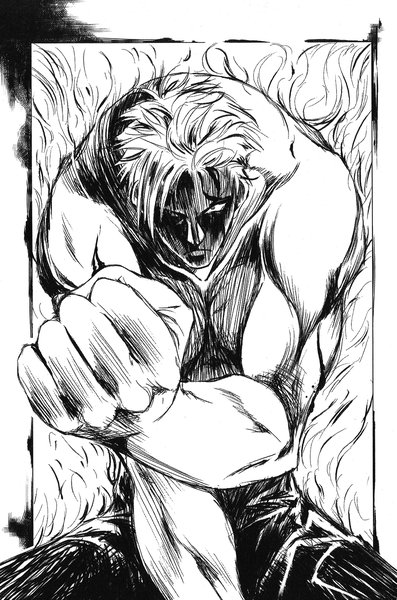
「ウオオオオオオ！」
警官の口からすさまじい咆哮が飛び出す。彼は雄一の頭をがっちりと両手ではさみこんだ。そして、途方もない力で締めつけてきた。
「うっ」
雄一の頭蓋骨がみりみりと音を立てる。いったん殴るのをやめて、大男の手を指から引きはがしにかかろうとした──が、ぴくりとも動かない。逆に締めつける力が増した。
ぐらりと天地が傾き、意識が遠のいた。
（倒れなかったらどうするの）
突然、奇妙にくっきりと裕生の声が聞こえた。
（......そうしたらまたボコる・ボコる・ボコる）
雄一はかっと大きく目を見開いた。そして、前に倍する速さで男の腹部に突きを叩きこみ始めた。一瞬、大男の力が緩んだが、すぐに前よりも強く雄一の頭を圧迫し始める。
「オオオオオオオ！」
雄一の口からも絶叫が洩れた。耳鳴りが聞こえ、世界がぐにゃりとゆがんだが、なおも拳の回転を上げる。やがて周囲からゆっくりと視界そのものが閉じていった。視界が空白の中に浮かぶ小さな穴にまで縮んだ時、ふっと頭を締めつけていたものが消えた。
ふと我に返ると、雄一は肩で息をしながら、壁にもたれるように倒れている大男を見下ろしていた。まだ目を開けたままで、口元はだらしなく開いている。
「......勝ったのか」
しばらくは信じられなかった。
今すぐこの場に倒れこみたいところだったが、まだやるべきことが山ほどある。
雄一は傷の痛みに顔をしかめながら、警官の持ち物を探った。この際、なにか使えるものがあったら持っていってしまおうと思った。まず雄一は手錠と手錠の鍵をズボンのポケットに入れ、次に拳銃のホルスターに触れた。銃は使えないし使いたくもないが、一応没収しておくに越したことはないと思った。
「......ん？」
腰についたホルスターは空だった。と、いうことは他の誰かが中身を持っていることになる。
雄一は立ち上がった。今さらながらさっきの銃声が気になっていた。弟たちが無事に逃げることができたのか、今すぐ確かめなければならない。
彼が踵を返そうとした時、倒れている警官の震えが大きくなった。
さんざん雄一が殴りつけた胃のあたりが激しく蠕動しているように見える。不意にばたりと彼は横向きに倒れて、胃の中のものを全て吐き出し始めた。
それと同時に、ぷくりと男の喉が膨れた。
「......なんだ？」
その膨らみの部分は徐々に男の口の方へせり上がってくる。胃の中にあった大きな塊が、ゆっくりと食道を通って吐き出されようとしているらしい。
やがて、男の口が大きく開いて、巨大な赤い物体がぬるりと外へ滑り出てきた。
「うおっ」
さすがの雄一も飛び上がりそうになった。それはぐったりとして動かない赤い幼虫だった。
（こいつがカゲヌシ、か）
明らかにこの世界の生き物ではない。今、目の前にあるものは常識を超えた存在であり、本来は人が触れるべきではないもののはずだ。
（もう後戻りはできねえな）
知らなかった頃には戻れない。しかし、恐ろしくはなかった。裕生たちはすでに自分より先にここに足を踏み入れている。むしろ、知るのが遅すぎたぐらいだと思った。
「......よろしくな、バケモン」
雄一は赤のリグルを無造作につかむと、ゆっくりと立ち上がった。
４
「葉！」
自分にのしかかるように倒れてくる葉の体を、裕生は膝を付きながら受け止めた。
慌てて彼女の背中を覗きこむと、ブラウスの右肩のあたりに赤黒い染みが広がりつつあった。裕生はその傷をポケットに入っていたハンカチで押さえる。しかし、溢れ続ける血は一向に止まる気配がなかった。
「くそ......」
裕生のつぶやきを聞きつけたように、葉がうっすらと目を開いた。
「......大丈夫だから」
大丈夫なはずがない。裕生は唇を噛みしめた。
「喋らない方がいいよ」
と、彼は言った。
（ぼくをかばってくれたんだ）
裕生はぎゅっと葉の体を抱きしめた。血を失っているせいか、少しずつ体温が下がっているようだった。
「......ちっ」
不意に舌打ちが聞こえ、裕生は顔を上げた。千晶が忌々しげな目で天井を見上げている──いや、天井よりもずっと上を見ているかのようだった。
「たかが人間の与えたショックで活動を停止するなんて」
「......え？」
一体なにを言っているのか、裕生は分からなかった。
それから、彼女は銃口を再び葉に向けた。
「その子を外へ連れていきなさい」
「......なんのために」
「いいから早くしなさい。この子の頭に二発目を撃ちこまれたくなかったら」
裕生は黙って葉を抱き上げる。軽い体だった。青ざめた顔の葉が恥ずかしそうに目を伏せる。そして裕生の袖のあたりを力なく掴んだ。
葉を抱いたまま裕生は外へ出て、団地の階段を降りた。建物の前の道路に出ると、青のリグルに操られた例の警官が立っていた。
「お前たちがなにをしても無駄だと言っただろう？」
警官──青のリグルは薄笑いを浮かべて言った。
「そこへ置け」
裕生は地面に膝をついたが、葉の体を地面に下ろそうとはしなかった。自分たちの出てきたドアからここまで、点々と血のしずくが落ちているのが見えた。
（早く病院へ行かないと）
気が付くと裕生たちのすぐそばに、杖を突いた千晶が立っていた。さっきと同じように裕生たちに銃口を向けているが、視線は団地の階段に向けられている。どうやら四階の藤牧家の玄関を見ているようだった。
（なんだろう）
と、思った時、藤牧家の壊れたドアが開いた──室内から上半身裸の雄一が姿を見せる。遠目から見ても体中に無数のすり傷や紫色のあざがある。まるで膨らませたように、顔のあちこちが腫れ上がっていた。
（兄さん......）
裕生は肝を冷やした。数年前、ケンカに明け暮れていた頃もここまで傷だらけになったことはない。あまりにもひどい姿で、今度は雄一に赤のリグルが乗り移ったのかもしれないと思ったほどだった。
「......え？」
しかし、雄一がぶら下げているものを見る限りでは、それは全くの勘違いだった。雄一は巨大な赤い幼虫を手にしている。それは雄一の手の中でぴくりとも動かない。
（か、勝ったんだ......）
さっき千晶が雛咲家の居間でつぶやいた、奇妙な言葉の意味がようやく呑みこめた。赤のリグルが雄一に倒されたことを察知したのだろう。
雄一は足を引きずるようにして、ゆっくりと階段を降りてくる。裕生たちのいる道路が薄暗いせいか、兄はまだこちらに気づいていない。三階へ続く階段の踊り場を曲がりかけた時、裕生のそばにいた千晶が叫んだ。
「そこで止まりなさい、藤牧雄一！」
雄一は言われたように足を止めて、コンクリートの柵越しに身を乗り出して裕生たちを見た。どうやら、裕生に抱きかかえられている葉にも気づいたようだった。
「なにしやがったテメエら！」
と、赤のリグルを振り回しながら叫んだ。
「動けなくしただけよ、それより」
千晶も大声を張り上げる。
「リグルを放しなさい」
「うちの弟たちにこれ以上なんかしやがったら、この気を失ってる虫にこいつを使うぞ」
雄一はポケットから「黒曜」の瓶を出して千晶に見せた。
一瞬、裕生はなぜか千晶が口元に笑みを浮かべたような気がした。
「お前の脅しなんか効かないわ」
突然、千晶は銃の引き金を引いた。裕生は目を閉じて葉の体に覆いかぶさった──銃声があたりにこだまする。
ゆっくりと目を開けると、彼のすぐ足元の地面から煙が上がっていた。
「ざけんな！ このアマ！」
雄一の怒声が降ってくる。彼は瓶の栓を抜くと、赤のリグルに中の液体をかけた。幼虫の体から煙が立ちのぼり、同時にびくっと痙攣を起こした。どうやら、多少の被害は受けつつも目を覚ましたようだった。
（......え？）
千晶の笑みがさらに大きくなった。
裕生ははっとした──今の発砲はただの挑発だ。
「兄さん、虫を捨てて！」
と、裕生が叫んだ。人間に潜りこんでいないリグルは電撃を使える。ここで兄が意識を失えば、赤のリグルの次の「乗り物」にさせられてしまう。
そして、ほんの数秒のうちにさまざまなことが起きた。
裕生の言葉に反応した雄一が、踊り場からリグルを道路に投げた。彼の手からリグルが放たれた瞬間、カゲヌシの体からばちっと青い火花が散った。
「うわっ！」
雄一が手を押さえながら背後によろける──すでに手を離した後だったせいか、大した怪我ではなさそうだった。赤のリグルは千晶のすぐそばの地面に落ちてきた。
ほっとした裕生のこめかみに、まだ生温かい銃口が押しつけられた。千晶が殺意をたたえた目で裕生をにらんでいた。
「お前にはうんざりしたわ」
銃口越しに彼女の手の微妙な動きが伝わってくる──撃たれる、と思った瞬間、裕生の腕の中で葉がつぶやいた。
「......黒の彼方」
二人の真下の地面から、一瞬のうちに黒犬が浮かび上がってきた。裕生は葉を抱いたまま犬の背に乗るような形になる。同時に葉の体が動き、片腕を裕生の首に、もう片腕を犬の首に巻きつけた。
「黒の彼方」は地面を蹴った。拳銃を構えていた千晶の杖を、前足で払ってバランスを崩させた。そしてそのまま十メートルほど走って距離を置く。
「やめて！」
背後で千晶の叫ぶ声が聞こえる──黒犬の口元を見た裕生は、彼女の悲鳴の意味を悟った。「黒の彼方」は赤のリグルをくわえている。走りながら拾い上げたに違いない。
くるりと「黒の彼方」が一八〇度向きを変えた。振り落とされそうになった裕生は慌てて首にしがみついた。
「続けて電撃の能力を使うことはできないようですね」
葉の口から「黒の彼方」の言葉が発せられる。彼女はぎこちないしぐさで犬の背から降りた。急に動いたせいか、肩の傷からの出血はさらにひどくなっていた。
犬の口の中でリグルはまだ震えていた。
「契約者にこのような傷を負わせた者を、決して許さない」
淡々とした声で「黒の彼方」は言った。激怒した時、むしろ静かにこのカゲヌシは語るくせがある。以前、裕生も同じような憎しみの言葉を投げかけられたことがあった。
「わたしは決して許さない」
黒犬の顎に力がこもる。赤のリグルは「黒の彼方」の口の中でばらばらにかみ砕かれていった。
「あ......」
千晶が絶望的な声を上げながら拳銃を構える。「黒の彼方」が裕生と葉をかばうように二人の前に立った。
「ううううるるるるる！」
その時、どこかから突拍子もない大声が聞こえた。
（......この声）
千晶の背後にある暗闇から、黄色い塊がゆらりと現れた。団地の公園のある方角だった。近づいてくるにつれて、それが黄色いレインコートだと分かる。マスクと大きなゴーグルで完全に覆われた顔。
「......レインメイカー」
と、裕生はつぶやいた。
５
裕生以外の誰もが凍りついていた。
彼にとってはさほど驚くような相手ではない。この時間になるとよく出没するし、つい数日前もちょうどこの場所で見かけている。ただ、裕生以外の者がいる時に現れたのはこれが初めてだった。
「レインメイカー？ あれが？」
葉──「黒の彼方」が不審げに目を細めている。
「レインメイカーを知ってるのか？」
裕生は「黒の彼方」に問いかけた。
「わたしは知っています......しかし、あれは奇妙だ」
「奇妙？」
相手は答えなかった。ふと、裕生はレインメイカーについて千晶と話した時のことを思い出した。千晶が知っているレインメイカーと、裕生の知っているあの男は、全く異なっているようだった。
「『黒曜』を手に入れたのはレインメイカーからですか？」
と、「黒の彼方」が尋ねる。今度は裕生が沈黙する番だった。
「人間に『黒曜』を与えることは、今までにはなかった」
千晶も同じことを言っている。どうやら本当のことらしいと裕生は思った。こんな風に困惑している「黒の彼方」を見るのはこれが初めてだった。
しかし、裕生たちよりも大きく反応したのは千晶だった。振り返った彼女は相手を認めると、裕生たちを忘れたように杖を突いて近づいていった。
びくっとレインメイカーが立ち止まる。千晶の接近に戸惑っているようだった。きょろきょろと落ち着きなくあたりを見回している。結局、逃げることに決めたらしい。くるりと向きを変えて走り出そうとした。
その瞬間、千晶が叫んだ──。
「お父さん！」
レインメイカーはびくっと足を止めた。
「お父さんでしょう？」
ゆっくりと男は振り返る。
千晶はレインメイカーの前で立ち止まった。そして、杖を持っていない方の左手を伸ばし、フードの中に手を入れる。男は落ち着きなく体を揺らしているが、その場を動こうとはしなかった。彼女はマスクを外し、そしてゴーグルを首まで下ろした。
「あっ......」
裕生は思わず声を上げた。髪も髭も長く伸びて痩せていたが、その顔には裕生も見覚えがあった。佐貫が持っていたあの写真の男。
船瀬智和だった。
（レインメイカーの契約者が、本物の船瀬だったんだ）
四年前の船瀬の失踪も、レインメイカーに取り憑かれたからに違いない。千晶は「父との静かな生活」が望みだと言っていた。加賀見へ来たのも、おそらく父親を捜し出すためだったのかもしれない。
「お父さんを捜すために、ずいぶん苦労したのよ......まさか、自分から来てくれるなんて」
彼女は低く笑いながら何故か一歩下がった。
「......手間が省けたわ」
不意に銃声が轟く。右の太ももを押さえながら船瀬が地面にごろりと転がった。拳銃を構えているのは千晶だった。裕生は呆然と目の前の光景を見守っていた。
（父親を......撃った）
「ううううあああああ！」
レインメイカーが子供のような悲鳴を上げる。青のリグルに操られている警官が、いつのまにか千晶たちのそばに立っていた。
「まずい！」
黒犬が突然レインメイカーへと一直線に走り出す。その時にはレインメイカーの体に馬乗りになった警官が、口から青のリグルを吐き出しているところだった。それは黄色いフードに囲まれた顔に落ちて、するりと男の体内へと侵入していく。
黒犬があと一歩まで迫った時には、すでに幼虫はレインメイカーの体の中へ姿を消していた。急停止した「黒の彼方」はレインメイカーの体から飛びのいた。
やがて、レインメイカーは自分の上に乗っていた警官の体を払い落とした。そして、ゆっくりと体を起こしていく。目つきも体の動きも今までとはまるで違う──そして、やはり右手が震えている。操っているのは青のリグルだった。
「藤牧裕生」
と、葉がかすれた声で言った。
「あのリグルの契約者を殺しなさい」
「え？」
「殺すべきです、今すぐ」
「そんなことできるわけないだろ！」
「人類が滅ぶかもしれませんよ」
裕生は絶句した。
「あの娘の目的はレインメイカーの契約者の体に、自分のカゲヌシを潜りこませて支配すること。そうすれば、階位から外れた特殊なカゲヌシを手に入れることができます」
裕生は黙って話を聞いていた──確かに契約者を押さえられたら、カゲヌシは言うことを聞かざるを得ない。
「このままでは『最初と最後のカゲヌシ』があの娘のものになってしまいます。わたしは契約で人間を殺せない」
その呼び名は昼間もリグルから耳にしていた。しかし──。
「なんで人間が滅ぶんだよ？」
「レインメイカーはどの世界にも最初に現れるカゲヌシです。他のカゲヌシが餌となる人間を絶滅させることなく、きちんと管理しているか監視しています。そして、そのバランスがカゲヌシの側に崩れた時、『同族食い』がレインメイカーの判断でこの世界に呼ばれる。そして、カゲヌシを『間引き』します」
「な......」
それが本当なら、レインメイカーは単なる人間の味方というわけではない。「バランス」が取れていれば人間が死んでも放っておくということになる。
「レインメイカーによる適切な管理がなければ、カゲヌシたちは本能のままに人間を食い殺すでしょう。階位の中にいるカゲヌシの大半は生態系など配慮しません。絶滅はしなくとも、確実に人間社会は崩壊するでしょうね」
裕生は並んで立っている船瀬親子を見た──それぞれがカゲヌシに取り憑かれている親子だった。人間がいなくなればなるほど、確かに「父との静かな生活」が送れるはずだ。
（そんな......）
それでも千晶を殺すわけにはいかない。どうにかしてリグルを引きずり出して、「黒の彼方」をぶつける以外に方法はない。しかし、目的だったレインメイカーを手に入れた今、少なくとも青のリグルは船瀬の中から出てこないだろう。
「レインメイカーはどんな能力を持ってるんだ？」
「それは......」
「黒の彼方」は言いよどんだ。
「なんの相談をしているの、お前たちは」
勝ち誇った声で千晶が言い、裕生に向かって銃口を向けた。
「もうお前は要らないわ、藤牧裕生......レインメイカーが手に入ったから」
不意に裕生はこのままでは撃たれると悟った。彼はなんの遮蔽物もない道の真ん中にいる。契約で人間を守るはずの「黒の彼方」は離れた位置にいた。葉が裕生の前に立とうとしたが、彼はそれを押しのけた。これ以上葉に庇われるわけにはいかない。
黒犬のカゲヌシが全速力で裕生たちの方へ戻ってくる。
（間に合わないな）
と、ぼんやりと思った瞬間、
「銃を捨てろ！」
誰かの大声が聞こえた。思わず裕生があたりを見回すと、さっきまで青のリグルに操られていた警官──菊地が片膝を立てて銃を千晶に向けていた。
雄一の言うとおり、立派な警察官だと裕生は思った。
操られている時の記憶があるのかないのか分からないが、この異常な状況で解放されてすぐに職務を全うしようとしている。
千晶は舌打ちすると、銃口の向きを警官の方へ変えた。
「黙ったら？」
「捨てるんだ！」
と、菊地は叫んだ。千晶の顔がゆがんだ。
「うるさい」
千晶は発砲した──それにつられるように、菊地も二度引き金を引いた。何発もの銃声が交差するように響き渡った。
静寂が訪れる。
裕生は息を詰めて二人を見守った。
──やがて、ゆっくりと千晶が仰向けに倒れていった。
第五章 「旅の終わり」
１
病院の待合室の椅子に裕生は腰かけている。
夜の十一時近くになっていた。照明はほとんど消えていて、緑色の非常口の明かりだけが床に反射している。
船瀬千晶は即死だった。菊地の撃った弾丸は彼女の胸と喉を貫通していた。裕生たちは彼女を介抱しながら救急車を待ったが、すでに意識はなかった。救急車が到着した時には心臓も止まっていた。
菊地の方も千晶の撃った弾丸で肩を射抜かれていた。菊地と藤牧家で倒れている警官が最初の救急車に乗ったところで、初めて裕生たちはレインメイカーがいないことに気づいた。足に重傷を負っているはずだが、いつのまにか姿を消してしまったらしい。
（......これで終わり、だよな）
あまりに呆気ない幕切れのせいかまだ実感はないが、契約者である千晶が死んだ今、カゲヌシも消失したはずだ。レインメイカーの体内にいた青のリグルも消えているだろう。もう一匹いたという白のリグルは、ついに目にすることなく終わってしまった。
裕生は葉や雄一と一緒に救急車に乗って、市民病院までやってきた。葉はすぐに弾丸の摘出手術を受け、居間は病室で眠っている。雄一は傷の手当のついでに一晩様子見で入院することになった。
終わってみれば今までになく皆が傷ついた事件だった。葉も雄一も佐貫もみちるも、入院することになってしまった。無事なのは裕生一人だった。
（......みんながぼくの代わりになってくれたんだ）
どれもこれも裕生が負っていたかもしれない怪我ばかりだった。
「......まだ帰ってなかったんだ。なにしてるの？」
顔を上げると、青いパジャマ姿のみちるが立っていた。
「あ、うん。父さんが今このへんで泊まれるホテルを探してるとこ。見つかったら迎えに来るって」
加賀見団地の裕生たちの部屋はめちゃめちゃに壊れていて、泊まることはできなくなっていた。仕方なく父の吾郎は外に泊まることを決めたのだった。
「歩き回って大丈夫？」
と、裕生は尋ねた。
「もう全然。ちょっと寝たら元気になったよ。『黒曜』も人間には猛毒ってわけじゃないみたいだね。すごくまずかったけど」
ふと、みちるは言葉を切った。
「隣、座っていい？」
「え、あ、うん。どうぞ」
別に聞くことないのに、と裕生は思った。彼女は裕生の隣の椅子にすとんと腰を下ろす。ストレートの長い髪がふわっと揺れて、かすかにいい香りがした。
「なにしてたの。こんな夜中に」
と、裕生は尋ねた。
「眠れなかったから、ちょっと考えごとしてたの」
沈黙が流れた。どこか別の階から、かすかに誰かの足音が聞こえる。看護師が巡回しているらしい。
「あの千晶って子、ほんとに死んだんだよね？」
不意にみちるは尋ねた。裕生は無言でうなずいた。
「結局、あの子はなにがしたかったんだろうね。レインメイカーが自分のお父さんだったんでしょ？」
「うん......でも、父親に会うのが目的じゃなくて、多分レインメイカーそのものを支配したかったんだと思う。でも、それがなんのためだったのか、そのへんがよく分からないんだよ。船瀬から話が聞けるわけじゃないし」
レインメイカーがどこへ行ったのかは分かっていない。かなりの深手を負っていたはずで、そのことを考えると少し気がかりだった。
「もしあの子が生きてたら、あたしもちょっと聞きたいことがあったかも......あたしの考えてることとか、色々見透かされてる気がして」
「......え？」
裕生が聞き返すと、みちるは慌てたように首を振った。
「なんでもない。まあ、でももうしょうがないよね」
その時、裕生はみちるの長い髪の中に、なにか奇妙なものが混じっていることに気づいた。
「ん？ ごめん。ちょっといい？」
返事を待たずに手を伸ばして、彼女の髪をかき分けた──みちるは体を固くしている。
「......これなに？」
裕生は一房の髪の毛をつまみながら言う。
その細い一房だけが真っ白になってしまっていた。
「あ、これ？ なんかよく分かんないんだけど、ストレスが原因みたい。多分、すごく痛かったせいだと思うんだけど」
裕生は心底驚いた。強い恐怖を味わった人が一晩で髪が真っ白になった、というようなものかもしれない。そんな風になってしまうのは、よほど恐ろしい経験だったはずだ。
彼は黙ってその髪の毛を撫で始めた。色が違うだけで、他のところと手触りはなにも変わらない。
「退院したら染めようかなって思ってるんだけどね。なんかヘンなアクセントになっちゃってるし......放っとけばどうせまた元通りになると思うんだけど......でも......」
なおも撫で続けていると、みちるの言葉がだんだん重くなっていった。顔もうつむきかげんになっている。
「藤牧......あの、あんまり触らないで。なんか照れくさい」
「あ、ご、ごめん」
裕生は慌てて手を放した。考えこんでいるうちに触っていることをつい忘れてしまっていた。お互いに話題を探しているような間が空いた。
「雛咲さんの手術、大丈夫だった？」
不意にみちるが言った。
「うん......命には全然別状ないって。出血がちょっと多かっただけで」
「よかった」
みちるはにっこり笑った。
その時、玄関前のロータリーに、一台のタクシーが入ってくるのが見えた。
「あ、多分父さんだ......そろそろ行くね」
立ち上がりながら裕生は言った。この時間に外へ出るには、廊下を少し行ったところにある夜間出入り口を使わなければならない。
「うん......おやすみなさい」
と、みちるは言った。
夜間出入り口から外へ出てからも裕生はまだ考えていた。自分でもうまく説明できないが、さっきみちるの髪を見た時、妙に引っかかるものを感じた。
なにか決定的なことを見逃しているような気がする。
閉まった自動ドアの前にタクシーが停まっている。裕生は小走りに近づいていった。
麻のスーツ姿の吾郎が、顎に手を当てながらさかんに首をひねっている。
「どうしたの？」
と、裕生は声をかけた。
「いや、なんでもない。まったく誰だか知らんが、美観を損ねるようなことをしてはいかんな」
言いながらタクシーへと向かった。裕生もその後を追おうとして、ふと足を止めた。
吾郎は考えごとをしていたのではなく、自動ドアのすぐ脇の壁を眺めていたような気がした。
壁を見た裕生は凍りついた。
いつからそれがそこにあったのかは分からない。何度もここを通りすぎていたが、気づいたのは初めてだった。
壁にはどことなく三枚羽のプロペラを思わせる図形が書かれていた。三つの小さな正三角形が、頂点の一つで互いに接している。
カゲヌシのサインだった。
２
一夜明けた次の日。
まどろみの中で、葉は両親がいなくなった日の夢を見ていた。それが夢だと自分でも分かっている。前に見た映画をもう一度見ているような感覚だった。
まだ小学生の頃の自分が団地の中を走っていく。公園のそばを通って、階段を上がって、部屋の中に飛びこむ。そしてそこからまた出ていく寸前に父に出会う。
「実は父さんたち、ちょっと出かけなきゃいけなくなった」
その話を上の空で聞きながら、ちらちらと時計を盗み見ている。他に気がかりなことがあるからだ。
「一人でここで父さんたちの帰りを待てるか？」
その言葉の意味も深く考えようとしない。きちんと聞いていれば、少なくともそれがどれぐらい大事な言葉かぐらいは分かったはずなのに。彼女はなにも分からずに部屋を飛び出していく。頭の中にあるのは──。
（裕生ちゃん）
目を開けると葉は病院のベッドの中にいた。枕元の時計を見ると、もう昼近い時間だった。ちゃんと朝目が覚めたのだが、朝食の後にまた眠ってしまったらしい。
病室の窓の前に患者衣を着た父が立っていた。カーテンの隙間からぼんやりと外を見ている。
「......お父さん」
葉の呼びかけに清史は振り向いた。
「怪我をしたって聞いたからね。ちょっと無理をして見舞いに来たんだ」
清史は足を引きずるようにベッドに近づくと、椅子に腰かけた。そして、葉に笑いかける。
「裕生くんの夢を見ていたのか？」
「え......」
「寝言で名前を呼んでいたよ」
葉の顔が恥ずかしさで赤くなる。それから、首を横に振った。
「お父さんたちがいなくなった日の夢を見てた」
わずかに清史の表情が動く──しかし、なにも言わなかった。
「わたし、秘密にしてたことがあるの」
と、葉は言った。
「秘密？」
清史は訝しげに目を瞬く。葉はこくりとうなずいた。
「一人でずっと待ってたのは、お父さんに言われたからだけじゃない」
葉は深く息を吸って、固い扉を開けるようにつぶやいた。
「罰だったの」
「罰？」
清史は驚いた様子だった。
「あの日、わたしは裕生ちゃんのお見舞いに行くつもりだった。そのことしか考えてなかった。だから、お父さんの話もちゃんと聞いてなかったの。少しでも早く裕生ちゃんのところに行きたかったから」
体の奥から涙がこみ上げてきた。自分を見守っている父の顔がゆがんでいく。
「だから、お父さんたちが帰ってこないのは、神様がわたしに罰を与えたからって思ってた。お父さんたちよりも裕生ちゃんを選んだから。罰だったから、ずっとあの部屋に一人でいたの。わたしはずっと一人だって思うようにしてた。でも」
突然、葉はこらえきれなくなって両手で顔を覆った。もうそんな頃の自分に戻ることはできない。一人ではない自分がどういうものか、思い出してしまったから。今はもう少しでも裕生と長く一緒にいることを望んでいる。もうその気持ちを抑えることはできなかった。
「葉は裕生くんが好きなんだね。昔からそうだったが」
静かな声で清史は言った。
「さっき父さんの病室に裕生くんが来たよ。あとでここにも来ると思うが......コーヒーを飲みながら少し話したんだが、彼は葉をあの部屋に一人で住まわせていたことをとても悔やんでいる。自分のせいでお前を一人にしてしまったって」
葉は顔を隠したまま首を振った──今思えば、裕生を遠ざけたのは葉の方だった。それも罰のひとつと考えていた気がする。
清史の大きな手が葉の頭に触れ、いとおしむようにゆっくりと撫で始めた。ふと、同じようなことが昔にもあったことを思い出した。父と二人で母が帰ってくるのを団地の居間で待ったことがある。テーブルに顔を伏せて眠りかけていた葉の頭を、父がこんな風に撫でてくれた。
あれも両親がいなくなる直前だった気がする。
「秘密なら父さんにもある」
顔を上げると、父は葉を静かに見ていた。涙を拭いながら葉は父の言葉を待った。
何度もためらってから、ようやく沈んだ声で清史は言った。
「父さんと母さんはうまくいっていなかった」
「え......」
（どうしてお母さんは一緒じゃないんだろう）
奇妙にくっきりとその思いが蘇った。やっぱり、と葉は心の中でつぶやいた。
「はっきりした理由があるわけじゃない。ただ、父さんたちが姿を消したあの頃、母さんはもうあの部屋に住みたがっていなかった。母さんは父さんと一緒にいるだけで苦痛になっていたんだ。もし今、母さんが見つかったとしても、団地に戻りたがるとは限らないと思う」
葉は黙っていた。どう言えばいいのか彼女には分からなかった。
「退院したら、あの団地でまた父さんと二人で暮らすか？」
葉は顔を上げた。父と二人で暮らす──それがどういうことなのか、彼女にはうまく想像できなかった。まっさきに考えたのは裕生のことだった。まだ二ヶ月しか暮らしていないのに、退院した後に自分が帰るのは裕生のいるあの部屋しかない気がした。
「藤牧さんのところに住みたいか？」
自分の心を言い当てられたようで、葉ははっと胸を衝かれた。
沈黙が流れた。
「......もう少し父さんも考えよう。今、無理に結論を出すこともない」
清史は手を伸ばして、もう一度娘の頭を撫でた。
３
その日の午後、裕生は赤く錆びた鉄の門をくぐって、敷地の中へ入った。
三階建てのコンクリートの建物が目の前にある。ガラスはほとんど割られており、ところどころにスプレーの落書きが見える。
ここは「幽霊病院」と言われている廃業した病院である。廃墟と化したこの場所に、裕生は以前にも来たことがある。ここの屋上で裕生はヒトリムシというカゲヌシに遭遇していた。
背中のバッグが引っかからないように、玄関の壊れかけたドアをくぐって病院のロビーに入る。かつてはあったはずの備品や調度品のたぐいは全てなくなっていた。床にはコンクリートやガラスのかけらが散乱している。
裕生はロビーを慎重に通り抜け、薄暗い廊下へと足を踏み入れた。左右に並んでいる部屋のドアはすべて撤去されている。天井のパネルもところどころがはがれ落ちて、配管がむき出しになっていた。
今日、裕生は学校を休んでいる。午前中に病院の見舞いを済ませた後で、本当は行かなければならなかったのだが、それよりも確かめなければならないことがあった。病院の佐貫たちには、「怪我をしたレインメイカーが心配だから捜しにいく」と言ってある。心当たりのある場所と言えばここぐらいで、そのことも佐貫たちには言ってあった。
ふと、廊下の一番端で裕生は立ち止まった。足元の床に赤く丸い染みがいくつか落ちている。天井近くを見上げると、「手術室」というプレートがはまっていた。
裕生は中を覗きこんだ。タイルに覆われた壁には窓がなく、空っぽの部屋はほとんど暗闇に近い状態だった。彼は目を凝らして奥の方を覗きこむ──。
「あっ」
と、裕生はつぶやいた。黄色いレインコートを着た男が、隅の方で仰向けに倒れていた。もっとよく見ると、左足の下に赤い血だまりのようなものができている。
裕生は男に駆け寄ると背中のバッグを下ろした。そして、バッグから透明なビニール袋を取り出す。その中にはガーゼや消毒液や抗生物質などが入っている。注射器まで用意してあった。
もしレインメイカー──船瀬の怪我がひどく、病院へ行かせるのが難しいようなら、せめて簡単な治療を施そうと思ったのだった。彼はレインコートの長い裾をまくる。ズボンの左足が赤く染まっている。目を近づけると、膝の少し上あたりに小さな穴が開いていた。どうやら、ここに弾丸を撃ちこまれたらしい。
裕生は船瀬智和の顔を確かめる。最後に見た時と同じように、フードを深くかぶってはいるが、マスクもゴーグルもしていない。
見たところ呼吸は落ち着いている。とにかく、一度フードを取ろうと手をかけた時、船瀬がかっと目を開いた。
（えっ）
レインメイカーの左手が伸びてきて、裕生の喉笛をつかんだ。彼は体を起こしながら、裕生の体をタイルの壁に強くぶつけた。衝撃で彼の背中に痛みが走る。
「なにを......」
かすれた声で裕生は言った。
「お前はわたしの手で殺したかったんだ」
突然、流暢に船瀬は言う。裕生は大きく目を見開いた。
（レインメイカーじゃない）
声そのものは違っているが、嘲るようなその調子には聞き覚えがあった。裕生は相手の右手を見下ろす。だらりとぶらさがったまま、右手はかすかに痙攣していた。
「......青のリグル」
と、裕生はつぶやいた。この男の体内には青のリグルが宿ったままなのだ。船瀬はにやりと笑った。リグルに操られた左手にぐっと力がこもる。ますます裕生の首に指が食いこんだ。裕生は相手の指を引きはがそうとしたが、ぴくりとも動かなかった。
「わたしが生きていて驚いたか？」
と、相手は言った。
「もう邪魔は入らない。お前だけは必ず殺す」
裕生の気が遠くなり始めた。ごうごうと耳鳴りが聞こえ、視界がゆっくりと暗くなりかけている。彼は手探りで医薬品の詰まったビニール袋を開いた。そして、注射器の一本を取り出すと、震える手で針のキャップを外す。
リグルが裕生を侮っているうちに、急がなければならなかった。
彼は注射器の外筒を逆手でしっかりと握りしめ──相手の肩にぶすりと突き刺した。
「それがどうした？」
なおも力をこめながら船瀬はせせら笑った。その声はひどく遠くから聞こえる。あとほんの数秒で完全に意識を失うに違いない。
「そんな小さな針で......」
裕生は最後の力を振り絞って、親指で注射器のピストンを押しこんだ。
その瞬間、相手の動きがぴたりと止まった。左手の戒めが外れ、裕生は喉を押さえながら相手の脇の下をくぐるように距離を置いた。
レインメイカーの体ががくがくと震えはじめる。
「なにを......した......」
裕生は黙って相手の様子を見守っている。がくりと船瀬は床に両手を突く。その腹部が激しく動いているのが、レインコート越しにも分かった。
「『黒曜』をお前の体に流しこんだ」
と、裕生がつぶれた声で答えた。喋ると喉がひりひり痛んだ。
「レインメイカーの体から出てこい」
「どうして......」
青のリグルが呻くように言った。
「お前が生きてるかもしれないってことは、昨日の晩から気が付いてた。万が一の時のために、注射器に黒曜を入れておいたんだ」
青のリグルが生きているかどうか、裕生にも確信はなかった。ただ、裕生がレインメイカーを捜しにこの病院へ現れることを知っていたら、おそらくはここで裕生を殺そうと待ち構えるはずだと考えたのだった。
船瀬の腹の中に入っているカゲヌシが、うねりながら口へと移動し始めた──やがて、吐瀉物にまみれた大きな青い幼虫が、ぴしゃりと床に吐き出された。
その瞬間を裕生は見逃さなかった。バッグから以前使ったカゲヌシ用の武器を取り出す。それは五十センチほどの鉄パイプで、尖った先端を押しつけると内部のバネの力でカゲヌシの体内に「黒曜」が流しこまれる仕組みになっていた。
裕生はその武器を両手に構えて、しゃがみこみながら青い表皮にずぶりと突き刺した。スプリングが作動して、幼虫の体内に一気に「黒曜」が流し込まれる。青のリグルは悲鳴の代わりに激しく身もだえし──やがて、静かになった。
裕生は荒い息をしながら立ち上がる。
（リグルが生きていた）
それは契約者もまだ生きていることを意味している。千晶ではない別の契約者がどこかにいるのだ。
赤と青のリグルはもう死んだが、千晶の言葉が正しければ、最強の「白のリグル」がまだ残っているはずだ。裕生はなにもない室内で、息を詰めて立ちつくしていた。
リグルも契約者もまだ生きている、という裕生の考えが正しければ、ここへ彼らは現れるはずだ──彼を消すために。
その時、ロビーの方から足音が聞こえてきた。裕生は思わず歯を食いしばった。彼にとっては当たって欲しくない予想だった。
裕生はバッグの中の携帯をつかんで、一度だけコールした。それから重い足取りで廊下へ出る。こちらへ向かって歩いてくる人物を見て、裕生は一瞬唇を震わせた。
そうであって欲しくないと心から願っていた人物だった。せめて他の誰かであって欲しかった。
「罠を仕掛けたつもりが、おびき出されたようだ」
やってきたのは葉父親──雛咲清史だった。
「まさかこうもあっさりと露見するとはな」
今日、病院で会った時とは別人のように清史は冷たい目をしていた。あの船瀬家で会った時に戻ったようだった。
「今、喋っているのはリグルなんだね」
と、裕生は言った。
「むろんだ。今、この男の精神はわたしの支配下にある」
裕生はポケットの中の携帯を意識した。
青のリグルを倒した後、コールした相手は葉だった。彼女はここから少し離れた場所で待機して、万が一の時に来ることになっていたのだ。できれば葉を巻きこみたくなかったが、リグルが本当に現れてしまった以上他に選択肢がなかった。
葉が来るまでもう少し時間がかかるだろう。それまで時間稼ぎをする必要がある。
「今日の午前中、病院でレインメイカーを捜す話をして回っていたのは、わたしたちに聞かせるためだったんだな」
裕生はうなずいた。最初に清史に世間話をしに行って、意味ありげに他の病室を回ればどこかで立ち聞きをするだろうと思ったのだ。
「いつからこの男を疑い始めた？」
と、清史──リグルが言った。
「昨日の晩、病院の玄関でサインを見た」
「理由はそれだけか？」
「......あとは、髪の毛」
と、裕生は言った。
「髪の毛？」
「船瀬千晶も、赤のリグルに操られていたあの『母親』も、髪の毛が白くなってた。リグルに乗っ取られるとそうなるみたいなのに、葉のお父さんだけがなんともなかった。それで変に思ったんだ。この人はなにか特別なんじゃないかって」
「当然だ。この男は契約者だ。わざわざわたしたちリグルが入りこんで操る必要はない」
「ぼくたちはずっと船瀬千晶が契約者だと思ってた。でもそうじゃなかった......あの子は白いリグルに操られてるだけだったんだな」
「そう。お前が話していたのはただの人形だ。本当の千晶は大人しい娘だった。少しあの雛咲葉に似ていたな」
清史──リグルは懐かしむような目をした。裕生の体が震え始めた。ずっと敵だと思っていたあの少女は、一番の犠牲者だったのだ。
「じゃあ、四年間もずっと白いリグルに操られてたって言うのか？」
「そうだ。四年前、わたしたちは、あの船瀬の娘を連れてこの町を出た。途中で必要な時には他の人間をわたしたちのパーティに加えたが」
裕生は歯を食いしばった。これが本当のことなんだ、と自分に必死に言い聞かせた。残酷な真実であっても、目を背けることはできない。
「どうしてそんなことになったんだよ」
かすれた声で裕生は言った。
「なんで葉のお父さんがカゲヌシなんかに......」
外から見れば、雛咲家にはなんの問題もないように見えた。清史がカゲヌシを呼ぶような「ねがい」を抱いているとは思えなかった。
「妻だよ」
と、リグルは答えた。
「この男の妻はあの家を出ていきたがっていた。この男と別れてね。どうか妻がここから出ていかないように......それが彼の『ねがい』だったんだ」
ふと、裕生の頭をおぞましい考えがよぎった。未だに葉の母親の消息は分からないままだ。もし、四年前にカゲヌシが清史の「ねがい」に応じたのだとしたら──。
「わたしたちが町を出たのは、レインメイカーを手に入れるためだった」
裕生の思いを中断させるように、清史がさらに語りかけてきた。
「船瀬千晶を連れ出したのはわたしだ。用心深いレインメイカーをおびき出すために。かつてのレインメイカーはまず人間やカゲヌシに隙を見せなかった。しかし、カゲヌシの契約を結ぶ前の船瀬は心から娘を愛していた。もし人間の自我がどこかに残っていたら、娘を使えば姿を見せるかもしれないと思ったんだ」
「じゃあ、彼女が死んだのは......」
「レインメイカーが手に入った時点で、千晶が死ぬように仕向けた。もう用済みだからな。この町では彼女に派手に動いてもらった。そうすれば彼女が全ての罪を背負ってくれ、レインメイカーはわたしたちのものになる」
裕生の目の前が一瞬真っ暗になった。あの銃撃戦が頭をよぎった──確かに、あの時千晶はまるで挑発するように警官に銃を向けていた。
「......利用するだけ利用して、殺したのか」
「どうせ、とっくの昔に千晶の自我は崩壊している。死んでいるのと変わりはしない」
清史──リグルはあっさり言った。
「リグル、お前は狂ってる」
と、裕生は震える声で言った。
「ぼくも葉も、お前を絶対に許さない」
葉の名前を出した瞬間、相手の顔に初めて困惑の色が浮かんだ──しかし、それはすぐに消えた。
「お前やあの古い娘がなにを考えていようが、わたしには関係がない」
と、リグルが言った。
「古い......娘？」
清史の顔に引きつったように笑みが浮かんだ。目の焦点は定まっていなかった。
「わたし......白いリグルこそこの男の新しい娘......白く、強く、美しい娘」
熱に浮かされたようなその言葉に、裕生はひるんだ。
清史は目を閉じると、やさしく呼びかけるようにその名を唱えた。
「リグル・リグル」
清史の足元の影から、純白の塊がゆっくりと湧き上がる。あの「赤」と「青」のリグルとは形が異なっていた。
目の前に現れたのは、白い蜘蛛のようなカゲヌシだった。大きく膨れた腹とこぢんまりした胸の部分があり、胸からは何本もの長い脚が伸びている。そして──。
「うわああああっ！」
裕生は悲鳴を上げた。顔だけが蜘蛛のそれではなかった。そこには人間の顔がついていた。しかも、その顔に彼は見覚えがある。幼い頃から何度も目にしてきた顔だった。
それも清史の記憶に合わせて、今から四年ほど前の顔になっていた。人形のように整ったかわいらしい少女。
それは雛咲葉の顔を持っていた。
その異様な蜘蛛──白のリグルは目を開ける。そして、裕生の顔を上目遣いに見て、嘲るように唇をねじまげた。
「こんにちは、裕生ちゃん」
４
ふと、白のリグルは病院の門のある方角を見た。
「古い娘が来たようね」
と、リグルが言った。
「呼んだのはお前でしょう？」
白いリグルが裕生に尋ねる。裕生は答えなかった。
「では、お前を人質に取ることにするわ」
次の瞬間、何の助走もなくぱっとリグルが跳躍し、裕生の胸に飛びついてきた。裕生はどさりとそこで尻餅をついた。この白のリグルは中型の犬ほどの大きさだった。単体のカゲヌシとしては小柄だが、今の跳躍を見ても身のこなしが軽い。今まで相手にしてきた赤や青のリグルとは次元の違うカゲヌシだった。
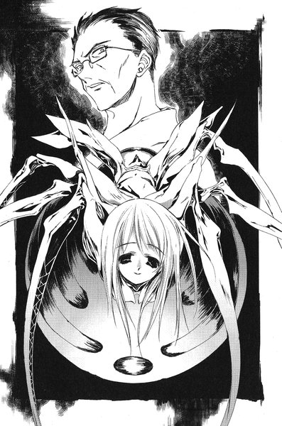
リグルの四本の脚が伸びて、裕生の口をこじ開ける。必死にこの虫を押し戻そうとしたが、確実にこのカゲヌシは裕生の口の中へ入ってきた。
目もくらむような苦痛が裕生の意識を一瞬にして洗い流し、同じ苦痛が彼の意識を回復させた。彼の顎はおぞましいほど大きく開き、そこへ拳ほどの大きさの少女の形をした頭が侵入しようとしている。このままでは気が狂うかもしれない、と思った時、
「うっ」
彼の口の中でリグルの呻き声が聞こえた。そして頭を抜いて外へ出ると、裕生の顔を蹴るように再び飛んだ。
裕生は背中を丸めて激しく咳こんだ。
「お前、あらかじめ『黒曜』を体の中に入れているわね」
リグルは苦々しげに言った。
「あの娘にも『黒曜』を飲ませてあるの？」
と、白い蜘蛛は裕生に尋ねた。
「だったらなんなんだよ？」
もちろん、葉にも自分と同じように飲んでもらっている。万が一、リグルに入りこまれないようにする処置だった。
「おそらく効き目はそう長く保たないけれど......その間はわたしと雛咲葉は一つになれないということね」
「一つに......？」
白いリグルはかさかさと床の上を動き、清史のそばへ戻った。
「あの古い娘はね」
と、リグルは言った。
「自分の父親が出ていった日も、そして今日も、父親よりもお前と一緒にいることを選んだの。だからわたしがあの子の体に入って、あの子の心の代わりをするの」
リグルの白い顔にうっとりとした笑みが浮かんだ。
「そうすれば、わたしと父さんは静かな生活を送ることができる」
（わたしと父の静かな生活）
裕生は吐き気とともにその言葉を思い出した。千晶がみちるに言った言葉だった。船瀬千晶と船瀬智和のことではなかったのだ。
（リグルとこの人のことだったんだ）
その時、清史たちの後ろから葉が現れた。スカートとブラウスに着替えてはいるが、左肩のあたりが包帯で盛り上がっているのがはっきり分かる。
「ようやく来たのね。わたしの体が」
自分にそっくりの顔を持つカゲヌシを見た瞬間、葉は青い顔で一歩後ずさった。できることなら裕生は彼女の目と耳をふさいでやりたかった。このおぞましいカゲヌシと接触させたくなかった。
「ああ、そうだ。お前が父さんにした質問に、わたしが答えてあげる......母親はどこに行ったのか、って」
白いリグルは葉に向かって言った。
「お前の母親は、四年前にこのわたしが」
「黒の彼方！」
裕生が驚くほどの強い声で葉が叫んだ。彼女の影の中から、双頭の黒犬が飛び出してきた。「黒の彼方」は廊下を疾駆し、リグルに襲いかかった。白い昆虫は迫りくる巨大な牙をジャンプでかわし、「黒の彼方」の二つの首のうちの一つ──目覚めている方の頭にしがみついた。そして、尖った脚の先端を敵の体内にずぶりと差しこみながら電撃を放った。
黒犬はふらりとよろけたが、すぐにコンクリートの壁にリグルを叩きつけようとする。その直前、リグルは敵の体から離れると、今度は壁と天井をバウンドしながら裕生の方へ向かってきた。
そして、向きを変えて逃げようとする裕生の背中──ちょうどうなじの下あたりにしがみついた。そして、胴体と脚をぴったりと裕生の首筋に密着させる。慌てて虫を振り払おうとした瞬間、彼の体の自由がまったくきかなくなった。声を上げることもできない。
（あっ）
同時に激しい痛みが頭からつま先までを貫いていった。
「体に触れてさえいれば、体内に入らなくとも人間の体を制御できる」
彼の耳元でリグルがささやいた。
「青と赤のリグルには脚がないから、仕方なく人間の体に入っていただけよ。むしろ脳に近いこの場所からの方が──」
裕生は彼の意思とは無関係に走り出し、すぐそばのドアから室内に飛びこんだ。自分の体とは思えないほど敏捷な動きだった。わずかに右足を引きずっているが、ほとんど動きには影響がない。
「──体をうまく制御できる」
リグルを乗せた裕生の体は、なにもない部屋を横切って一気に窓へとジャンプした。
（うわっ）
彼は目を閉じることもできずに迫り来る割れた窓を見つめた。必死に体をよじろうとすると、さらに痛みが激しくなって意識がブラックアウトした。
気が付くと彼は建物の裏手の駐車場にいる。アスファルトのあちこちがひび割れ、区画を示す白線はほとんど消えかかっていた。駐車場のちょうど中心に、さびついた古いマイクロバスがうち捨てられたままになっている。四つのタイヤはすべてパンクしていて、元の色が分からないほど塗装が剥げ落ちていた。
そこへ双頭の黒犬が彼らを追ってやってくる。その背後からは契約者である葉が続いていた。
「黒の彼方」はここまでの戦いで一度も自らの能力を使っていない。左側の首には振動を自在に発する武器があるものの、その武器を使う時以外は意識がない。それゆえに「眠り首」と呼ばれている。
「眠り首」の武器は対カゲヌシの武器としては強力だが、欠点もあった──周囲にいるカゲヌシ以外の対象をも巻きこむ恐れがある。
この場合は裕生とリグルの位置が近すぎた。結果として牙を使った単純な攻撃しかできないのだった。
（なんとかして、ぼくとこいつが離れれば......）
苦痛の中を漂いながら裕生は思う。しかし、今の裕生には体を動かすことはできない。
（......あ）
人間を操っている状態のリグルには、電撃を使うことができない。必然的に「黒の彼方」を攻撃しようとすれば、裕生から離れざるを得ないことになる。
その時に必ずチャンスがあるはずだ。
再び裕生の体が動き、驚くべき跳躍力でマイクロバスの屋根に飛び乗った。ばん、という金属音とともにぐらぐらと車体が揺れた。
「黒の彼方」も同様にその場所への跳躍を試みる。黒犬が屋根に着地しようとしたその時、裕生の体はそこからさらに高く跳躍した。彼の体は病院の建物の二階ほどの高さにまで達した。
そこで彼の体はくるりと回転し、天地が逆になった。そこで裕生とリグルは分離する。彼の体からまるで嘘のように痛みが消えた。
「......よし」
リグルは「黒の彼方」に向かっている。こうなればあの双頭の犬もリグルを自由に攻撃できる、と思いかけた瞬間、裕生ははっと気づいた──今、自分は真っ逆さまに落ちている。このまま行けば間違いなく地面に頭から激突する。
「あっ」
思わず声を上げる。みるみるうちに地面が迫ってきた。
その時、裕生の体に誰かの手が回された。
「葉！」
葉の体が空中で裕生を受け止めていた。彼を抱いたまま、彼女はアスファルトの上に着地した。ずしん、と重い衝撃が裕生の体にも伝わる──。
裕生は葉の腕から無理にすべり降りると、アスファルトの上をごろごろと転がっていった。
「黒の彼方」の支配下にある今の葉は、普段よりも高い運動能力を発揮できる。しかし、裕生の体重を支えられるほどの筋力はもともと備わっていないはずだ。まして、今は重傷を負っている。
裕生が跳ね起きると、案の定葉は膝を突いたまま立ち上がれなくなっていた。裕生が彼女に駆け寄った時、マイクロバスの上からばりばりと耳障りな音が響いた。
思わず音の方を見上げる──マイクロバスの上に立った「黒の彼方」の全身から煙が上がっている。葉の体から苦しげな声が洩れて、彼女の体がさらに沈んだ。
（白のリグルは？）
あの不気味な虫の姿が見えなかった。裕生が立ち上がってあたりを見回した時、頭上からぽとりと白い物体が落ちてきた。
裕生は目を瞠った──リグルが落ちた先は、葉の背中の上だった。
「これでわたしの勝ちです」
リグルが叫んだ。葉の体はぴくりとも動かない。おそらく彼女の中で、「黒の彼方」とリグルが肉体の支配権をめぐってせめぎ合っているのだろう。
「ここから電撃を叩きこめば、この契約者の脊髄を焼くことができます」
その言葉を耳にしても、黒い犬のカゲヌシは全身をくすぶらせながら裕生と葉たちを見つめているだけだった。
「早くこの体の主導権を渡しなさい」
と、リグルは言った。それでも「黒の彼方」は動かなかった。
あたりは水を打ったように静まり返っていた。
「......なにをしているのですか？ 早くしなければ」
「わたしはお前を許さない、と言った」
突然、葉の口から小さな低い声が流れ出した。
「そう、言ったはずだ」
よく見ると「黒の彼方」の体は小刻みに震えている。裕生は胸騒ぎがした。
「わたしは契約で人間に危害を及ぼせない......そして、契約者をも傷つけられない。しかし......」
まるで呪文のように「黒の彼方」の言葉が響く。
裕生は息を詰めてなにが起こるのかを待った。「黒の彼方」の本体の司令塔の口が、大きく開いているのを見た。
「わたし自身の体は別だ！」
次の瞬間、起きている方の首が「眠り首」の頭にがぶりと噛みつき、自らの目の上から耳にかけてを食いちぎった。まるで噴水のように黒い血がどっと噴き出し、裕生と葉の全身を濡らした。
（これって......？）
なにが起こったのか最初は分からなかった。裕生は「黒の彼方」の血の雨を見上げる。その血の一滴が口の中に入った時、裕生は悟った。
（『黒曜』？）
それは『黒曜』の匂いによく似ていた。あの毒は「同族食い」の血から作られると聞いている。だとすれば、この「黒の彼方」の血も同じような力を持ってもおかしくない。
不意に白のリグルが苦しそうに葉の背中から高く飛び上がり、黒い雨から抜け出した。裕生ははっと葉の肩に手を回して、黒い血だまりの中へ一緒に体を伏せた。
上の方の空間がぞわりと震動するのを背中に感じた──「黒の彼方」が眠り首の能力を使ったに違いない。
やがて、最後のリグルが力なく地面に落ちてきた。
５
「黒の彼方」がカゲヌシを食っている。
今までにも何度か見てきた光景だった。裕生は葉の手をしっかりと握りしめたまま、その様子をじっと窺っている。手を握っているのは、「黒の彼方」が逃亡しないようにするためだった。
（あの虫のカゲヌシを全部食いつくしたら、おそらくわたしは元に戻ります）
昨日、「黒の彼方」は確かにそう言っていた。「元に戻る」というのは、おそらく以前失った三つ目の首が生えてくるということなのだろう。
完全体に戻れば、葉への影響がさらに深刻になるのは間違いなかった。
やがて、白のリグルを食いつくした「黒の彼方」が裕生たちの方へ向いた。裕生ははっと息を呑んだ。
さっきの「眠り首」の傷はきれいに消えて、リグルの電撃で受けた火傷も治っていた。体もほんの少し大きくなったように見える──しかし、三本目の首は相変わらず生えていなかった。
「まだ、完全体じゃないんだ」
裕生は傍らの葉の体に問いかけた。しばらく、「黒の彼方」の返事はかえってこなかった。
「......妙ですね」
と、「黒の彼方」はつぶやいた。
「力は完全に取り戻したというのに、このようなことが......」
それを聞きながら、裕生はほっと胸を撫で下ろしていた。
そして、葉の名前を呼んだ。
＊
「船瀬はこの世界での最初のカゲヌシの契約者だった」
と、清史はつぶやいた。裕生と清史は駐車場のマイクロバスの陰に座っていた。気を失ったままの葉は、裕生の腕の中で穏やかな呼吸を繰り返している。
「黒の彼方」はすでに彼女の影の中に戻っていた。
「船瀬は『レインメイカー』に取り憑かれて姿を消し、次にわたしが『リグル・リグル』に取り憑かれた。わたしもまた、この世界では最初期のカゲヌシの契約者だった。君の手術があったあの日、わたしの前に卵が現れたんだ」
清史はそこになにかが見えているかのように、暗い目で自分の両手を見下ろしていた。
「......どうして、カゲヌシが葉の顔をしていたんですか？」
「あれはリグルのわたしへの配慮だ。わたしとカゲヌシの繋がりはずっと不安定だった。わたしの自我の大半はすぐにカゲヌシに飲みこまれたが、葉について触れられるとすぐに目を覚ましてしまう」
裕生はあの船瀬家での出来事を思い出した。葉の話になったとたん、清史は演技をつづけることができなくなってしまった。
「リグルは生まれてすぐに妻を食った......わたしはレインメイカーを追うことにしたんだ。どうしてもレインメイカーに会わなければならなかった」
そこまで言い終えた時、清史の顔がゆがんだ。
「リグルはわたしに協力したが、あの船瀬の娘を巻きこんでしまった......他にも何人もの人間を利用し、そして食ってきた。カゲヌシに取り憑かれていたとはいえ、契約者であるわたしも責任を取らなければならない」
裕生はなにも言えなかった。四年間はあまりにも長い──葉の母親や千晶を始めとして、膨大な数の人間がリグルの犠牲になってきたはずだったはずだ。
「それでも娘のもとに戻るのがわたしの願いだった。昔のように暮らすことはかなわない。しかし、せめてもう一度だけ人間に戻って娘の顔が見たかった。そのためにレインメイカーの能力が必要だったんだよ」
「レインメイカーの能力はどういうものなんですか？」
と、裕生は尋ねた。
葉が目を覚ます前に清史が立ち去ってしまうことは分かっている──そして、永遠に帰ってこないだろうということも。だから、その前に聞くべきことを聞いておきたかった。
「はっきりとは分からないが......どうも、その能力を使えば、サインの階位の中にいるカゲヌシなら人間から引き離すことができるらしい」
「えっ！」
裕生は思わず身を乗り出していた。もし、そんな方法があるのなら──。
「待ってくれ。あくまで、『階位の中』だけだ。その外側にいるレインメイカーや『同族食い』は関係がない」
「でも、どうしてそれにリグルは協力していたんですか？」
清史の話が本当だとしたら、レインメイカーは、リグルと清史の関係を脅かすものということになる。
「カゲヌシが契約者から引きはがされることを望むはずがない。彼女は──いや、あのカゲヌシは、レインメイカーの能力を押さえこむために、彼を捜していたのだろうと思う。それがわたしとリグルの妥協点だったんだよ」
（わたしと父の静かな生活）
リグルが口にしていたという言葉を思い出す。レインメイカーを手に入れれば、静かな生活は保証される、と言っていたらしい。
「わたしはもう一度、人として娘に会うことが望みだった」
葉の髪に触れながら清史はつぶやいた。
「その願いはかなった......ただ」
そこで初めて彼は言葉を詰まらせた。
「わたしが娘の願いをかなえることはできないようだ」
ふと、葉が裕生の腕の中で身じろぎした。目を覚まそうとしているらしい。
「君に二つ頼みがある。絶対に聞き入れて欲しい頼みだ。わたしが話す前に、聞き入れるかどうかを決めて欲しい」
一瞬迷ってから、裕生はうなずいた。それがなんであれ、清史の頼みを断りたくなかった。
「そうか。ありがとう」
と、清史は微笑んだ。
「今後一切、娘にわたしの話はしないで欲しい。今話した内容も絶対に言わないで欲しい。葉に聞かれても、わたしがなにも言わずにどこかへ行ったことにして欲しいんだ」
「でも、それは......」
「この子は利口な子だ。君が言わなければ、言えないことなんだと分かるだろう。それに今、君は約束しただろう？」
約束のことを持ち出されると、裕生はなにも言えなくなってしまった。
また葉の体が動く。清史はもう一度娘の髪をいとおしげに撫でてから立ち上がった。
「そろそろわたしは行く。もう二度と君にも、他の誰にも会うことはないだろう。どこか静かな場所で、自分の始末をつけるつもりだ」
裕生の胸が苦しくなった。かける言葉を必死に探したが、なにも見つからなかった。
「さようなら、裕生くん」
「待って下さい！」
と、裕生は言った。
「あの、頼みのもう一つの方を聞いてません」
清史は笑顔を浮かべた。
「そうだったな......この子を一人にしないで欲しい。絶対にこの子を守れ、とは言わない。ただ、この子を孤独なままにしないで欲しいんだ......でも、それはわたしが言わなくてもそうしてくれるだろう？」
裕生はうなずいた。彼は無言で葉に触れてぎゅっと握りしめた。
「......頼んだよ」
そう言い残して、清史は歩き出した。
＊
目を覚ました葉はゆっくりと体を起こした。
「あの......？」
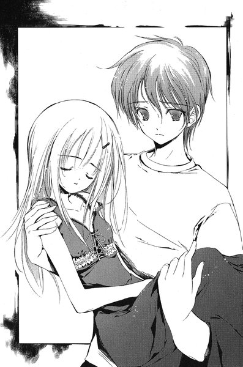
裕生はなにも言わなかった。
もし父親のことを聞かれたらどうしようかとそればかり考えていた。
「ここは？」
「まださっきの駐車場だよ」
「駐車場？」
葉はきょろきょろとあたりを見回している。
「......どこの駐車場ですか？」
その言葉に裕生は戸惑った。
「どこって......幽霊病院の」
彼女はなおも首をかしげている。それから、自分の肩に目を留める。しばらく不思議そうに包帯の様子を確かめていたが、やがて裕生に言った。
「わたし、どうして怪我をしてるんですか？」
裕生は息を呑んだ。さっきの「黒の彼方」の言葉が蘇る──力は完全に取り戻した。
「葉、今日は何月何日？」
彼はおそるおそる尋ねた。
しばらく彼女は首をかしげていたが、やがて頼りなさそうな声で言った。
「九月......三日？」
裕生は言葉を失った。
彼女はこの三日間の記憶を丸ごと失っていた。
エピローグ
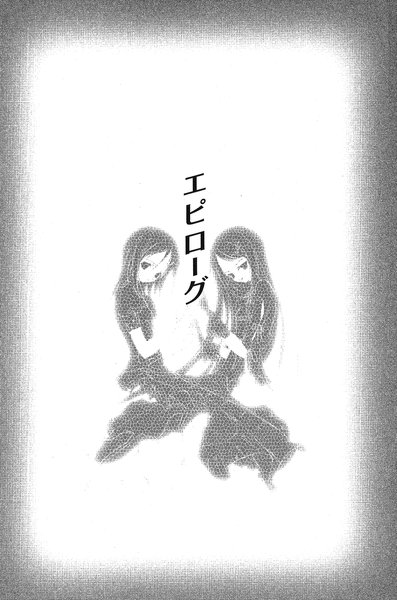
葉が目を覚ますと、病室の窓の外はもう日が落ちかけていた。
（わたしは雛咲葉）
いつものように、彼女は目を閉じて自分についての事柄を思い出し始めた。
（わたしは加賀見高校の一年生。裕生ちゃんの家に住んでるけど、今は病院にいる。今日は......）
一瞬、彼女の独白は堰を落とされたようにぴたりと止まった。しかし、すぐに元通りに進み始める。
（今日は九月七日。わたしは肩に怪我をして入院してる。カゲヌシに操られている人に撃たれた）
撃たれたことは自分の記憶としてではなく、裕生から聞いた話で知っているだけだった。一度は父とも再会したらしい。父はカゲヌシに操られていたところを裕生たちに救われ、葉も一度は解放された父と会って話したという。しかし、父はまたすぐに姿を消してしまった。
父が現れたことも、再び姿を消したことも、葉は深く尋ねなかった。裕生はそのことについて触れたがらない。なにか深い事情があるのは分かっていた。
葉は病室の中を見回した。
たった今まで誰かがすぐそばにいたような気がした。サイドテーブルを見ると、そこに一冊の小さなノートがあった。
「あっ......」
手に取った葉は思わずつぶやいた。その古びた表紙には見覚えがあった。今は裕生が持っているはずの、『くろのかなた』が書かれたノートだった。
さっきまでここに裕生がいたに違いない。
ノートを開くと、以前読んだところの先に物語の続きがあった。
黒い海へ出ていった二人は、
それからなん日も波のあいだをさまよいました。
空には雲ひとつなく、海には魚のかげひとつ見えません。
けれど朝日ののぼるほうへふきつづける、つよい風が二人のみかたでした。
ぴんとはった帆が風をうけて、ぐいぐいと舟はすすんでいきました。
やがて二人ののった舟は、大きな国の港にたどりつきました。
そこは一人の王さまがおさめる国でした。
石づくりの大きな建物があり、たくさんの人がいました。
おまえたちはどこからきたのだ。
人びとは二人にそうたずねました。
黒い海のかなたからきたの。
女の子がおそるおそるこたえると、二人は王さまのすむお城へつれていかれました。
あのけわしい黒い海をわたってきたものは、かいぶつだとおもわれていたのです。
おまえたちは何ものなのだ。
大ひろまにつれて行かれた二人に、王さまがそうたずねました。
男の子がこたえました。
ぼくの乗ったふねがこわれ、この女の子のいる島へ流れついたのです。
ぼくはこの子にコトバをおしえ、舟をつくりました。
そして、二人でこの海をわたってきました。
おまえの名はなんというのだ。
王さまは女の子にそうたずねました。
わたしはくろのかなた。黒い海のかなたからやってきたから。
おまえはだれから生まれたのだ？
女の子はびっくりしました。
人間がだれかからうまれるということをしらなかったのです。
わかりません。それはだいじなことですか？
それを聞いたとたん、王さまはとてもかなしそうな目をしました。
おまえのねがいはなんなのだ？
わたしのねがいはもっとたくさんのことばをしること。
そのために、この人とたびをつづけることです。
王さまは男の子だけを自分のいすのそばによびました。
男の子が王さまのそばにひざまずくと、王さまは小さな声で言いました。
むかし、
あの黒い海のかなたから、おおきなばけものがやってきた。
ばけものはこの国の子どもたちをはんぶん食べてしまったあとで、わたしに言った。
この国のヒメをさしださなければ、あとのはんぶんの子どもを食べてしまうぞ。
わたしはかんがえたあげく、自分のむすめを黒い海にながしてしまった。
あの子はきっとわたしのむすめだ。
だけど、わたしはむすめをすててしまった。
それをしらないほうが、むすめもしあわせだろう。
どうかこの子にほんとうのことをいわないでほしい。
そしてたびの人よ、この子といっしょにいてあげてほしい......
男の子は、女の子のところにもどっていいました。
あの人を、おとうさん、とよんであげてください。
女の子はくびをかしげました。
それはどういうイミのコトバ？
とにかく呼んであげてください、と男の子はこたえました。
おとうさん。
首をかしげながら女の子はそういいました。
王さまはそのコトバをきくと、なみだをながしはじめました。
女の子はますますふしぎにおもいました。
あの人が目からながしているものは、いったいなんですか？
......
気が付くと葉の手からノートが滑り落ちていた。
いつのまにか彼女は泣いていた。
突然わき出した泉のように、止まることなく涙が溢れ続ける。どうして自分が泣いているのか、考えることもできない。
ただ、胸が破れるほど悲しかった。
他に誰もいない病室で、葉は声も立てずに泣き続けた。
＊
裕生は幽霊病院の廊下を歩いている。さっき、『くろのかなた』の続きが書かれたノートを葉のところに届けた帰りだった。葉は眠っていたが、起きたらきっと読んでくれるに違いない。
（どうかあの子といっしょにいてあげて欲しい）
意識しているつもりはないのだが、葉に話したいけれど話せないことや、裕生の抱えている不安が、あの物語に反映されてしまった気がする。
白いリグルを倒してから一夜明けている。清史がどこへ行ったのかは分からない。ひょっとするともう今頃は──。
裕生は首を振ってその考えを振り払った。そのことに触れたくなかったし、それに今は他に考えるべきことがある。
裕生はレインメイカー──船瀬智和の様子を見にここへ来た。
手術室に足を踏み入れようとした裕生はぎょっとして立ちすくんだ。
船瀬は目を覚まして立ち上がっていた。黄色いレインコートを着た彼の姿が、暗い部屋の中でぼんやりと浮かび上がっている。
「......船瀬さん？」
裕生はおそるおそる呼びかける。彼はマスクもゴーグルも身につけておらず、かぶっていたフードも外していた。手入れをしていない髪の毛がだらしなく伸びている。
船瀬はわずかに首を動かして、裕生に無機質な視線を向けた。表情ははっきり見えないが、名前に反応したのではなく、単に声が聞こえたことに反応しただけらしかった。
「あの、傷は大丈夫......ですか？」
船瀬智和という名前を知り、素顔を見てしまうと、以前のように子供に対するように話しかける気にはならなかった。
「......」
船瀬は答えない。力のない目に知性は感じられなかった。
今のこの肉体の主導権を握っているのがカゲヌシだったとしても、千晶が言ったように「知能が高い」とは思えなかった。もちろん、人間の方だとしても明らかに異様だった。なにか事情があるのかもしれない。
「あの、一応病院に行った方がいいと思うんですけど」
答えは返ってこない。彼の左足からの出血はまだ続いているが、無理に連れていこうとしても無駄だろう。裕生は床に落ちていたビニール袋を拾い上げる。昨日、裕生が持ってきた救急キットが入っていた。
「じゃあ、せめてこれ使って下さい」
裕生は船瀬に向かってその袋を差し出した。
理解しているのかいないのか、相手はゆっくりと歩いてくる。一メートルほどの距離まで近づいた時、裕生ははっと息を呑んだ。
「あ......」
ビニール袋を取り落としそうになる。指から離してしまう直前に、手を伸ばした船瀬がそれを掴んでいた。
裕生の隣をすり抜けるようにして、彼は廊下へ出ていく。その横顔がすぐ目の前を通りすぎた。
右耳から後頭部にかけて、船瀬の頭は鈍い銀色に染まっていた。むろん、なにかの塗料が付着しているわけではない。
頭の三分の一ほどが金属化していた。
「......アブサロム」
思わず裕生はつぶやいた。アブサロムは殺人鬼・蔵前司に取り憑いていたカゲヌシで、触れたものを金属に変える能力を持っていた。
船瀬の頭に残っているのは、明らかにアブサロムに襲われた跡だった。知性が損なわれているのは、おそらくこのせいだったのだ。
呆然とする裕生を残して、船瀬はどこかへ去っていった。
アブサロムは二ヶ月も前に「黒の彼方」によって倒されたはずだ。しかし、もしあれがアブサロムの攻撃によるものだとしたら、あのカゲヌシはどこかで生きていることになる。
蔵前司は裕生たちに復讐を誓って逃亡した。もし、あの男がカゲヌシとともにいるのであれば、必ず戻ってくるはずだ。
裕生たちを殺すために。
どうしても不安が頭から離れない。おそるべき力を持つ敵となって、近いうちに自分たちの前に現れる気がしてならなかった。
裕生は他に誰もいない廃墟の中で立ちつくしていた。
あとがき
今、あとがき書いているのは一月ですが、この本が出る頃には三月になります。
ちょうど梅が満開の時期でしょうか。
春は芽吹きの季節。色々な花も咲きますが、花によっては花粉も飛びます。僕は重度の花粉症なので、何も対策を講じないでいると、春先は鼻水を垂らしているだけの生き物と化します。医師に処方してもらった薬を今から飲んでいるのですが、少し頭がぼうっとするので集中力を保つのが難しくなります。そうなると仕事が捗らなくなり、締め切......
............
ん、無意識のうちにまたなにかの言い訳を始めようとしていたようです。いかんいかん。話題を変えましょう。
書いているものの性格のせいか、僕はどちらかというと取材よりも資料を漁る方が多いです。ただ、今回は最初の方に登場する拘置所については取材が必要かなと思いました。一度も入ったことがないせいか（当たり前だ）、うまくイメージが湧かないのです。
法学部出身で犯罪関係に詳しい友人に尋ねたところ、急な見学はかなり難しい様子でした。どうしようかと悩んでいたら、
「後は法律破るしかないんじゃない？ イヤでも見学できるよ」
という超投げやりなアドバイスをもらいました。
......まあ、取材は大切だと思いますが、それだけはさすがに遠慮しました。第一、それはもう「見学」とは言えないと思う......。
結局、複数の資料を照らし合わせることで事なきを得ましたが、最終的に本編に登場したのはほんのわずかだったりします。
さて、四巻まで来ました。
話も佳境に近づきつつありまして、物語の着地点らしきものも見えるところまで来ました。後は開いた風呂敷をうまく閉じるつもりでいます。
次巻で最終巻の予定です（多分）。
もしよろしければ、次巻もお付き合いください。
底本：「シャドウテイカー４ リグル・リグル」メディアワークス 電撃文庫
2005（平成17）年3月25日初版発行
入力：iW
校正：iW
2007年7月22日作成